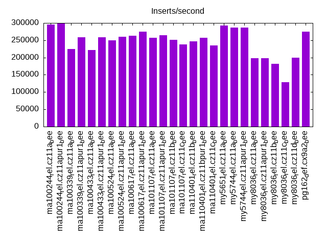
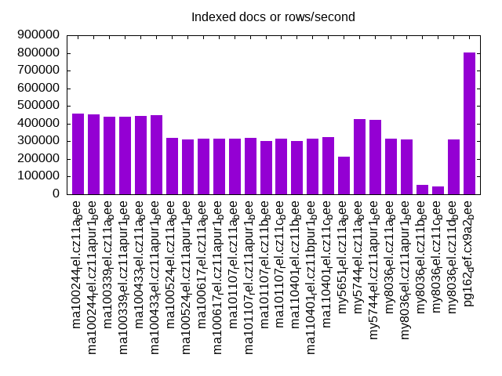
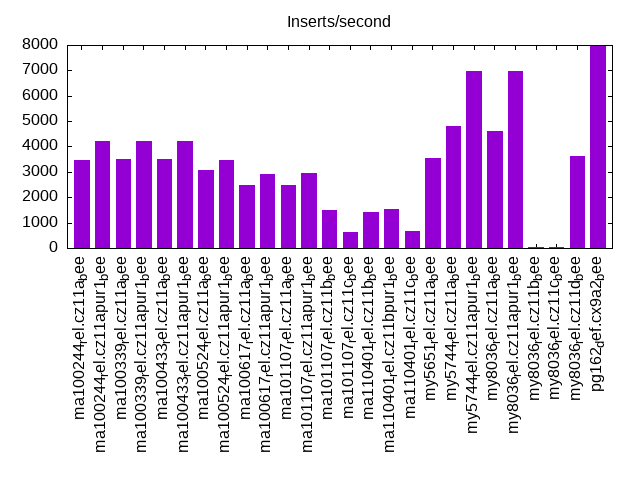
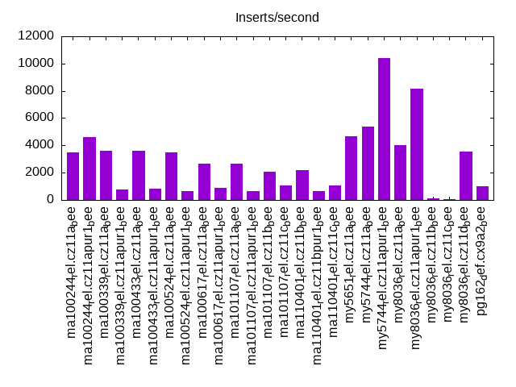
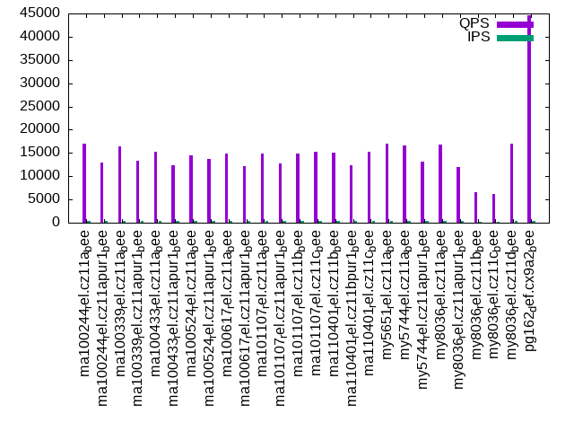
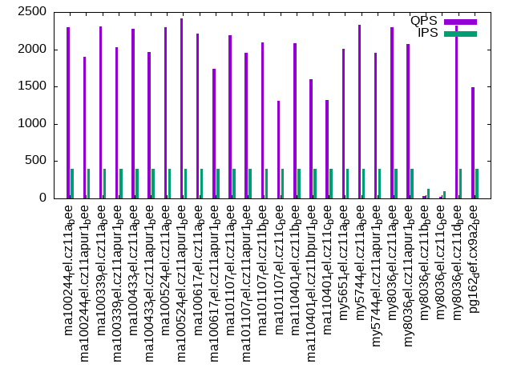
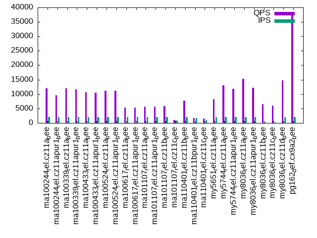
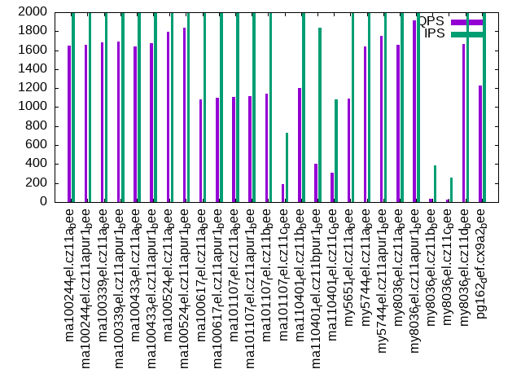
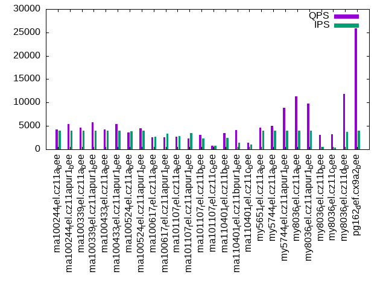
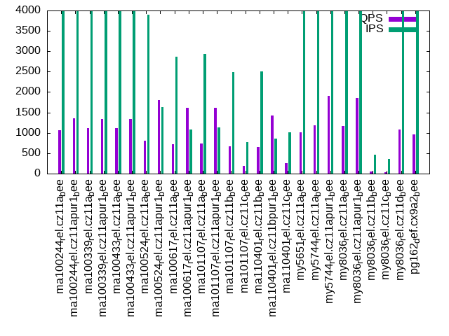

This is a report for the insert benchmark with 800M docs and 4 client(s). It is generated by scripts (bash, awk, sed) and Tufte might not be impressed. An overview of the insert benchmark is here and a short update is here. Below, by DBMS, I mean DBMS+version.config. An example is my8020.c10b40 where my means MySQL, 8020 is version 8.0.20 and c10b40 is the name for the configuration file.
The test server has 8 AMD cores, 16G RAM and an NVMe SSD. It is described here as the Beelink. The benchmark was run with 4 clients and there were 1 or 3 connections per client (1 for queries or inserts without rate limits, 1+1 for rate limited inserts+deletes). It uses 4 tables with a table per client. It loads 800M rows per table without secondary indexes, creates 3 secondary indexes per table, then inserts 2m rows per table with a delete per insert to avoid growing the table. It then does 6 read+write tests for 1800s each that do queries as fast as possible with 100,100,500,500,1000,1000 inserts/s and the same for deletes/s per client concurrent with the queries. The database is larger than memory. Clients and the DBMS share one server. The per-database configs are in the per-database subdirectories here.
The tested DBMS are:
The numbers are inserts/s for l.i0, l.i1 and l.i2, indexed docs (or rows) /s for l.x and queries/s for qr100, qp100 thru qr1000, qp1000" The values are the average rate over the entire test for inserts (IPS) and queries (QPS). The range of values for IPS and QPS is split into 3 parts: bottom 25%, middle 50%, top 25%. Values in the bottom 25% have a red background, values in the top 25% have a green background and values in the middle have no color. A gray background is used for values that can be ignored because the DBMS did not sustain the target insert rate. Red backgrounds are not used when the minimum value is within 80% of the max value.
| dbms | l.i0 | l.x | l.i1 | l.i2 | qr100 | qp100 | qr500 | qp500 | qr1000 | qp1000 |
|---|---|---|---|---|---|---|---|---|---|---|
| ma100244_rel.cz11a_bee | 295530 | 454804 | 3454 | 3516 | 16940 | 2297 | 12031 | 1652 | 4235 | 1059 |
| ma100244_rel.cz11apur1_bee | 299401 | 453258 | 4216 | 4611 | 12928 | 1903 | 9537 | 1655 | 5450 | 1362 |
| ma100339_rel.cz11a_bee | 225289 | 441014 | 3492 | 3596 | 16475 | 2304 | 12070 | 1681 | 4598 | 1121 |
| ma100339_rel.cz11apur1_bee | 259151 | 440771 | 4208 | 778 | 13336 | 2032 | 11701 | 1692 | 5828 | 1347 |
| ma100433_rel.cz11a_bee | 222284 | 444939 | 3493 | 3587 | 15300 | 2278 | 10592 | 1638 | 4276 | 1110 |
| ma100433_rel.cz11apur1_bee | 258064 | 448934 | 4202 | 823 | 12455 | 1968 | 10417 | 1677 | 5438 | 1345 |
| ma100524_rel.cz11a_bee | 250313 | 318725 | 3068 | 3486 | 14462 | 2301 | 11095 | 1791 | 3663 | 807 |
| ma100524_rel.cz11apur1_bee | 259909 | 308761 | 3474 | 660 | 13790 | 2416 | 11134 | 1840 | 4536 | 1797 |
| ma100617_rel.cz11a_bee | 263158 | 313849 | 2467 | 2653 | 14793 | 2209 | 5332 | 1079 | 2584 | 722 |
| ma100617_rel.cz11apur1_bee | 274348 | 314837 | 2905 | 867 | 12247 | 1734 | 5306 | 1100 | 2619 | 1622 |
| ma101107_rel.cz11a_bee | 256410 | 316206 | 2502 | 2689 | 14863 | 2193 | 5644 | 1106 | 2660 | 733 |
| ma101107_rel.cz11apur1_bee | 265252 | 321027 | 2957 | 657 | 12737 | 1953 | 5596 | 1120 | 2371 | 1613 |
| ma101107_rel.cz11b_bee | 251177 | 303030 | 1490 | 2086 | 14856 | 2088 | 5908 | 1144 | 3099 | 661 |
| ma101107_rel.cz11c_bee | 237600 | 315333 | 622 | 1053 | 15327 | 1311 | 1106 | 188 | 807 | 187 |
| ma110401_rel.cz11b_bee | 247295 | 303145 | 1425 | 2162 | 14996 | 2082 | 7724 | 1202 | 3504 | 653 |
| ma110401_rel.cz11bpur1_bee | 257566 | 315582 | 1541 | 648 | 12371 | 1596 | 1744 | 400 | 4070 | 1431 |
| ma110401_rel.cz11c_bee | 235571 | 323887 | 652 | 1043 | 15272 | 1318 | 1480 | 310 | 1386 | 261 |
| my5651_rel.cz11a_bee | 292077 | 212936 | 3540 | 4665 | 17082 | 2005 | 8194 | 1094 | 4592 | 1020 |
| my5744_rel.cz11a_bee | 286533 | 423504 | 4798 | 5405 | 16593 | 2332 | 13106 | 1640 | 5018 | 1185 |
| my5744_rel.cz11apur1_bee | 287150 | 422386 | 6972 | 10390 | 13206 | 1956 | 11840 | 1753 | 8870 | 1911 |
| my8036_rel.cz11a_bee | 198462 | 312867 | 4594 | 4040 | 16817 | 2294 | 15331 | 1660 | 11338 | 1175 |
| my8036_rel.cz11apur1_bee | 197971 | 312134 | 6994 | 8163 | 12030 | 2066 | 12175 | 1915 | 9730 | 1860 |
| my8036_rel.cz11b_bee | 181653 | 52934 | 55 | 101 | 6626 | 28 | 6498 | 37 | 3038 | 44 |
| my8036_rel.cz11c_bee | 128970 | 43900 | 44 | 81 | 6249 | 21 | 5945 | 30 | 3176 | 39 |
| my8036_rel.cz11d_bee | 199054 | 310198 | 3610 | 3532 | 16917 | 2314 | 14778 | 1669 | 11877 | 1085 |
| pg162_def.cx9a2_bee | 275198 | 802407 | 7960 | 991 | 44688 | 1489 | 37615 | 1227 | 25817 | 956 |
This table has relative throughput, throughput for the DBMS relative to the DBMS in the first line, using the absolute throughput from the previous table. Values less than 0.95 have a yellow background. Values greater than 1.05 have a blue background.
| dbms | l.i0 | l.x | l.i1 | l.i2 | qr100 | qp100 | qr500 | qp500 | qr1000 | qp1000 |
|---|---|---|---|---|---|---|---|---|---|---|
| ma100244_rel.cz11a_bee | 1.00 | 1.00 | 1.00 | 1.00 | 1.00 | 1.00 | 1.00 | 1.00 | 1.00 | 1.00 |
| ma100244_rel.cz11apur1_bee | 1.01 | 1.00 | 1.22 | 1.31 | 0.76 | 0.83 | 0.79 | 1.00 | 1.29 | 1.29 |
| ma100339_rel.cz11a_bee | 0.76 | 0.97 | 1.01 | 1.02 | 0.97 | 1.00 | 1.00 | 1.02 | 1.09 | 1.06 |
| ma100339_rel.cz11apur1_bee | 0.88 | 0.97 | 1.22 | 0.22 | 0.79 | 0.88 | 0.97 | 1.02 | 1.38 | 1.27 |
| ma100433_rel.cz11a_bee | 0.75 | 0.98 | 1.01 | 1.02 | 0.90 | 0.99 | 0.88 | 0.99 | 1.01 | 1.05 |
| ma100433_rel.cz11apur1_bee | 0.87 | 0.99 | 1.22 | 0.23 | 0.74 | 0.86 | 0.87 | 1.02 | 1.28 | 1.27 |
| ma100524_rel.cz11a_bee | 0.85 | 0.70 | 0.89 | 0.99 | 0.85 | 1.00 | 0.92 | 1.08 | 0.86 | 0.76 |
| ma100524_rel.cz11apur1_bee | 0.88 | 0.68 | 1.01 | 0.19 | 0.81 | 1.05 | 0.93 | 1.11 | 1.07 | 1.70 |
| ma100617_rel.cz11a_bee | 0.89 | 0.69 | 0.71 | 0.75 | 0.87 | 0.96 | 0.44 | 0.65 | 0.61 | 0.68 |
| ma100617_rel.cz11apur1_bee | 0.93 | 0.69 | 0.84 | 0.25 | 0.72 | 0.75 | 0.44 | 0.67 | 0.62 | 1.53 |
| ma101107_rel.cz11a_bee | 0.87 | 0.70 | 0.72 | 0.76 | 0.88 | 0.95 | 0.47 | 0.67 | 0.63 | 0.69 |
| ma101107_rel.cz11apur1_bee | 0.90 | 0.71 | 0.86 | 0.19 | 0.75 | 0.85 | 0.47 | 0.68 | 0.56 | 1.52 |
| ma101107_rel.cz11b_bee | 0.85 | 0.67 | 0.43 | 0.59 | 0.88 | 0.91 | 0.49 | 0.69 | 0.73 | 0.62 |
| ma101107_rel.cz11c_bee | 0.80 | 0.69 | 0.18 | 0.30 | 0.90 | 0.57 | 0.09 | 0.11 | 0.19 | 0.18 |
| ma110401_rel.cz11b_bee | 0.84 | 0.67 | 0.41 | 0.61 | 0.89 | 0.91 | 0.64 | 0.73 | 0.83 | 0.62 |
| ma110401_rel.cz11bpur1_bee | 0.87 | 0.69 | 0.45 | 0.18 | 0.73 | 0.69 | 0.14 | 0.24 | 0.96 | 1.35 |
| ma110401_rel.cz11c_bee | 0.80 | 0.71 | 0.19 | 0.30 | 0.90 | 0.57 | 0.12 | 0.19 | 0.33 | 0.25 |
| my5651_rel.cz11a_bee | 0.99 | 0.47 | 1.02 | 1.33 | 1.01 | 0.87 | 0.68 | 0.66 | 1.08 | 0.96 |
| my5744_rel.cz11a_bee | 0.97 | 0.93 | 1.39 | 1.54 | 0.98 | 1.02 | 1.09 | 0.99 | 1.18 | 1.12 |
| my5744_rel.cz11apur1_bee | 0.97 | 0.93 | 2.02 | 2.96 | 0.78 | 0.85 | 0.98 | 1.06 | 2.09 | 1.80 |
| my8036_rel.cz11a_bee | 0.67 | 0.69 | 1.33 | 1.15 | 0.99 | 1.00 | 1.27 | 1.00 | 2.68 | 1.11 |
| my8036_rel.cz11apur1_bee | 0.67 | 0.69 | 2.02 | 2.32 | 0.71 | 0.90 | 1.01 | 1.16 | 2.30 | 1.76 |
| my8036_rel.cz11b_bee | 0.61 | 0.12 | 0.02 | 0.03 | 0.39 | 0.01 | 0.54 | 0.02 | 0.72 | 0.04 |
| my8036_rel.cz11c_bee | 0.44 | 0.10 | 0.01 | 0.02 | 0.37 | 0.01 | 0.49 | 0.02 | 0.75 | 0.04 |
| my8036_rel.cz11d_bee | 0.67 | 0.68 | 1.05 | 1.00 | 1.00 | 1.01 | 1.23 | 1.01 | 2.80 | 1.02 |
| pg162_def.cx9a2_bee | 0.93 | 1.76 | 2.30 | 0.28 | 2.64 | 0.65 | 3.13 | 0.74 | 6.10 | 0.90 |
This lists the average rate of inserts/s for the tests that do inserts concurrent with queries. For such tests the query rate is listed in the table above. The read+write tests are setup so that the insert rate should match the target rate every second. Cells that are not at least 95% of the target have a red background to indicate a failure to satisfy the target.
| dbms | qr100.L1 | qp100.L2 | qr500.L3 | qp500.L4 | qr1000.L5 | qp1000.L6 |
|---|---|---|---|---|---|---|
| ma100244_rel.cz11a_bee | 399 | 399 | 1993 | 1993 | 3989 | 3989 |
| ma100244_rel.cz11apur1_bee | 399 | 399 | 1994 | 1994 | 3989 | 3989 |
| ma100339_rel.cz11a_bee | 399 | 399 | 1994 | 1993 | 3987 | 3989 |
| ma100339_rel.cz11apur1_bee | 399 | 399 | 1994 | 1994 | 3980 | 3989 |
| ma100433_rel.cz11a_bee | 399 | 399 | 1993 | 1994 | 3989 | 3989 |
| ma100433_rel.cz11apur1_bee | 398 | 399 | 1993 | 1994 | 3989 | 3989 |
| ma100524_rel.cz11a_bee | 399 | 399 | 1994 | 1994 | 3832 | 3900 |
| ma100524_rel.cz11apur1_bee | 399 | 399 | 1994 | 1994 | 3987 | 1637 |
| ma100617_rel.cz11a_bee | 399 | 399 | 1994 | 1994 | 2749 | 2862 |
| ma100617_rel.cz11apur1_bee | 382 | 399 | 1994 | 1994 | 3310 | 1086 |
| ma101107_rel.cz11a_bee | 399 | 399 | 1994 | 1994 | 2808 | 2940 |
| ma101107_rel.cz11apur1_bee | 396 | 399 | 1994 | 1994 | 3517 | 1141 |
| ma101107_rel.cz11b_bee | 399 | 399 | 1994 | 1994 | 2351 | 2494 |
| ma101107_rel.cz11c_bee | 399 | 399 | 800 | 731 | 722 | 767 |
| ma110401_rel.cz11b_bee | 399 | 399 | 1994 | 1994 | 2399 | 2503 |
| ma110401_rel.cz11bpur1_bee | 389 | 399 | 1737 | 1837 | 1372 | 851 |
| ma110401_rel.cz11c_bee | 398 | 399 | 1042 | 1081 | 1072 | 1012 |
| my5651_rel.cz11a_bee | 399 | 399 | 1993 | 1994 | 3989 | 3987 |
| my5744_rel.cz11a_bee | 399 | 399 | 1994 | 1993 | 3989 | 3989 |
| my5744_rel.cz11apur1_bee | 399 | 399 | 1993 | 1994 | 3989 | 3987 |
| my8036_rel.cz11a_bee | 399 | 399 | 1994 | 1994 | 3989 | 3989 |
| my8036_rel.cz11apur1_bee | 399 | 399 | 1994 | 1994 | 3989 | 3989 |
| my8036_rel.cz11b_bee | 127 | 134 | 210 | 390 | 550 | 469 |
| my8036_rel.cz11c_bee | 100 | 100 | 156 | 257 | 406 | 352 |
| my8036_rel.cz11d_bee | 399 | 399 | 1993 | 1994 | 3700 | 3987 |
| pg162_def.cx9a2_bee | 399 | 399 | 1994 | 1994 | 3989 | 3987 |
| target | 400 | 400 | 2000 | 2000 | 4000 | 4000 |
l.i0: load without secondary indexes. Graphs for performance per 1-second interval are here.
Average throughput:
Insert response time histogram: each cell has the percentage of responses that take <= the time in the header and max is the max response time in seconds. For the max column values in the top 25% of the range have a red background and in the bottom 25% of the range have a green background. The red background is not used when the min value is within 80% of the max value.
| dbms | 256us | 1ms | 4ms | 16ms | 64ms | 256ms | 1s | 4s | 16s | gt | max |
|---|---|---|---|---|---|---|---|---|---|---|---|
| ma100244_rel.cz11a_bee | 2.656 | 96.398 | 0.788 | 0.144 | 0.014 | 0.157 | |||||
| ma100244_rel.cz11apur1_bee | 4.152 | 94.927 | 0.770 | 0.138 | 0.013 | 0.198 | |||||
| ma100339_rel.cz11a_bee | 0.068 | 97.582 | 2.152 | 0.193 | 0.005 | 0.187 | |||||
| ma100339_rel.cz11apur1_bee | 0.026 | 98.951 | 0.922 | 0.091 | 0.010 | 0.183 | |||||
| ma100433_rel.cz11a_bee | 0.016 | 97.551 | 2.210 | 0.218 | 0.005 | 0.207 | |||||
| ma100433_rel.cz11apur1_bee | 0.017 | 99.032 | 0.865 | 0.071 | 0.015 | 0.190 | |||||
| ma100524_rel.cz11a_bee | 0.125 | 98.790 | 0.806 | 0.260 | 0.019 | 0.184 | |||||
| ma100524_rel.cz11apur1_bee | 0.112 | 98.912 | 0.725 | 0.228 | 0.023 | 0.170 | |||||
| ma100617_rel.cz11a_bee | 0.039 | 96.927 | 2.938 | 0.076 | 0.020 | 0.186 | |||||
| ma100617_rel.cz11apur1_bee | 0.056 | 99.162 | 0.680 | 0.080 | 0.021 | 0.247 | |||||
| ma101107_rel.cz11a_bee | 0.106 | 97.277 | 2.565 | 0.032 | 0.020 | 0.179 | |||||
| ma101107_rel.cz11apur1_bee | 0.185 | 98.865 | 0.898 | 0.031 | 0.021 | 0.190 | |||||
| ma101107_rel.cz11b_bee | 0.161 | 97.208 | 2.555 | 0.056 | 0.020 | nonzero | 15.355 | ||||
| ma101107_rel.cz11c_bee | 0.129 | 97.357 | 2.404 | 0.073 | 0.037 | 0.001 | nonzero | nonzero | 31.783 | ||
| ma110401_rel.cz11b_bee | 0.051 | 97.411 | 2.445 | 0.070 | 0.023 | nonzero | nonzero | 16.336 | |||
| ma110401_rel.cz11bpur1_bee | 0.075 | 98.944 | 0.915 | 0.045 | 0.021 | nonzero | nonzero | nonzero | 9.994 | ||
| ma110401_rel.cz11c_bee | 0.015 | 97.559 | 2.317 | 0.071 | 0.037 | 0.001 | nonzero | 15.797 | |||
| my5651_rel.cz11a_bee | 0.744 | 98.688 | 0.392 | 0.169 | 0.007 | 0.191 | |||||
| my5744_rel.cz11a_bee | 0.013 | 99.433 | 0.462 | 0.085 | 0.007 | 0.176 | |||||
| my5744_rel.cz11apur1_bee | 0.014 | 99.421 | 0.474 | 0.084 | 0.007 | 0.174 | |||||
| my8036_rel.cz11a_bee | 99.213 | 0.663 | 0.113 | 0.011 | 0.180 | ||||||
| my8036_rel.cz11apur1_bee | 99.207 | 0.667 | 0.114 | 0.012 | 0.176 | ||||||
| my8036_rel.cz11b_bee | 99.164 | 0.704 | 0.086 | 0.033 | 0.005 | 0.007 | nonzero | 33.471 | |||
| my8036_rel.cz11c_bee | 99.186 | 0.471 | 0.113 | 0.059 | 0.150 | 0.022 | 1.118 | ||||
| my8036_rel.cz11d_bee | 99.211 | 0.690 | 0.089 | 0.010 | 0.171 | ||||||
| pg162_def.cx9a2_bee | 99.812 | 0.182 | 0.004 | 0.001 | 0.001 | 0.001 | nonzero | 12.002 |
Performance metrics for the DBMS listed above. Some are normalized by throughput, others are not. Legend for results is here.
ips qps rps rmbps wps wmbps rpq rkbpq wpi wkbpi csps cpups cspq cpupq dbgb1 dbgb2 rss maxop p50 p99 tag 295530 0 1 0.0 1566.6 110.4 0.000 0.000 0.005 0.383 31043 78.1 0.105 21 52.6 68.5 10.6 0.157 74615 63631 ma100244_rel.cz11a_bee 299401 0 1 0.0 1580.5 111.7 0.000 0.000 0.005 0.382 31466 78.4 0.105 21 52.6 68.5 10.6 0.198 75518 64430 ma100244_rel.cz11apur1_bee 225289 0 1 0.0 1286.7 91.7 0.000 0.000 0.006 0.417 31463 82.5 0.140 29 52.6 68.5 10.6 0.187 56737 45151 ma100339_rel.cz11a_bee 259151 0 1 0.0 1435.2 104.4 0.000 0.000 0.006 0.412 23356 83.1 0.090 26 52.6 68.5 10.6 0.183 65728 54041 ma100339_rel.cz11apur1_bee 222284 0 0 0.0 1286.1 90.7 0.000 0.000 0.006 0.418 30684 82.3 0.138 30 52.6 68.5 NA 0.207 55939 43952 ma100433_rel.cz11a_bee 258064 0 1 0.0 1408.3 103.0 0.000 0.000 0.005 0.409 23464 83.1 0.091 26 52.6 68.5 NA 0.190 65828 53442 ma100433_rel.cz11apur1_bee 250313 0 0 0.0 1569.2 78.4 0.000 0.000 0.006 0.321 52907 80.0 0.211 26 52.6 68.5 10.3 0.184 63431 51544 ma100524_rel.cz11a_bee 259909 0 0 0.0 1767.6 84.1 0.000 0.000 0.007 0.331 38970 80.8 0.150 25 52.6 68.5 10.3 0.170 65729 51045 ma100524_rel.cz11apur1_bee 263158 0 0 0.0 1301.8 74.5 0.000 0.000 0.005 0.290 42612 81.6 0.162 25 52.6 68.5 10.3 0.186 66428 55640 ma100617_rel.cz11a_bee 274348 0 1 0.0 1395.5 78.0 0.000 0.000 0.005 0.291 41702 82.5 0.152 24 52.6 68.5 10.4 0.247 69325 54769 ma100617_rel.cz11apur1_bee 256410 0 1757 6.9 1275.2 74.8 0.007 0.027 0.005 0.299 36433 78.8 0.142 25 52.6 68.5 10.3 0.179 64630 54241 ma101107_rel.cz11a_bee 265252 0 1756 6.9 1334.3 77.4 0.007 0.027 0.005 0.299 35639 79.7 0.134 24 52.6 68.5 10.3 0.190 66628 55540 ma101107_rel.cz11apur1_bee 251177 0 1719 6.7 1270.9 73.3 0.007 0.027 0.005 0.299 36015 77.2 0.143 25 52.6 68.5 10.3 15.355 64430 49946 ma101107_rel.cz11b_bee 237600 0 1623 6.3 256.3 69.3 0.007 0.027 0.001 0.299 33659 73.1 0.142 25 52.6 68.5 10.3 31.783 64429 0 ma101107_rel.cz11c_bee 247295 0 1680 6.6 1259.5 72.2 0.007 0.027 0.005 0.299 35910 76.5 0.145 25 52.6 68.5 10.3 16.336 63865 0 ma110401_rel.cz11b_bee 257566 0 1687 6.6 1316.2 75.1 0.007 0.026 0.005 0.298 35585 78.1 0.138 24 52.6 68.5 10.3 9.994 65750 42144 ma110401_rel.cz11bpur1_bee 235571 0 1614 6.3 252.7 68.7 0.007 0.027 0.001 0.299 34037 73.8 0.144 25 52.6 68.5 10.3 15.797 63265 42355 ma110401_rel.cz11c_bee 292077 0 2377 9.3 1448.5 105.2 0.008 0.033 0.005 0.369 36249 77.0 0.124 21 52.6 68.1 10.7 0.191 72621 60535 my5651_rel.cz11a_bee 286533 0 1 0.0 1432.1 103.2 0.000 0.000 0.005 0.369 32472 79.0 0.113 22 52.6 68.2 11.0 0.176 72269 63231 my5744_rel.cz11a_bee 287150 0 1 0.0 1435.3 103.5 0.000 0.000 0.005 0.369 32325 79.1 0.113 22 52.6 68.2 11.0 0.174 72520 62232 my5744_rel.cz11apur1_bee 198462 0 1 0.0 1199.5 75.0 0.000 0.000 0.006 0.387 23629 74.0 0.119 30 52.5 68.1 11.1 0.180 50144 43453 my8036_rel.cz11a_bee 197971 0 1 0.0 1196.6 74.8 0.000 0.000 0.006 0.387 23525 74.0 0.119 30 52.5 68.1 11.1 0.176 50044 42653 my8036_rel.cz11apur1_bee 181653 0 1 0.0 1302.9 66.0 0.000 0.000 0.007 0.372 21415 70.0 0.118 31 52.5 68.0 11.2 33.471 49464 0 my8036_rel.cz11b_bee 128970 0 0 0.0 798.2 46.9 0.000 0.000 0.006 0.372 16545 51.1 0.128 32 52.5 68.0 11.2 1.118 31957 2097 my8036_rel.cz11c_bee 199054 0 1 0.0 1203.8 75.2 0.000 0.000 0.006 0.387 23871 74.5 0.120 30 52.5 68.1 11.1 0.171 50245 43352 my8036_rel.cz11d_bee 275198 0 437 3.4 746.2 114.8 0.002 0.013 0.003 0.427 28883 80.5 0.105 23 76.5 116.6 2.3 12.002 71701 9259 pg162_def.cx9a2_bee
l.x: create secondary indexes.
Average throughput:
Performance metrics for the DBMS listed above. Some are normalized by throughput, others are not. Legend for results is here.
ips qps rps rmbps wps wmbps rpq rkbpq wpi wkbpi csps cpups cspq cpupq dbgb1 dbgb2 rss maxop p50 p99 tag 454804 0 2802 403.7 3202.0 483.6 0.006 0.909 0.007 1.089 9558 46.0 0.021 8 121.2 137.0 10.7 0.002 NA NA ma100244_rel.cz11a_bee 453258 0 2780 402.6 3199.4 482.9 0.006 0.910 0.007 1.091 10018 45.9 0.022 8 121.2 137.0 10.7 0.002 NA NA ma100244_rel.cz11apur1_bee 441014 0 2725 391.5 3204.8 472.1 0.006 0.909 0.007 1.096 11034 45.8 0.025 8 121.2 137.0 10.7 0.002 NA NA ma100339_rel.cz11a_bee 440771 0 2717 390.7 3216.1 471.7 0.006 0.908 0.007 1.096 11190 45.9 0.025 8 121.2 137.0 10.8 0.002 NA NA ma100339_rel.cz11apur1_bee 444939 0 2768 394.9 3158.0 473.0 0.006 0.909 0.007 1.089 10304 46.0 0.023 8 119.9 135.7 NA 0.002 NA NA ma100433_rel.cz11a_bee 448934 0 2794 398.4 3248.8 478.9 0.006 0.909 0.007 1.092 10172 46.0 0.023 8 119.9 135.8 NA 0.002 NA NA ma100433_rel.cz11apur1_bee 318725 0 1988 281.1 2193.2 317.6 0.006 0.903 0.007 1.020 13980 41.5 0.044 10 119.9 135.7 10.5 0.002 NA NA ma100524_rel.cz11a_bee 308761 0 1910 267.1 2127.4 307.7 0.006 0.886 0.007 1.021 13109 40.4 0.042 10 119.9 135.7 10.5 0.002 NA NA ma100524_rel.cz11apur1_bee 313849 0 2053 279.4 2279.2 314.8 0.007 0.912 0.007 1.027 12784 40.7 0.041 10 119.9 135.8 10.4 0.004 NA NA ma100617_rel.cz11a_bee 314837 0 2077 280.8 2208.4 314.5 0.007 0.913 0.007 1.023 12828 40.9 0.041 10 119.9 135.8 10.4 0.003 NA NA ma100617_rel.cz11apur1_bee 316206 0 2056 281.3 2193.8 314.4 0.007 0.911 0.007 1.018 12215 41.0 0.039 10 119.9 135.8 10.4 0.003 NA NA ma101107_rel.cz11a_bee 321027 0 2043 285.3 2200.7 319.1 0.006 0.910 0.007 1.018 11985 41.5 0.037 10 119.9 135.8 10.4 0.005 NA NA ma101107_rel.cz11apur1_bee 303030 0 2038 271.0 2128.4 302.0 0.007 0.916 0.007 1.021 12659 40.3 0.042 11 119.9 135.8 10.4 0.003 NA NA ma101107_rel.cz11b_bee 315333 0 956 279.7 872.1 313.6 0.003 0.908 0.003 1.018 10263 42.0 0.033 11 119.9 135.8 10.4 0.009 NA NA ma101107_rel.cz11c_bee 303145 0 2049 270.7 2045.4 300.4 0.007 0.914 0.007 1.015 12256 40.5 0.040 11 119.9 135.8 10.4 0.004 NA NA ma110401_rel.cz11b_bee 315582 0 2113 281.7 2173.3 313.5 0.007 0.914 0.007 1.017 11915 41.2 0.038 10 119.9 135.8 10.4 0.004 NA NA ma110401_rel.cz11bpur1_bee 323887 0 964 286.9 885.0 322.9 0.003 0.907 0.003 1.021 9235 42.4 0.029 10 119.9 135.8 10.4 0.004 NA NA ma110401_rel.cz11c_bee 212936 0 1361 188.9 1833.7 249.1 0.006 0.909 0.009 1.198 5241 38.4 0.025 14 111.5 127.0 10.9 0.003 NA NA my5651_rel.cz11a_bee 423504 0 2550 373.7 3513.0 449.7 0.006 0.904 0.008 1.087 12061 45.9 0.028 9 121.2 136.7 11.1 0.002 NA NA my5744_rel.cz11a_bee 422386 0 2519 372.8 3503.4 449.1 0.006 0.904 0.008 1.089 12447 45.8 0.029 9 121.2 136.7 11.1 0.002 NA NA my5744_rel.cz11apur1_bee 312867 0 4946 458.9 6281.3 408.6 0.016 1.502 0.020 1.337 18931 90.2 0.061 23 120.7 136.3 11.2 0.008 NA NA my8036_rel.cz11a_bee 312134 0 4937 458.0 6321.0 407.9 0.016 1.502 0.020 1.338 18934 90.2 0.061 23 120.7 136.3 11.2 0.004 NA NA my8036_rel.cz11apur1_bee 52934 0 836 77.5 1316.7 70.1 0.016 1.499 0.025 1.357 7135 24.5 0.135 37 120.7 136.3 11.2 0.009 NA NA my8036_rel.cz11b_bee 43900 0 552 64.4 1102.7 58.2 0.013 1.503 0.025 1.358 6673 18.8 0.152 34 120.7 136.3 10.6 0.024 NA NA my8036_rel.cz11c_bee 310198 0 4908 455.3 6272.0 405.4 0.016 1.503 0.020 1.338 18721 90.4 0.060 23 120.7 136.3 11.2 0.009 NA NA my8036_rel.cz11d_bee 802407 0 1863 231.7 681.2 228.4 0.002 0.296 0.001 0.291 3265 47.1 0.004 5 153.7 193.7 9.5 0.004 NA NA pg162_def.cx9a2_bee
l.i1: continue load after secondary indexes created with 50 inserts per transaction. Graphs for performance per 1-second interval are here.
Average throughput:
Insert response time histogram: each cell has the percentage of responses that take <= the time in the header and max is the max response time in seconds. For the max column values in the top 25% of the range have a red background and in the bottom 25% of the range have a green background. The red background is not used when the min value is within 80% of the max value.
| dbms | 256us | 1ms | 4ms | 16ms | 64ms | 256ms | 1s | 4s | 16s | gt | max |
|---|---|---|---|---|---|---|---|---|---|---|---|
| ma100244_rel.cz11a_bee | 0.014 | 59.251 | 40.731 | 0.004 | 0.329 | ||||||
| ma100244_rel.cz11apur1_bee | 1.601 | 76.426 | 21.963 | 0.010 | 0.326 | ||||||
| ma100339_rel.cz11a_bee | 0.035 | 59.882 | 40.081 | 0.002 | 0.294 | ||||||
| ma100339_rel.cz11apur1_bee | 1.595 | 75.228 | 23.177 | 0.237 | |||||||
| ma100433_rel.cz11a_bee | 0.028 | 59.906 | 40.058 | 0.005 | 0.002 | 1.149 | |||||
| ma100433_rel.cz11apur1_bee | 1.371 | 74.928 | 23.685 | 0.013 | 0.002 | 1.125 | |||||
| ma100524_rel.cz11a_bee | 0.002 | 68.431 | 31.485 | 0.080 | 0.002 | 1.742 | |||||
| ma100524_rel.cz11apur1_bee | 0.755 | 70.531 | 28.651 | 0.061 | 0.002 | 1.197 | |||||
| ma100617_rel.cz11a_bee | 44.695 | 55.266 | 0.035 | 0.003 | 1.340 | ||||||
| ma100617_rel.cz11apur1_bee | 1.012 | 50.130 | 48.830 | 0.026 | 0.002 | 1.446 | |||||
| ma101107_rel.cz11a_bee | 44.888 | 55.041 | 0.070 | 0.002 | 1.386 | ||||||
| ma101107_rel.cz11apur1_bee | 1.041 | 49.951 | 48.987 | 0.019 | 0.002 | 1.416 | |||||
| ma101107_rel.cz11b_bee | 9.853 | 87.127 | 2.670 | 0.277 | 0.073 | 9.085 | |||||
| ma101107_rel.cz11c_bee | 2.515 | 47.437 | 48.904 | 1.025 | 0.080 | 0.040 | 47.518 | ||||
| ma110401_rel.cz11b_bee | 0.001 | 12.065 | 85.398 | 1.952 | 0.449 | 0.127 | 0.009 | 89.476 | |||
| ma110401_rel.cz11bpur1_bee | 0.195 | 57.791 | 36.084 | 2.536 | 3.354 | 0.013 | 0.026 | 55.988 | |||
| ma110401_rel.cz11c_bee | 1.568 | 58.202 | 39.630 | 0.314 | 0.217 | 0.068 | 59.685 | ||||
| my5651_rel.cz11a_bee | 1.720 | 64.656 | 33.596 | 0.027 | 0.788 | ||||||
| my5744_rel.cz11a_bee | 11.283 | 71.025 | 17.691 | 0.001 | 0.323 | ||||||
| my5744_rel.cz11apur1_bee | 0.316 | 42.757 | 45.941 | 10.985 | 0.001 | 0.267 | |||||
| my8036_rel.cz11a_bee | 7.341 | 74.794 | 17.855 | 0.010 | 0.345 | ||||||
| my8036_rel.cz11apur1_bee | 0.029 | 43.940 | 46.453 | 9.571 | 0.007 | 0.320 | |||||
| my8036_rel.cz11b_bee | 0.636 | 0.127 | 0.268 | 63.499 | 35.470 | 10.888 | |||||
| my8036_rel.cz11c_bee | 0.023 | 0.616 | 0.084 | 47.270 | 52.007 | 14.718 | |||||
| my8036_rel.cz11d_bee | 0.010 | 65.422 | 34.562 | 0.005 | 0.464 | ||||||
| pg162_def.cx9a2_bee | 4.221 | 95.206 | 0.559 | 0.014 | 0.310 |
Delete response time histogram: each cell has the percentage of responses that take <= the time in the header and max is the max response time in seconds. For the max column values in the top 25% of the range have a red background and in the bottom 25% of the range have a green background. The red background is not used when the min value is within 80% of the max value.
| dbms | 256us | 1ms | 4ms | 16ms | 64ms | 256ms | 1s | 4s | 16s | gt | max |
|---|---|---|---|---|---|---|---|---|---|---|---|
| ma100244_rel.cz11a_bee | 22.092 | 74.875 | 3.033 | 0.132 | |||||||
| ma100244_rel.cz11apur1_bee | 23.887 | 72.964 | 3.148 | 0.170 | |||||||
| ma100339_rel.cz11a_bee | 27.937 | 68.852 | 3.212 | 0.142 | |||||||
| ma100339_rel.cz11apur1_bee | 25.300 | 70.960 | 3.740 | 0.133 | |||||||
| ma100433_rel.cz11a_bee | 27.994 | 68.633 | 3.370 | 0.003 | 0.001 | 1.011 | |||||
| ma100433_rel.cz11apur1_bee | 24.884 | 71.212 | 3.902 | 0.002 | 0.938 | ||||||
| ma100524_rel.cz11a_bee | 4.456 | 88.088 | 7.452 | 0.002 | 0.002 | 1.328 | |||||
| ma100524_rel.cz11apur1_bee | 10.559 | 82.583 | 6.854 | 0.002 | 0.002 | 1.107 | |||||
| ma100617_rel.cz11a_bee | 2.784 | 58.591 | 38.608 | 0.016 | 0.002 | 1.277 | |||||
| ma100617_rel.cz11apur1_bee | 16.786 | 48.885 | 34.326 | 0.002 | 0.001 | 1.295 | |||||
| ma101107_rel.cz11a_bee | 2.588 | 58.441 | 38.951 | 0.019 | 0.002 | 1.287 | |||||
| ma101107_rel.cz11apur1_bee | 15.955 | 49.457 | 34.583 | 0.003 | 0.002 | 1.267 | |||||
| ma101107_rel.cz11b_bee | 0.135 | 24.873 | 73.934 | 0.848 | 0.210 | 3.809 | |||||
| ma101107_rel.cz11c_bee | 0.253 | 6.862 | 86.063 | 6.408 | 0.347 | 0.064 | 0.003 | 17.534 | |||
| ma110401_rel.cz11b_bee | 0.179 | 30.652 | 67.982 | 0.843 | 0.262 | 0.076 | 0.006 | 69.143 | |||
| ma110401_rel.cz11bpur1_bee | 1.982 | 66.823 | 26.947 | 1.472 | 2.745 | 0.014 | 0.017 | 36.846 | |||
| ma110401_rel.cz11c_bee | 0.148 | 6.216 | 87.035 | 6.158 | 0.215 | 0.197 | 0.031 | 26.866 | |||
| my5651_rel.cz11a_bee | 12.957 | 65.575 | 21.360 | 0.106 | 0.002 | 0.344 | |||||
| my5744_rel.cz11a_bee | 67.806 | 30.735 | 1.448 | 0.010 | 0.103 | ||||||
| my5744_rel.cz11apur1_bee | 37.307 | 55.825 | 6.831 | 0.037 | 0.152 | ||||||
| my8036_rel.cz11a_bee | 53.660 | 42.938 | 2.958 | 0.444 | 0.164 | ||||||
| my8036_rel.cz11apur1_bee | 27.077 | 64.934 | 7.524 | 0.466 | 0.146 | ||||||
| my8036_rel.cz11b_bee | 20.566 | 1.733 | 16.733 | 36.210 | 24.486 | 0.273 | 2.319 | ||||
| my8036_rel.cz11c_bee | 5.324 | 14.836 | 7.703 | 36.480 | 35.349 | 0.307 | 3.298 | ||||
| my8036_rel.cz11d_bee | 24.547 | 67.059 | 8.393 | 0.001 | 0.330 | ||||||
| pg162_def.cx9a2_bee | 0.534 | 14.816 | 64.955 | 19.695 | 0.001 | 0.108 |
Performance metrics for the DBMS listed above. Some are normalized by throughput, others are not. Legend for results is here.
ips qps rps rmbps wps wmbps rpq rkbpq wpi wkbpi csps cpups cspq cpupq dbgb1 dbgb2 rss maxop p50 p99 tag 3454 0 21124 330.1 25652.8 780.8 6.116 97.856 7.427 231.488 128538 48.5 37.216 1123 144.5 160.3 10.5 0.329 899 450 ma100244_rel.cz11a_bee 4216 0 20985 327.9 25085.3 761.0 4.977 79.638 5.950 184.840 126679 33.6 30.047 638 163.5 179.6 10.5 0.326 1099 449 ma100244_rel.cz11apur1_bee 3492 0 21361 333.8 25663.2 788.5 6.118 97.888 7.350 231.246 137972 43.9 39.517 1006 144.5 160.3 10.5 0.294 899 450 ma100339_rel.cz11a_bee 4208 0 20873 326.1 24810.1 754.9 4.961 79.371 5.896 183.720 130311 31.2 30.970 593 163.6 179.9 10.5 0.237 1099 499 ma100339_rel.cz11apur1_bee 3493 0 21456 335.3 26045.3 793.4 6.142 98.271 7.456 232.555 137846 44.1 39.459 1010 144.5 160.3 NA 1.149 899 499 ma100433_rel.cz11a_bee 4202 0 20927 327.0 25108.0 758.2 4.980 79.680 5.975 184.754 129497 31.4 30.817 598 163.6 179.9 NA 1.125 1099 450 ma100433_rel.cz11apur1_bee 3068 0 18675 291.8 19159.6 568.4 6.087 97.392 6.245 189.722 177122 35.9 57.732 936 144.5 160.3 10.2 1.742 799 449 ma100524_rel.cz11a_bee 3474 0 17176 268.4 19674.5 577.7 4.943 79.096 5.663 170.269 161141 27.0 46.379 622 163.6 180.0 10.3 1.197 899 400 ma100524_rel.cz11apur1_bee 2467 0 15190 237.3 13988.6 415.7 6.157 98.510 5.670 172.545 132083 24.6 53.536 798 144.5 160.3 10.1 1.340 649 449 ma100617_rel.cz11a_bee 2905 0 14513 226.8 14837.6 435.4 4.996 79.933 5.107 153.485 123651 21.4 42.563 589 163.7 180.0 10.2 1.446 749 400 ma100617_rel.cz11apur1_bee 2502 0 15562 241.3 14252.9 421.9 6.220 98.762 5.697 172.667 134681 24.7 53.832 790 144.5 160.3 10.1 1.386 649 400 ma101107_rel.cz11a_bee 2957 0 14941 231.7 15204.7 443.8 5.052 80.222 5.141 153.659 127338 21.4 43.057 579 163.7 180.0 10.2 1.416 750 447 ma101107_rel.cz11apur1_bee 1490 0 9220 143.0 8326.5 238.7 6.187 98.281 5.588 164.010 87527 15.8 58.739 848 144.5 160.3 10.1 9.085 350 0 ma101107_rel.cz11b_bee 622 0 3781 64.4 3239.5 99.8 6.076 105.938 5.206 164.231 68882 15.8 110.690 2031 144.5 160.3 10.1 47.518 150 0 ma101107_rel.cz11c_bee 1425 0 8914 138.3 8103.4 232.3 6.256 99.386 5.688 166.962 83563 15.1 58.653 848 144.5 160.3 10.1 89.476 350 0 ma110401_rel.cz11b_bee 1541 0 7765 120.4 8212.8 231.1 5.040 80.055 5.331 153.639 84178 13.0 54.640 675 163.8 180.0 10.2 55.988 300 0 ma110401_rel.cz11bpur1_bee 652 0 3962 67.9 3344.8 105.4 6.077 106.647 5.129 165.474 58153 14.2 89.178 1742 144.5 160.3 10.1 59.685 150 0 ma110401_rel.cz11c_bee 3540 0 12981 201.4 24846.1 538.6 3.667 58.259 7.019 155.806 90397 33.0 25.537 746 157.5 174.0 10.5 0.788 750 449 my5651_rel.cz11a_bee 4798 0 18354 286.8 23589.6 741.7 3.826 61.209 4.917 158.303 116454 47.5 24.273 792 156.3 172.6 10.7 0.323 1099 549 my5744_rel.cz11a_bee 6972 0 13658 213.4 18844.0 633.2 1.959 31.345 2.703 93.005 92862 44.5 13.320 511 165.1 183.1 10.7 0.267 1199 549 my5744_rel.cz11apur1_bee 4594 0 18874 294.9 28283.7 776.1 4.108 65.727 6.156 172.972 111639 53.0 24.299 923 153.7 170.0 10.8 0.345 1099 599 my8036_rel.cz11a_bee 6994 0 13733 214.6 22607.3 653.7 1.963 31.414 3.232 95.707 88853 49.9 12.703 571 164.4 182.5 10.8 0.320 1349 599 my8036_rel.cz11apur1_bee 55 0 282 4.4 768.5 11.1 5.159 82.537 14.074 209.049 11729 3.1 214.825 4542 151.3 167.3 10.7 10.888 0 0 my8036_rel.cz11b_bee 44 0 223 4.0 737.5 9.1 5.086 93.607 16.838 212.290 12707 3.6 290.125 6575 151.0 167.0 10.6 14.718 0 0 my8036_rel.cz11c_bee 3610 0 22080 345.0 31203.9 840.9 6.117 97.870 8.644 238.544 134369 48.8 37.224 1082 144.0 159.6 10.7 0.464 944 599 my8036_rel.cz11d_bee 7960 0 12996 104.4 12450.2 193.9 1.633 13.436 1.564 24.943 37396 41.0 4.698 412 154.8 194.8 6.6 0.310 1998 1249 pg162_def.cx9a2_bee
l.i2: continue load after secondary indexes created with 5 inserts per transaction. Graphs for performance per 1-second interval are here.
Average throughput:
Insert response time histogram: each cell has the percentage of responses that take <= the time in the header and max is the max response time in seconds. For the max column values in the top 25% of the range have a red background and in the bottom 25% of the range have a green background. The red background is not used when the min value is within 80% of the max value.
| dbms | 256us | 1ms | 4ms | 16ms | 64ms | 256ms | 1s | 4s | 16s | gt | max |
|---|---|---|---|---|---|---|---|---|---|---|---|
| ma100244_rel.cz11a_bee | 0.002 | 44.376 | 52.512 | 3.110 | 0.063 | ||||||
| ma100244_rel.cz11apur1_bee | 0.002 | 59.386 | 39.479 | 1.133 | 0.058 | ||||||
| ma100339_rel.cz11a_bee | 0.001 | 46.973 | 50.045 | 2.981 | 0.053 | ||||||
| ma100339_rel.cz11apur1_bee | 0.002 | 26.573 | 17.067 | 56.091 | 0.266 | 0.107 | |||||
| ma100433_rel.cz11a_bee | 0.001 | 47.153 | 49.950 | 2.895 | nonzero | 0.067 | |||||
| ma100433_rel.cz11apur1_bee | 0.002 | 30.697 | 19.309 | 49.708 | 0.284 | 0.118 | |||||
| ma100524_rel.cz11a_bee | nonzero | 33.773 | 63.172 | 3.054 | nonzero | 0.065 | |||||
| ma100524_rel.cz11apur1_bee | 20.265 | 23.114 | 50.835 | 5.787 | 0.122 | ||||||
| ma100617_rel.cz11a_bee | 69.427 | 25.880 | 1.103 | 3.590 | 0.145 | ||||||
| ma100617_rel.cz11apur1_bee | 0.001 | 50.228 | 17.063 | 25.735 | 6.973 | 0.171 | |||||
| ma101107_rel.cz11a_bee | nonzero | 69.375 | 25.656 | 1.358 | 3.610 | 0.132 | |||||
| ma101107_rel.cz11apur1_bee | 0.001 | 37.368 | 12.769 | 40.996 | 8.866 | 0.171 | |||||
| ma101107_rel.cz11b_bee | 21.428 | 64.342 | 13.427 | 0.693 | 0.108 | 0.002 | 1.281 | ||||
| ma101107_rel.cz11c_bee | 10.473 | 34.902 | 53.682 | 0.767 | 0.143 | 0.033 | 3.401 | ||||
| ma110401_rel.cz11b_bee | 19.977 | 66.280 | 12.893 | 0.832 | 0.018 | 0.961 | |||||
| ma110401_rel.cz11bpur1_bee | 0.001 | 31.142 | 17.634 | 45.286 | 5.627 | 0.238 | 0.073 | 1.334 | |||
| ma110401_rel.cz11c_bee | 13.906 | 32.441 | 52.543 | 0.823 | 0.279 | 0.009 | 1.408 | ||||
| my5651_rel.cz11a_bee | 11.064 | 53.145 | 34.187 | 1.599 | 0.005 | 0.101 | |||||
| my5744_rel.cz11a_bee | 9.545 | 65.633 | 23.439 | 1.382 | 0.001 | 0.068 | |||||
| my5744_rel.cz11apur1_bee | 51.193 | 44.390 | 3.973 | 0.385 | 0.058 | 0.199 | |||||
| my8036_rel.cz11a_bee | 1.999 | 65.667 | 29.521 | 2.192 | 0.622 | 0.210 | |||||
| my8036_rel.cz11apur1_bee | 32.982 | 62.731 | 3.533 | 0.452 | 0.302 | 0.230 | |||||
| my8036_rel.cz11b_bee | 2.649 | 3.429 | 1.112 | 11.481 | 52.513 | 28.803 | 0.011 | 1.272 | |||
| my8036_rel.cz11c_bee | 1.433 | 5.199 | 1.511 | 8.823 | 44.102 | 38.473 | 0.459 | 1.809 | |||
| my8036_rel.cz11d_bee | 61.135 | 35.541 | 2.882 | 0.443 | 0.119 | ||||||
| pg162_def.cx9a2_bee | 0.022 | 97.949 | 2.010 | 0.019 | 0.037 |
Delete response time histogram: each cell has the percentage of responses that take <= the time in the header and max is the max response time in seconds. For the max column values in the top 25% of the range have a red background and in the bottom 25% of the range have a green background. The red background is not used when the min value is within 80% of the max value.
| dbms | 256us | 1ms | 4ms | 16ms | 64ms | 256ms | 1s | 4s | 16s | gt | max |
|---|---|---|---|---|---|---|---|---|---|---|---|
| ma100244_rel.cz11a_bee | 0.015 | 61.501 | 37.162 | 1.322 | 0.060 | ||||||
| ma100244_rel.cz11apur1_bee | 0.003 | 61.573 | 37.410 | 1.014 | 0.060 | ||||||
| ma100339_rel.cz11a_bee | 0.017 | 62.058 | 36.539 | 1.385 | 0.052 | ||||||
| ma100339_rel.cz11apur1_bee | 0.003 | 27.671 | 16.034 | 56.074 | 0.219 | 0.106 | |||||
| ma100433_rel.cz11a_bee | 0.010 | 61.668 | 36.945 | 1.377 | 0.060 | ||||||
| ma100433_rel.cz11apur1_bee | 0.002 | 31.913 | 18.186 | 49.661 | 0.238 | 0.107 | |||||
| ma100524_rel.cz11a_bee | 0.008 | 61.320 | 37.576 | 1.096 | 0.063 | ||||||
| ma100524_rel.cz11apur1_bee | 0.002 | 22.299 | 21.162 | 52.292 | 4.245 | 0.112 | |||||
| ma100617_rel.cz11a_bee | 0.009 | 75.540 | 20.761 | 0.414 | 3.277 | 0.139 | |||||
| ma100617_rel.cz11apur1_bee | 0.002 | 50.805 | 16.544 | 25.745 | 6.905 | 0.166 | |||||
| ma101107_rel.cz11a_bee | 0.006 | 75.755 | 20.374 | 0.539 | 3.326 | 0.127 | |||||
| ma101107_rel.cz11apur1_bee | 0.002 | 37.787 | 12.389 | 41.062 | 8.759 | 0.166 | |||||
| ma101107_rel.cz11b_bee | 0.002 | 34.326 | 54.540 | 10.421 | 0.656 | 0.056 | 0.779 | ||||
| ma101107_rel.cz11c_bee | 28.248 | 31.184 | 39.884 | 0.574 | 0.106 | 0.004 | 3.384 | ||||
| ma110401_rel.cz11b_bee | nonzero | 32.169 | 57.108 | 9.961 | 0.755 | 0.007 | 0.788 | ||||
| ma110401_rel.cz11bpur1_bee | 0.001 | 32.748 | 16.122 | 45.273 | 5.551 | 0.237 | 0.069 | 1.313 | |||
| ma110401_rel.cz11c_bee | 30.959 | 25.860 | 42.296 | 0.639 | 0.244 | 0.002 | 1.522 | ||||
| my5651_rel.cz11a_bee | 20.069 | 60.684 | 18.446 | 0.800 | 0.002 | 0.084 | |||||
| my5744_rel.cz11a_bee | 38.707 | 54.173 | 6.921 | 0.198 | 0.001 | 0.064 | |||||
| my5744_rel.cz11apur1_bee | 41.522 | 54.309 | 3.790 | 0.343 | 0.037 | 0.171 | |||||
| my8036_rel.cz11a_bee | 18.626 | 74.337 | 6.059 | 0.529 | 0.449 | 0.207 | |||||
| my8036_rel.cz11apur1_bee | 16.633 | 79.279 | 3.365 | 0.427 | 0.296 | 0.231 | |||||
| my8036_rel.cz11b_bee | 23.380 | 36.482 | 4.364 | 21.924 | 13.675 | 0.153 | 0.022 | 1.915 | |||
| my8036_rel.cz11c_bee | 13.402 | 40.672 | 5.800 | 21.106 | 18.476 | 0.525 | 0.018 | 2.743 | |||
| my8036_rel.cz11d_bee | 0.001 | 71.793 | 26.085 | 1.764 | 0.357 | 0.145 | |||||
| pg162_def.cx9a2_bee | 28.895 | 71.105 | nonzero | 0.064 |
Performance metrics for the DBMS listed above. Some are normalized by throughput, others are not. Legend for results is here.
ips qps rps rmbps wps wmbps rpq rkbpq wpi wkbpi csps cpups cspq cpupq dbgb1 dbgb2 rss maxop p50 p99 tag 3516 0 19558 305.6 22973.1 693.7 5.562 88.992 6.533 202.004 125193 54.1 35.603 1231 144.5 160.3 10.5 0.063 879 734 ma100244_rel.cz11a_bee 4611 0 20302 317.2 22302.2 678.2 4.403 70.450 4.837 150.626 129925 42.5 28.178 737 164.6 180.9 10.5 0.058 1154 949 ma100244_rel.cz11apur1_bee 3596 0 20000 312.5 23209.2 707.5 5.563 89.001 6.455 201.503 133234 50.4 37.056 1121 144.5 160.3 10.5 0.053 894 760 ma100339_rel.cz11a_bee 778 0 8883 138.8 9726.0 297.7 11.410 182.561 12.493 391.630 58607 17.5 75.282 1798 164.1 180.5 10.5 0.107 115 90 ma100339_rel.cz11apur1_bee 3587 0 20064 313.5 23375.3 708.1 5.593 89.488 6.516 202.119 132793 50.7 37.017 1131 144.5 160.3 NA 0.067 899 744 ma100433_rel.cz11a_bee 823 0 9031 141.1 9935.2 301.6 10.978 175.655 12.078 375.404 58701 17.7 71.360 1721 164.1 180.6 NA 0.118 110 90 ma100433_rel.cz11apur1_bee 3486 0 19197 300.0 18473.5 557.5 5.507 88.116 5.300 163.786 180032 45.6 51.647 1047 144.5 160.3 10.2 0.065 874 796 ma100524_rel.cz11a_bee 660 0 8581 134.1 8958.5 271.1 13.007 208.115 13.580 420.756 79290 15.8 120.192 1916 164.1 180.8 10.3 0.122 100 75 ma100524_rel.cz11apur1_bee 2653 0 14929 233.3 12976.9 391.3 5.627 90.027 4.891 151.016 130087 31.2 49.028 941 144.5 160.3 10.1 0.145 665 574 ma100617_rel.cz11a_bee 867 0 8330 130.2 5839.1 177.2 9.611 153.780 6.737 209.312 62025 13.5 71.564 1246 164.5 181.0 10.2 0.171 85 70 ma100617_rel.cz11apur1_bee 2689 0 15918 238.9 13076.0 394.0 5.920 90.965 4.863 150.021 133310 31.1 49.576 925 144.5 160.3 10.1 0.132 679 594 ma101107_rel.cz11a_bee 657 0 7957 122.8 5233.8 158.7 12.115 191.455 7.969 247.399 57963 12.2 88.251 1486 164.3 180.8 10.2 0.171 90 65 ma101107_rel.cz11apur1_bee 2086 0 12258 183.9 9860.4 286.3 5.876 90.264 4.727 140.528 109286 25.0 52.390 959 144.5 160.3 10.1 1.281 544 10 ma101107_rel.cz11b_bee 1053 0 6044 92.5 4915.9 143.9 5.742 89.954 4.670 139.986 88801 23.3 84.363 1771 144.5 160.3 10.0 3.401 270 5 ma101107_rel.cz11c_bee 2162 0 12869 193.2 10338.0 301.0 5.952 91.480 4.781 142.565 110399 25.3 51.061 936 144.5 160.3 10.1 0.961 549 30 ma110401_rel.cz11b_bee 648 0 7241 111.7 5040.7 146.3 11.179 176.522 7.782 231.361 56629 11.1 87.431 1371 164.3 180.8 10.2 1.334 95 5 ma110401_rel.cz11bpur1_bee 1043 0 6040 92.8 4947.9 145.2 5.791 91.092 4.744 142.577 74414 20.7 71.346 1588 144.5 160.3 9.9 1.408 275 5 ma110401_rel.cz11c_bee 4665 0 10823 155.4 17262.7 402.4 2.320 34.122 3.701 88.329 86945 50.2 18.639 861 158.6 175.6 10.5 0.101 1164 904 my5651_rel.cz11a_bee 5405 0 13421 209.7 17865.7 552.3 2.483 39.727 3.305 104.619 102226 62.2 18.912 921 156.8 173.7 10.7 0.068 1359 1090 my5744_rel.cz11a_bee 10390 0 6133 95.8 9792.3 320.5 0.590 9.445 0.943 31.591 68438 69.3 6.587 534 165.6 184.5 10.7 0.199 2712 1948 my5744_rel.cz11apur1_bee 4040 0 15058 235.3 22662.7 600.1 3.727 59.629 5.609 152.095 97580 63.3 24.151 1253 153.7 170.2 10.8 0.210 1009 614 my8036_rel.cz11a_bee 8163 0 6113 95.5 11218.1 306.5 0.749 11.981 1.374 38.448 60313 68.8 7.388 674 164.8 183.7 10.8 0.230 2092 1238 my8036_rel.cz11apur1_bee 101 0 295 4.6 799.6 11.6 2.930 46.880 7.933 117.581 6204 5.7 61.549 4524 154.1 170.2 10.8 1.272 25 10 my8036_rel.cz11b_bee 81 0 232 4.6 762.8 9.5 2.875 58.099 9.463 120.761 7012 6.8 87.002 6749 153.8 169.9 8.3 1.809 20 5 my8036_rel.cz11c_bee 3532 0 19754 308.7 27187.5 710.6 5.593 89.487 7.697 206.013 121212 52.0 34.318 1178 144.0 159.6 10.7 0.119 904 655 my8036_rel.cz11d_bee 991 0 1575 12.4 2055.6 26.5 1.590 12.835 2.075 27.440 7924 46.6 7.999 3763 155.0 195.1 6.9 0.037 245 225 pg162_def.cx9a2_bee
qr100.L1: range queries with 100 insert/s per client. Graphs for performance per 1-second interval are here.
Average throughput:
Query response time histogram: each cell has the percentage of responses that take <= the time in the header and max is the max response time in seconds. For max values in the top 25% of the range have a red background and in the bottom 25% of the range have a green background. The red background is not used when the min value is within 80% of the max value.
| dbms | 256us | 1ms | 4ms | 16ms | 64ms | 256ms | 1s | 4s | 16s | gt | max |
|---|---|---|---|---|---|---|---|---|---|---|---|
| ma100244_rel.cz11a_bee | 79.502 | 20.217 | 0.266 | 0.015 | nonzero | 0.036 | |||||
| ma100244_rel.cz11apur1_bee | 51.304 | 47.165 | 1.370 | 0.156 | 0.005 | nonzero | 0.083 | ||||
| ma100339_rel.cz11a_bee | 75.787 | 23.942 | 0.261 | 0.009 | nonzero | 0.023 | |||||
| ma100339_rel.cz11apur1_bee | 60.893 | 36.986 | 1.981 | 0.138 | 0.003 | nonzero | 0.072 | ||||
| ma100433_rel.cz11a_bee | 65.194 | 34.507 | 0.289 | 0.010 | nonzero | 0.029 | |||||
| ma100433_rel.cz11apur1_bee | 56.495 | 40.896 | 2.391 | 0.212 | 0.007 | 0.055 | |||||
| ma100524_rel.cz11a_bee | 57.324 | 42.356 | 0.304 | 0.016 | nonzero | 0.024 | |||||
| ma100524_rel.cz11apur1_bee | 64.659 | 33.800 | 1.385 | 0.153 | 0.004 | nonzero | 0.076 | ||||
| ma100617_rel.cz11a_bee | 61.901 | 37.775 | 0.289 | 0.027 | 0.007 | 0.051 | |||||
| ma100617_rel.cz11apur1_bee | 60.135 | 37.285 | 2.390 | 0.115 | 0.075 | nonzero | 0.084 | ||||
| ma101107_rel.cz11a_bee | 62.685 | 36.995 | 0.285 | 0.028 | 0.007 | 0.047 | |||||
| ma101107_rel.cz11apur1_bee | 64.006 | 33.860 | 1.956 | 0.109 | 0.069 | nonzero | 0.068 | ||||
| ma101107_rel.cz11b_bee | 62.511 | 37.177 | 0.273 | 0.033 | 0.006 | 0.054 | |||||
| ma101107_rel.cz11c_bee | 67.452 | 32.246 | 0.262 | 0.031 | 0.008 | nonzero | 0.090 | ||||
| ma110401_rel.cz11b_bee | 64.950 | 34.737 | 0.269 | 0.032 | 0.012 | 0.050 | |||||
| ma110401_rel.cz11bpur1_bee | 62.328 | 35.160 | 2.354 | 0.088 | 0.070 | nonzero | 0.080 | ||||
| ma110401_rel.cz11c_bee | 67.942 | 31.746 | 0.264 | 0.036 | 0.012 | nonzero | 0.110 | ||||
| my5651_rel.cz11a_bee | 89.659 | 8.564 | 1.554 | 0.222 | 0.002 | nonzero | 0.070 | ||||
| my5744_rel.cz11a_bee | 83.500 | 15.710 | 0.646 | 0.143 | 0.002 | 0.058 | |||||
| my5744_rel.cz11apur1_bee | 51.865 | 46.921 | 1.109 | 0.101 | 0.004 | nonzero | 0.111 | ||||
| my8036_rel.cz11a_bee | 76.133 | 23.738 | 0.125 | 0.004 | nonzero | 0.034 | |||||
| my8036_rel.cz11apur1_bee | 47.489 | 52.113 | 0.380 | 0.018 | 0.001 | nonzero | 0.082 | ||||
| my8036_rel.cz11b_bee | 38.357 | 57.869 | 3.103 | 0.226 | 0.382 | 0.057 | 0.007 | nonzero | 1.364 | ||
| my8036_rel.cz11c_bee | 40.723 | 55.571 | 3.059 | 0.200 | 0.344 | 0.095 | 0.008 | nonzero | 1.422 | ||
| my8036_rel.cz11d_bee | 75.114 | 24.838 | 0.043 | 0.005 | nonzero | 0.028 | |||||
| pg162_def.cx9a2_bee | 99.927 | 0.067 | 0.006 | 0.001 | 0.015 |
Insert response time histogram: each cell has the percentage of responses that take <= the time in the header and max is the max response time in seconds. For max values in the top 25% of the range have a red background and in the bottom 25% of the range have a green background. The red background is not used when the min value is within 80% of the max value.
| dbms | 256us | 1ms | 4ms | 16ms | 64ms | 256ms | 1s | 4s | 16s | gt | max |
|---|---|---|---|---|---|---|---|---|---|---|---|
| ma100244_rel.cz11a_bee | 0.444 | 98.750 | 0.806 | 0.108 | |||||||
| ma100244_rel.cz11apur1_bee | 0.014 | 96.799 | 3.188 | 0.132 | |||||||
| ma100339_rel.cz11a_bee | 1.222 | 98.326 | 0.451 | 0.101 | |||||||
| ma100339_rel.cz11apur1_bee | 32.868 | 2.576 | 64.556 | 0.572 | |||||||
| ma100433_rel.cz11a_bee | 1.056 | 98.590 | 0.354 | 0.105 | |||||||
| ma100433_rel.cz11apur1_bee | 19.465 | 1.764 | 78.771 | 0.634 | |||||||
| ma100524_rel.cz11a_bee | 0.042 | 98.576 | 1.382 | 0.080 | |||||||
| ma100524_rel.cz11apur1_bee | 61.979 | 12.021 | 26.000 | 0.572 | |||||||
| ma100617_rel.cz11a_bee | 2.764 | 90.861 | 6.375 | 0.093 | |||||||
| ma100617_rel.cz11apur1_bee | 4.069 | 0.861 | 95.069 | 0.621 | |||||||
| ma101107_rel.cz11a_bee | 1.882 | 92.069 | 6.049 | 0.100 | |||||||
| ma101107_rel.cz11apur1_bee | 25.000 | 6.583 | 68.417 | 0.581 | |||||||
| ma101107_rel.cz11b_bee | 1.750 | 90.250 | 8.000 | 0.095 | |||||||
| ma101107_rel.cz11c_bee | 0.056 | 85.528 | 14.417 | 0.168 | |||||||
| ma110401_rel.cz11b_bee | 2.528 | 91.500 | 5.972 | 0.103 | |||||||
| ma110401_rel.cz11bpur1_bee | 2.688 | 0.312 | 97.000 | 0.621 | |||||||
| ma110401_rel.cz11c_bee | 0.021 | 83.882 | 16.097 | 0.163 | |||||||
| my5651_rel.cz11a_bee | 0.160 | 88.181 | 11.660 | 0.149 | |||||||
| my5744_rel.cz11a_bee | 9.507 | 83.271 | 7.222 | 0.177 | |||||||
| my5744_rel.cz11apur1_bee | 0.097 | 27.514 | 71.757 | 0.632 | 0.099 | ||||||
| my8036_rel.cz11a_bee | 0.438 | 96.458 | 3.104 | 0.185 | |||||||
| my8036_rel.cz11apur1_bee | 0.021 | 61.132 | 37.333 | 1.514 | 0.146 | ||||||
| my8036_rel.cz11b_bee | 12.403 | 87.583 | 0.014 | 4.280 | |||||||
| my8036_rel.cz11c_bee | 0.021 | 6.729 | 91.361 | 1.889 | 5.680 | ||||||
| my8036_rel.cz11d_bee | 0.104 | 99.090 | 0.806 | 0.153 | |||||||
| pg162_def.cx9a2_bee | 33.278 | 66.722 | 0.041 |
Delete response time histogram: each cell has the percentage of responses that take <= the time in the header and max is the max response time in seconds. For max values in the top 25% of the range have a red background and in the bottom 25% of the range have a green background. The red background is not used when the min value is within 80% of the max value.
| dbms | 256us | 1ms | 4ms | 16ms | 64ms | 256ms | 1s | 4s | 16s | gt | max |
|---|---|---|---|---|---|---|---|---|---|---|---|
| ma100244_rel.cz11a_bee | 34.861 | 65.049 | 0.090 | 0.085 | |||||||
| ma100244_rel.cz11apur1_bee | 6.299 | 92.944 | 0.757 | 0.127 | |||||||
| ma100339_rel.cz11a_bee | 60.556 | 39.417 | 0.028 | 0.080 | |||||||
| ma100339_rel.cz11apur1_bee | 3.062 | 32.264 | 0.118 | 64.556 | 0.549 | ||||||
| ma100433_rel.cz11a_bee | 54.653 | 45.319 | 0.028 | 0.082 | |||||||
| ma100433_rel.cz11apur1_bee | 5.569 | 15.375 | 0.285 | 78.771 | 0.602 | ||||||
| ma100524_rel.cz11a_bee | 0.722 | 99.278 | 0.057 | ||||||||
| ma100524_rel.cz11apur1_bee | 13.924 | 58.361 | 1.715 | 26.000 | 0.537 | ||||||
| ma100617_rel.cz11a_bee | 41.597 | 56.806 | 1.597 | 0.083 | |||||||
| ma100617_rel.cz11apur1_bee | 0.104 | 4.361 | 0.465 | 95.069 | 0.596 | ||||||
| ma101107_rel.cz11a_bee | 37.271 | 61.243 | 1.486 | 0.089 | |||||||
| ma101107_rel.cz11apur1_bee | 0.771 | 27.660 | 3.153 | 68.417 | 0.564 | ||||||
| ma101107_rel.cz11b_bee | 34.931 | 63.056 | 2.014 | 0.084 | |||||||
| ma101107_rel.cz11c_bee | 22.965 | 72.312 | 4.722 | 0.121 | |||||||
| ma110401_rel.cz11b_bee | 38.222 | 60.222 | 1.556 | 0.086 | |||||||
| ma110401_rel.cz11bpur1_bee | 0.042 | 2.882 | 0.076 | 97.000 | 0.600 | ||||||
| ma110401_rel.cz11c_bee | 17.799 | 78.410 | 3.792 | 0.140 | |||||||
| my5651_rel.cz11a_bee | 40.951 | 49.188 | 9.840 | 0.021 | 0.077 | ||||||
| my5744_rel.cz11a_bee | 88.931 | 10.312 | 0.750 | 0.007 | 0.071 | ||||||
| my5744_rel.cz11apur1_bee | 74.431 | 25.326 | 0.243 | 0.036 | |||||||
| my8036_rel.cz11a_bee | 90.014 | 9.229 | 0.556 | 0.201 | 0.110 | ||||||
| my8036_rel.cz11apur1_bee | 62.125 | 36.146 | 1.229 | 0.500 | 0.110 | ||||||
| my8036_rel.cz11b_bee | 12.028 | 1.292 | 13.896 | 46.299 | 26.472 | 0.014 | 1.089 | ||||
| my8036_rel.cz11c_bee | 2.819 | 7.778 | 5.590 | 41.417 | 42.354 | 0.042 | 1.208 | ||||
| my8036_rel.cz11d_bee | 46.799 | 52.743 | 0.458 | 0.130 | |||||||
| pg162_def.cx9a2_bee | 12.611 | 86.049 | 1.333 | 0.007 | 0.019 |
Performance metrics for the DBMS listed above. Some are normalized by throughput, others are not. Legend for results is here.
ips qps rps rmbps wps wmbps rpq rkbpq wpi wkbpi csps cpups cspq cpupq dbgb1 dbgb2 rss maxop p50 p99 tag 399 16940 2520 39.4 4792.0 145.6 0.149 2.380 12.016 373.871 82738 53.8 4.884 254 144.5 160.3 10.5 0.036 4298 2222 ma100244_rel.cz11a_bee 399 12928 8547 133.5 10498.2 320.5 0.661 10.578 26.325 823.055 93266 56.9 7.214 352 164.6 180.9 10.5 0.083 3322 1358 ma100244_rel.cz11apur1_bee 399 16475 2518 39.3 4771.4 146.1 0.153 2.445 11.964 375.204 81761 53.6 4.963 260 144.5 160.3 10.5 0.023 4171 2255 ma100339_rel.cz11a_bee 399 13336 8465 132.3 9746.0 299.2 0.635 10.156 24.438 768.147 97035 56.3 7.276 338 164.1 180.5 10.5 0.072 3404 1566 ma100339_rel.cz11apur1_bee 399 15300 2540 39.7 4795.6 145.7 0.166 2.656 12.025 374.165 77187 53.6 5.045 280 144.5 160.3 NA 0.029 3836 1998 ma100433_rel.cz11a_bee 398 12455 8550 133.6 10819.5 328.7 0.686 10.984 27.205 846.397 98241 55.7 7.888 358 164.1 180.6 NA 0.055 3166 1470 ma100433_rel.cz11apur1_bee 399 14462 2530 39.5 1697.9 51.6 0.175 2.799 4.258 132.561 69551 52.4 4.809 290 144.5 160.3 10.2 0.024 3644 2030 ma100524_rel.cz11a_bee 399 13790 7984 124.8 8603.5 259.8 0.579 9.264 21.574 667.118 112544 55.5 8.161 322 164.1 180.8 10.2 0.076 3487 1598 ma100524_rel.cz11apur1_bee 399 14793 2520 39.4 1920.2 57.9 0.170 2.725 4.815 148.666 71499 51.2 4.833 277 144.5 160.3 10.1 0.051 3725 2142 ma100617_rel.cz11a_bee 382 12247 8496 132.8 5068.9 154.6 0.694 11.100 13.287 414.863 97970 50.2 7.999 328 164.5 181.0 10.2 0.084 3069 1567 ma100617_rel.cz11apur1_bee 399 14863 2538 39.4 1920.9 57.9 0.171 2.717 4.817 148.600 71856 51.3 4.835 276 144.5 160.3 10.1 0.047 3756 2094 ma101107_rel.cz11a_bee 396 12737 8404 131.1 5302.9 160.8 0.660 10.537 13.391 415.738 99799 50.4 7.836 317 164.3 180.8 10.2 0.068 3260 1678 ma101107_rel.cz11apur1_bee 399 14856 2539 39.5 2007.2 57.9 0.171 2.720 5.033 148.594 72166 51.2 4.858 276 144.5 160.3 10.1 0.054 3740 2030 ma101107_rel.cz11b_bee 399 15327 2458 40.3 1982.0 57.8 0.160 2.690 4.970 148.356 72756 52.3 4.747 273 144.5 160.3 10.0 0.090 3900 1854 ma101107_rel.cz11c_bee 399 14996 2534 39.4 1989.8 57.6 0.169 2.689 4.992 147.863 72772 50.9 4.853 272 144.5 160.3 10.1 0.050 3788 2126 ma110401_rel.cz11b_bee 389 12371 7844 122.3 5075.3 147.8 0.634 10.126 13.044 388.880 95170 49.3 7.693 319 164.3 180.8 10.2 0.080 3133 1535 ma110401_rel.cz11bpur1_bee 398 15272 2461 40.3 1971.5 57.4 0.161 2.704 4.948 147.607 72734 51.9 4.763 272 144.5 160.3 9.9 0.110 3884 1870 ma110401_rel.cz11c_bee 399 17082 7371 115.0 10759.6 226.4 0.432 6.893 26.980 581.360 102641 50.4 6.009 236 158.6 175.6 10.5 0.070 3788 784 my5651_rel.cz11a_bee 399 16593 5432 84.9 6230.7 181.2 0.327 5.237 15.624 465.350 89916 54.5 5.419 263 156.8 173.7 10.7 0.058 4491 1055 my5744_rel.cz11a_bee 399 13206 7383 115.4 8303.8 228.7 0.559 8.945 20.833 587.435 84794 56.5 6.421 342 165.6 184.5 10.7 0.111 3406 1470 my5744_rel.cz11apur1_bee 399 16817 3403 53.2 4924.2 127.9 0.202 3.237 12.348 328.352 78626 56.3 4.676 268 153.7 170.2 10.8 0.034 4251 3181 my8036_rel.cz11a_bee 399 12030 6591 103.0 8757.0 224.4 0.548 8.767 21.969 576.520 69592 60.8 5.785 404 164.8 183.7 10.8 0.082 3037 2557 my8036_rel.cz11apur1_bee 127 6626 330 5.1 852.5 12.2 0.050 0.795 6.702 98.153 31910 36.3 4.815 438 155.2 171.4 10.8 1.364 1759 48 my8036_rel.cz11b_bee 100 6249 245 4.9 780.0 9.7 0.039 0.811 7.839 99.931 30694 35.4 4.912 453 155.0 171.3 8.7 1.422 1550 32 my8036_rel.cz11c_bee 399 16917 2215 34.6 2881.9 75.2 0.131 2.095 7.226 192.991 74228 53.6 4.388 253 144.0 159.6 10.8 0.028 4237 3516 my8036_rel.cz11d_bee 399 44688 670 5.4 585.3 10.0 0.015 0.123 1.468 25.753 171106 50.8 3.829 91 155.1 195.1 9.8 0.015 11347 9481 pg162_def.cx9a2_bee
qp100.L2: point queries with 100 insert/s per client. Graphs for performance per 1-second interval are here.
Average throughput:
Query response time histogram: each cell has the percentage of responses that take <= the time in the header and max is the max response time in seconds. For max values in the top 25% of the range have a red background and in the bottom 25% of the range have a green background. The red background is not used when the min value is within 80% of the max value.
| dbms | 256us | 1ms | 4ms | 16ms | 64ms | 256ms | 1s | 4s | 16s | gt | max |
|---|---|---|---|---|---|---|---|---|---|---|---|
| ma100244_rel.cz11a_bee | 0.494 | 96.546 | 2.950 | 0.010 | 0.045 | ||||||
| ma100244_rel.cz11apur1_bee | 0.167 | 91.456 | 8.347 | 0.030 | 0.058 | ||||||
| ma100339_rel.cz11a_bee | 0.494 | 96.633 | 2.862 | 0.011 | 0.046 | ||||||
| ma100339_rel.cz11apur1_bee | 0.284 | 93.397 | 6.294 | 0.026 | 0.048 | ||||||
| ma100433_rel.cz11a_bee | 0.364 | 96.699 | 2.926 | 0.011 | 0.049 | ||||||
| ma100433_rel.cz11apur1_bee | 0.126 | 93.853 | 5.999 | 0.022 | nonzero | 0.076 | |||||
| ma100524_rel.cz11a_bee | 0.264 | 99.464 | 0.266 | 0.006 | 0.039 | ||||||
| ma100524_rel.cz11apur1_bee | 0.550 | 97.619 | 1.817 | 0.014 | 0.052 | ||||||
| ma100617_rel.cz11a_bee | 0.649 | 96.765 | 1.931 | 0.655 | 0.052 | ||||||
| ma100617_rel.cz11apur1_bee | 0.209 | 93.644 | 4.229 | 1.918 | 0.063 | ||||||
| ma101107_rel.cz11a_bee | 0.519 | 96.872 | 2.328 | 0.280 | 0.050 | ||||||
| ma101107_rel.cz11apur1_bee | 0.351 | 95.361 | 3.035 | 1.253 | nonzero | 0.071 | |||||
| ma101107_rel.cz11b_bee | 0.488 | 96.300 | 2.661 | 0.550 | nonzero | 0.215 | |||||
| ma101107_rel.cz11c_bee | 0.041 | 87.484 | 10.818 | 1.647 | 0.009 | 0.002 | 0.672 | ||||
| ma110401_rel.cz11b_bee | 0.437 | 96.316 | 2.919 | 0.328 | 0.054 | ||||||
| ma110401_rel.cz11bpur1_bee | 0.134 | 92.146 | 6.143 | 1.574 | 0.002 | 0.001 | 0.323 | ||||
| ma110401_rel.cz11c_bee | 0.042 | 87.366 | 10.916 | 1.666 | 0.007 | 0.002 | 0.796 | ||||
| my5651_rel.cz11a_bee | 0.259 | 97.159 | 2.574 | 0.007 | 0.045 | ||||||
| my5744_rel.cz11a_bee | 0.416 | 97.669 | 1.909 | 0.006 | 0.043 | ||||||
| my5744_rel.cz11apur1_bee | 0.151 | 94.456 | 5.375 | 0.018 | 0.053 | ||||||
| my8036_rel.cz11a_bee | 0.187 | 98.150 | 1.652 | 0.011 | 0.053 | ||||||
| my8036_rel.cz11apur1_bee | 0.069 | 96.060 | 3.813 | 0.058 | nonzero | 0.075 | |||||
| my8036_rel.cz11b_bee | 0.886 | 0.788 | 12.912 | 76.021 | 9.393 | 0.712 | |||||
| my8036_rel.cz11c_bee | 1.301 | 1.060 | 7.739 | 65.883 | 24.017 | 0.888 | |||||
| my8036_rel.cz11d_bee | 0.190 | 98.366 | 1.431 | 0.014 | 0.052 | ||||||
| pg162_def.cx9a2_bee | nonzero | 99.376 | 0.618 | 0.006 | nonzero | 0.083 |
Insert response time histogram: each cell has the percentage of responses that take <= the time in the header and max is the max response time in seconds. For max values in the top 25% of the range have a red background and in the bottom 25% of the range have a green background. The red background is not used when the min value is within 80% of the max value.
| dbms | 256us | 1ms | 4ms | 16ms | 64ms | 256ms | 1s | 4s | 16s | gt | max |
|---|---|---|---|---|---|---|---|---|---|---|---|
| ma100244_rel.cz11a_bee | 0.167 | 96.729 | 3.104 | 0.160 | |||||||
| ma100244_rel.cz11apur1_bee | 93.965 | 6.035 | 0.168 | ||||||||
| ma100339_rel.cz11a_bee | 0.215 | 96.889 | 2.896 | 0.187 | |||||||
| ma100339_rel.cz11apur1_bee | 93.542 | 6.458 | 0.157 | ||||||||
| ma100433_rel.cz11a_bee | 0.319 | 96.910 | 2.771 | 0.158 | |||||||
| ma100433_rel.cz11apur1_bee | 92.722 | 7.278 | 0.170 | ||||||||
| ma100524_rel.cz11a_bee | 99.979 | 0.021 | 0.073 | ||||||||
| ma100524_rel.cz11apur1_bee | 96.333 | 3.667 | 0.181 | ||||||||
| ma100617_rel.cz11a_bee | 0.111 | 99.806 | 0.083 | 0.090 | |||||||
| ma100617_rel.cz11apur1_bee | 66.757 | 33.243 | 0.178 | ||||||||
| ma101107_rel.cz11a_bee | 0.069 | 99.806 | 0.125 | 0.092 | |||||||
| ma101107_rel.cz11apur1_bee | 83.951 | 16.049 | 0.154 | ||||||||
| ma101107_rel.cz11b_bee | 0.118 | 99.771 | 0.111 | 0.096 | |||||||
| ma101107_rel.cz11c_bee | 68.431 | 31.424 | 0.146 | 0.700 | |||||||
| ma110401_rel.cz11b_bee | 0.111 | 99.819 | 0.069 | 0.102 | |||||||
| ma110401_rel.cz11bpur1_bee | 64.438 | 33.701 | 1.861 | 0.525 | |||||||
| ma110401_rel.cz11c_bee | 73.903 | 25.861 | 0.236 | 0.553 | |||||||
| my5651_rel.cz11a_bee | 2.000 | 97.799 | 0.201 | 0.087 | |||||||
| my5744_rel.cz11a_bee | 24.722 | 75.215 | 0.062 | 0.076 | |||||||
| my5744_rel.cz11apur1_bee | 25.799 | 73.854 | 0.347 | 0.085 | |||||||
| my8036_rel.cz11a_bee | 6.438 | 93.458 | 0.104 | 0.122 | |||||||
| my8036_rel.cz11apur1_bee | 27.542 | 71.722 | 0.736 | 0.123 | |||||||
| my8036_rel.cz11b_bee | 0.007 | 0.049 | 15.931 | 83.965 | 0.049 | 4.346 | |||||
| my8036_rel.cz11c_bee | 0.035 | 3.931 | 94.660 | 1.375 | 6.710 | ||||||
| my8036_rel.cz11d_bee | 0.069 | 99.812 | 0.118 | 0.139 | |||||||
| pg162_def.cx9a2_bee | 2.035 | 97.965 | 0.050 |
Delete response time histogram: each cell has the percentage of responses that take <= the time in the header and max is the max response time in seconds. For max values in the top 25% of the range have a red background and in the bottom 25% of the range have a green background. The red background is not used when the min value is within 80% of the max value.
| dbms | 256us | 1ms | 4ms | 16ms | 64ms | 256ms | 1s | 4s | 16s | gt | max |
|---|---|---|---|---|---|---|---|---|---|---|---|
| ma100244_rel.cz11a_bee | 19.361 | 79.667 | 0.972 | 0.120 | |||||||
| ma100244_rel.cz11apur1_bee | 0.674 | 98.424 | 0.903 | 0.117 | |||||||
| ma100339_rel.cz11a_bee | 26.465 | 72.639 | 0.896 | 0.124 | |||||||
| ma100339_rel.cz11apur1_bee | 1.194 | 98.069 | 0.736 | 0.111 | |||||||
| ma100433_rel.cz11a_bee | 31.396 | 67.750 | 0.854 | 0.139 | |||||||
| ma100433_rel.cz11apur1_bee | 0.757 | 98.146 | 1.097 | 0.130 | |||||||
| ma100524_rel.cz11a_bee | 10.403 | 89.590 | 0.007 | 0.065 | |||||||
| ma100524_rel.cz11apur1_bee | 0.444 | 98.507 | 1.049 | 0.127 | |||||||
| ma100617_rel.cz11a_bee | 14.792 | 85.146 | 0.062 | 0.086 | |||||||
| ma100617_rel.cz11apur1_bee | 0.097 | 92.403 | 7.500 | 0.120 | |||||||
| ma101107_rel.cz11a_bee | 12.993 | 86.972 | 0.035 | 0.071 | |||||||
| ma101107_rel.cz11apur1_bee | 0.056 | 96.646 | 3.299 | 0.102 | |||||||
| ma101107_rel.cz11b_bee | 15.563 | 84.403 | 0.035 | 0.084 | |||||||
| ma101107_rel.cz11c_bee | 1.715 | 86.979 | 11.188 | 0.118 | 0.674 | ||||||
| ma110401_rel.cz11b_bee | 17.799 | 82.188 | 0.014 | 0.091 | |||||||
| ma110401_rel.cz11bpur1_bee | 0.007 | 93.049 | 5.111 | 1.833 | 0.503 | ||||||
| ma110401_rel.cz11c_bee | 3.208 | 87.708 | 8.917 | 0.167 | 0.531 | ||||||
| my5651_rel.cz11a_bee | 64.389 | 32.778 | 2.833 | 0.037 | |||||||
| my5744_rel.cz11a_bee | 89.889 | 10.076 | 0.035 | 0.026 | |||||||
| my5744_rel.cz11apur1_bee | 72.938 | 26.840 | 0.222 | 0.041 | |||||||
| my8036_rel.cz11a_bee | 85.812 | 14.069 | 0.090 | 0.028 | 0.111 | ||||||
| my8036_rel.cz11apur1_bee | 53.361 | 45.333 | 1.097 | 0.208 | 0.112 | ||||||
| my8036_rel.cz11b_bee | 5.910 | 9.361 | 12.556 | 27.417 | 43.493 | 1.264 | 1.956 | ||||
| my8036_rel.cz11c_bee | 0.188 | 9.118 | 3.639 | 19.736 | 64.347 | 2.972 | 2.433 | ||||
| my8036_rel.cz11d_bee | 22.611 | 77.347 | 0.042 | 0.121 | |||||||
| pg162_def.cx9a2_bee | 47.243 | 52.750 | 0.007 | 0.017 |
Performance metrics for the DBMS listed above. Some are normalized by throughput, others are not. Legend for results is here.
ips qps rps rmbps wps wmbps rpq rkbpq wpi wkbpi csps cpups cspq cpupq dbgb1 dbgb2 rss maxop p50 p99 tag 399 2297 22184 346.6 4747.2 144.2 9.659 154.552 11.904 370.166 68364 20.5 29.767 714 144.5 160.3 10.5 0.045 575 495 ma100244_rel.cz11a_bee 399 1903 24200 378.1 10302.5 314.3 12.717 203.465 25.834 807.121 88550 25.6 46.532 1076 164.6 180.9 10.5 0.058 479 384 ma100244_rel.cz11apur1_bee 399 2304 22243 347.6 4741.3 145.1 9.653 154.455 11.889 372.623 69457 20.2 30.143 701 144.5 160.3 10.5 0.046 575 495 ma100339_rel.cz11a_bee 399 2032 23271 363.6 8405.0 257.7 11.451 183.218 21.076 661.742 83039 22.8 40.862 898 164.1 180.5 10.5 0.048 512 384 ma100339_rel.cz11apur1_bee 399 2278 22109 345.4 4760.6 144.6 9.704 155.264 11.937 371.211 68948 20.4 30.263 716 144.5 160.3 NA 0.049 575 479 ma100433_rel.cz11a_bee 399 1968 23727 370.7 8739.4 234.4 12.059 192.951 21.914 601.817 87410 23.5 44.427 956 164.1 180.6 NA 0.076 480 384 ma100433_rel.cz11apur1_bee 399 2301 22388 349.8 2155.9 65.1 9.729 155.657 5.406 167.126 71513 19.9 31.075 692 144.5 160.3 10.2 0.039 575 543 ma100524_rel.cz11a_bee 399 2416 23495 367.1 4047.8 121.1 9.725 155.607 10.150 311.063 79421 19.8 32.876 656 164.1 180.8 10.3 0.052 607 575 ma100524_rel.cz11apur1_bee 399 2209 21425 334.8 2229.3 66.8 9.697 155.152 5.590 171.651 66032 17.9 29.887 648 144.5 160.3 10.1 0.052 559 480 ma100617_rel.cz11a_bee 399 1734 21843 341.3 4905.6 148.8 12.598 201.573 12.301 381.990 84870 19.9 48.950 918 164.5 181.0 10.2 0.063 432 400 ma100617_rel.cz11apur1_bee 399 2193 21306 332.7 2221.8 66.6 9.715 155.342 5.571 170.971 65904 17.9 30.052 653 144.5 160.3 10.1 0.050 544 495 ma101107_rel.cz11a_bee 399 1953 21486 335.4 3644.3 109.3 11.002 175.876 9.138 280.716 76072 18.8 38.952 770 164.3 180.8 10.2 0.071 527 384 ma101107_rel.cz11apur1_bee 399 2088 20431 319.0 2329.7 66.8 9.788 156.491 5.842 171.625 63946 17.5 30.633 671 144.5 160.3 10.1 0.215 527 463 ma101107_rel.cz11b_bee 399 1311 13897 219.2 2252.8 64.9 10.602 171.226 5.649 166.629 58600 20.5 44.706 1251 144.5 160.3 9.4 0.672 336 224 ma101107_rel.cz11c_bee 399 2082 20345 317.7 2270.9 65.3 9.771 156.217 5.694 167.628 63395 17.2 30.445 661 144.5 160.3 10.1 0.054 527 463 ma110401_rel.cz11b_bee 399 1596 20302 316.9 4837.7 140.3 12.716 203.266 12.131 360.254 80116 18.3 50.182 917 164.3 180.8 10.2 0.323 400 288 ma110401_rel.cz11bpur1_bee 399 1318 13947 220.0 2234.1 64.4 10.578 170.828 5.602 165.247 58636 20.6 44.472 1250 144.5 160.3 9.4 0.796 336 208 ma110401_rel.cz11c_bee 399 2005 20097 313.8 3302.2 99.7 10.025 160.303 8.280 256.053 57763 24.9 28.812 994 158.6 175.6 10.5 0.045 496 447 my5651_rel.cz11a_bee 399 2332 22732 355.2 3743.2 99.1 9.750 156.000 9.386 254.374 66996 21.1 28.735 724 156.8 173.7 10.7 0.043 591 543 my5744_rel.cz11a_bee 399 1956 23750 371.1 9125.4 215.8 12.139 194.225 22.882 554.192 89018 25.1 45.499 1026 165.6 184.5 10.7 0.053 495 448 my5744_rel.cz11apur1_bee 399 2294 22307 348.5 3984.4 103.4 9.724 155.582 9.991 265.399 63119 23.1 27.515 806 153.7 170.2 10.8 0.053 575 543 my8036_rel.cz11a_bee 399 2066 25081 391.9 9135.8 234.6 12.140 194.241 22.908 602.426 79528 29.6 38.494 1146 164.8 183.7 10.8 0.075 527 463 my8036_rel.cz11apur1_bee 134 28 582 9.1 878.8 12.8 21.183 338.921 6.544 97.507 7016 5.8 255.144 16873 156.5 172.9 10.8 0.712 0 0 my8036_rel.cz11b_bee 100 21 432 8.1 794.3 9.8 20.647 398.772 7.919 100.450 7622 5.4 364.687 20670 156.3 172.7 8.6 0.888 0 0 my8036_rel.cz11c_bee 399 2314 22326 348.8 3722.4 95.8 9.650 154.400 9.334 245.909 62831 22.0 27.157 761 144.0 159.6 10.8 0.052 576 543 my8036_rel.cz11d_bee 399 1489 25525 199.8 1003.5 13.0 17.147 137.446 2.516 33.436 56358 18.8 37.860 1010 155.1 195.2 9.2 0.083 368 336 pg162_def.cx9a2_bee
qr500.L3: range queries with 500 insert/s per client. Graphs for performance per 1-second interval are here.
Average throughput:
Query response time histogram: each cell has the percentage of responses that take <= the time in the header and max is the max response time in seconds. For max values in the top 25% of the range have a red background and in the bottom 25% of the range have a green background. The red background is not used when the min value is within 80% of the max value.
| dbms | 256us | 1ms | 4ms | 16ms | 64ms | 256ms | 1s | 4s | 16s | gt | max |
|---|---|---|---|---|---|---|---|---|---|---|---|
| ma100244_rel.cz11a_bee | 72.967 | 23.397 | 3.042 | 0.588 | 0.006 | nonzero | 0.070 | ||||
| ma100244_rel.cz11apur1_bee | 49.067 | 45.220 | 4.731 | 0.972 | 0.010 | nonzero | 0.073 | ||||
| ma100339_rel.cz11a_bee | 69.614 | 26.967 | 2.865 | 0.548 | 0.006 | 0.052 | |||||
| ma100339_rel.cz11apur1_bee | 67.436 | 28.972 | 2.959 | 0.625 | 0.007 | 0.058 | |||||
| ma100433_rel.cz11a_bee | 57.205 | 38.241 | 3.801 | 0.746 | 0.006 | 0.051 | |||||
| ma100433_rel.cz11apur1_bee | 56.236 | 39.117 | 3.812 | 0.826 | 0.008 | 0.047 | |||||
| ma100524_rel.cz11a_bee | 58.367 | 37.689 | 3.405 | 0.531 | 0.008 | 0.064 | |||||
| ma100524_rel.cz11apur1_bee | 60.981 | 35.120 | 3.360 | 0.528 | 0.011 | 0.060 | |||||
| ma100617_rel.cz11a_bee | 35.361 | 52.876 | 10.090 | 1.258 | 0.411 | 0.003 | 0.102 | ||||
| ma100617_rel.cz11apur1_bee | 33.291 | 55.514 | 9.430 | 1.360 | 0.390 | 0.014 | 0.091 | ||||
| ma101107_rel.cz11a_bee | 37.070 | 51.781 | 9.595 | 1.160 | 0.393 | 0.001 | 0.087 | ||||
| ma101107_rel.cz11apur1_bee | 35.172 | 54.230 | 8.944 | 1.269 | 0.381 | 0.004 | 0.092 | ||||
| ma101107_rel.cz11b_bee | 38.269 | 49.841 | 10.125 | 1.532 | 0.223 | 0.008 | 0.001 | 0.514 | |||
| ma101107_rel.cz11c_bee | 12.989 | 63.694 | 11.920 | 3.421 | 7.323 | 0.645 | 0.005 | 0.002 | 1.470 | ||
| ma110401_rel.cz11b_bee | 47.105 | 44.564 | 7.392 | 0.832 | 0.104 | 0.002 | nonzero | 0.567 | |||
| ma110401_rel.cz11bpur1_bee | 15.173 | 62.193 | 14.377 | 4.204 | 3.914 | 0.134 | 0.005 | 0.565 | |||
| ma110401_rel.cz11c_bee | 9.384 | 64.113 | 13.062 | 6.669 | 6.687 | 0.082 | 0.003 | 0.001 | 3.973 | ||
| my5651_rel.cz11a_bee | 73.482 | 17.127 | 7.476 | 1.899 | 0.016 | nonzero | 0.065 | ||||
| my5744_rel.cz11a_bee | 80.898 | 16.208 | 2.394 | 0.493 | 0.007 | nonzero | 0.071 | ||||
| my5744_rel.cz11apur1_bee | 53.253 | 43.742 | 2.653 | 0.347 | 0.005 | nonzero | 0.067 | ||||
| my8036_rel.cz11a_bee | 69.920 | 29.769 | 0.292 | 0.018 | nonzero | 0.045 | |||||
| my8036_rel.cz11apur1_bee | 48.775 | 50.210 | 0.956 | 0.058 | 0.001 | 0.059 | |||||
| my8036_rel.cz11b_bee | 37.780 | 58.253 | 3.320 | 0.259 | 0.328 | 0.057 | 0.005 | 0.648 | |||
| my8036_rel.cz11c_bee | 39.160 | 56.899 | 3.244 | 0.246 | 0.355 | 0.090 | 0.007 | 0.943 | |||
| my8036_rel.cz11d_bee | 66.799 | 32.620 | 0.534 | 0.046 | 0.001 | 0.042 | |||||
| pg162_def.cx9a2_bee | 99.362 | 0.603 | 0.026 | 0.009 | nonzero | nonzero | 0.073 |
Insert response time histogram: each cell has the percentage of responses that take <= the time in the header and max is the max response time in seconds. For max values in the top 25% of the range have a red background and in the bottom 25% of the range have a green background. The red background is not used when the min value is within 80% of the max value.
| dbms | 256us | 1ms | 4ms | 16ms | 64ms | 256ms | 1s | 4s | 16s | gt | max |
|---|---|---|---|---|---|---|---|---|---|---|---|
| ma100244_rel.cz11a_bee | 0.026 | 82.685 | 17.289 | 0.137 | |||||||
| ma100244_rel.cz11apur1_bee | 0.068 | 85.443 | 14.489 | 0.149 | |||||||
| ma100339_rel.cz11a_bee | 0.033 | 84.344 | 15.622 | 0.132 | |||||||
| ma100339_rel.cz11apur1_bee | 0.036 | 85.871 | 14.093 | 0.157 | |||||||
| ma100433_rel.cz11a_bee | 0.013 | 84.037 | 15.950 | 0.143 | |||||||
| ma100433_rel.cz11apur1_bee | 0.019 | 85.446 | 14.535 | 0.179 | |||||||
| ma100524_rel.cz11a_bee | 0.026 | 89.817 | 10.154 | 0.003 | 0.279 | ||||||
| ma100524_rel.cz11apur1_bee | 0.044 | 90.100 | 9.853 | 0.003 | 0.277 | ||||||
| ma100617_rel.cz11a_bee | 0.040 | 53.508 | 46.451 | 0.224 | |||||||
| ma100617_rel.cz11apur1_bee | 0.019 | 51.389 | 48.575 | 0.017 | 0.283 | ||||||
| ma101107_rel.cz11a_bee | 0.015 | 55.196 | 44.788 | 0.001 | 0.257 | ||||||
| ma101107_rel.cz11apur1_bee | 0.021 | 52.854 | 47.119 | 0.006 | 0.281 | ||||||
| ma101107_rel.cz11b_bee | 0.011 | 69.158 | 29.847 | 0.983 | 0.611 | ||||||
| ma101107_rel.cz11c_bee | 21.185 | 51.332 | 26.479 | 1.004 | 1.591 | ||||||
| ma110401_rel.cz11b_bee | 0.022 | 80.022 | 19.656 | 0.300 | 0.651 | ||||||
| ma110401_rel.cz11bpur1_bee | 0.051 | 47.065 | 38.374 | 14.510 | 0.918 | ||||||
| ma110401_rel.cz11c_bee | 0.192 | 95.324 | 4.431 | 0.040 | 0.010 | 0.004 | 26.879 | ||||
| my5651_rel.cz11a_bee | 2.151 | 82.903 | 14.946 | 0.197 | |||||||
| my5744_rel.cz11a_bee | 16.782 | 81.703 | 1.515 | 0.127 | |||||||
| my5744_rel.cz11apur1_bee | 47.056 | 52.538 | 0.407 | 0.111 | |||||||
| my8036_rel.cz11a_bee | 6.663 | 89.565 | 3.772 | 0.233 | |||||||
| my8036_rel.cz11apur1_bee | 33.763 | 63.399 | 2.839 | 0.176 | |||||||
| my8036_rel.cz11b_bee | 0.001 | 0.004 | 0.032 | 1.746 | 58.232 | 39.985 | 3.263 | ||||
| my8036_rel.cz11c_bee | 0.008 | 0.017 | 0.682 | 38.417 | 60.804 | 0.072 | 5.487 | ||||
| my8036_rel.cz11d_bee | 3.667 | 90.169 | 6.164 | 0.198 | |||||||
| pg162_def.cx9a2_bee | 66.489 | 33.489 | 0.022 | 0.096 |
Delete response time histogram: each cell has the percentage of responses that take <= the time in the header and max is the max response time in seconds. For max values in the top 25% of the range have a red background and in the bottom 25% of the range have a green background. The red background is not used when the min value is within 80% of the max value.
| dbms | 256us | 1ms | 4ms | 16ms | 64ms | 256ms | 1s | 4s | 16s | gt | max |
|---|---|---|---|---|---|---|---|---|---|---|---|
| ma100244_rel.cz11a_bee | 4.985 | 94.058 | 0.957 | 0.109 | |||||||
| ma100244_rel.cz11apur1_bee | 4.974 | 92.479 | 2.547 | 0.123 | |||||||
| ma100339_rel.cz11a_bee | 10.231 | 88.763 | 1.007 | 0.098 | |||||||
| ma100339_rel.cz11apur1_bee | 14.213 | 84.213 | 1.575 | 0.134 | |||||||
| ma100433_rel.cz11a_bee | 8.369 | 90.517 | 1.114 | 0.127 | |||||||
| ma100433_rel.cz11apur1_bee | 13.328 | 85.358 | 1.314 | 0.134 | |||||||
| ma100524_rel.cz11a_bee | 13.222 | 85.461 | 1.317 | 0.209 | |||||||
| ma100524_rel.cz11apur1_bee | 15.129 | 83.103 | 1.768 | 0.211 | |||||||
| ma100617_rel.cz11a_bee | 3.647 | 59.033 | 37.319 | 0.211 | |||||||
| ma100617_rel.cz11apur1_bee | 1.365 | 58.471 | 40.163 | 0.001 | 0.276 | ||||||
| ma101107_rel.cz11a_bee | 3.321 | 63.836 | 32.843 | 0.226 | |||||||
| ma101107_rel.cz11apur1_bee | 1.522 | 60.307 | 38.169 | 0.001 | 0.258 | ||||||
| ma101107_rel.cz11b_bee | 0.850 | 81.642 | 16.910 | 0.599 | 0.580 | ||||||
| ma101107_rel.cz11c_bee | 0.014 | 29.539 | 47.056 | 23.212 | 0.179 | 1.527 | |||||
| ma110401_rel.cz11b_bee | 1.256 | 88.981 | 9.536 | 0.228 | 0.531 | ||||||
| ma110401_rel.cz11bpur1_bee | 1.285 | 49.699 | 37.674 | 11.343 | 0.836 | ||||||
| ma110401_rel.cz11c_bee | 1.386 | 97.899 | 0.662 | 0.040 | 0.010 | 0.003 | 25.272 | ||||
| my5651_rel.cz11a_bee | 33.011 | 54.674 | 12.253 | 0.062 | 0.098 | ||||||
| my5744_rel.cz11a_bee | 86.469 | 12.912 | 0.618 | 0.051 | |||||||
| my5744_rel.cz11apur1_bee | 62.317 | 36.360 | 1.324 | 0.046 | |||||||
| my8036_rel.cz11a_bee | 68.396 | 29.039 | 1.638 | 0.928 | 0.134 | ||||||
| my8036_rel.cz11apur1_bee | 36.060 | 56.301 | 6.418 | 1.221 | 0.141 | ||||||
| my8036_rel.cz11b_bee | 13.732 | 3.343 | 15.228 | 46.565 | 21.126 | 0.006 | 1.334 | ||||
| my8036_rel.cz11c_bee | 3.931 | 7.636 | 5.317 | 42.418 | 40.617 | 0.082 | 1.678 | ||||
| my8036_rel.cz11d_bee | 29.750 | 67.536 | 2.714 | 0.178 | |||||||
| pg162_def.cx9a2_bee | 94.457 | 5.539 | 0.004 | 0.081 |
Performance metrics for the DBMS listed above. Some are normalized by throughput, others are not. Legend for results is here.
ips qps rps rmbps wps wmbps rpq rkbpq wpi wkbpi csps cpups cspq cpupq dbgb1 dbgb2 rss maxop p50 p99 tag 1993 12031 14160 221.2 13064.1 398.0 1.177 18.831 6.554 204.481 106297 58.9 8.835 392 144.5 160.3 10.6 0.070 3053 1438 ma100244_rel.cz11a_bee 1994 9537 16604 259.4 14812.5 448.5 1.741 27.857 7.427 230.298 111883 54.5 11.732 457 164.6 180.9 10.6 0.073 2429 1087 ma100244_rel.cz11apur1_bee 1994 12070 14163 221.3 12939.3 397.6 1.173 18.774 6.488 204.152 110456 57.1 9.151 378 144.5 160.3 10.5 0.052 3085 1502 ma100339_rel.cz11a_bee 1994 11701 14920 233.1 13674.1 422.4 1.275 20.400 6.856 216.873 114449 56.1 9.781 384 164.1 180.5 10.5 0.058 2957 1454 ma100339_rel.cz11apur1_bee 1993 10592 14828 231.7 13073.3 398.7 1.400 22.398 6.559 204.826 107699 55.5 10.168 419 144.5 160.3 NA 0.051 2685 1438 ma100433_rel.cz11a_bee 1993 10417 15557 243.1 13903.4 425.3 1.493 23.894 6.975 218.504 111964 54.8 10.748 421 164.1 180.6 NA 0.047 2637 1359 ma100433_rel.cz11apur1_bee 1994 11095 14532 227.1 10449.1 314.1 1.310 20.956 5.239 161.276 130193 54.1 11.734 390 144.5 160.3 10.3 0.064 2877 1327 ma100524_rel.cz11a_bee 1994 11134 15115 236.2 10387.0 314.4 1.358 21.720 5.208 161.434 134570 54.7 12.086 393 164.1 180.8 10.3 0.060 2862 1454 ma100524_rel.cz11apur1_bee 1994 5332 15655 244.6 9440.1 284.1 2.936 46.978 4.733 145.882 113210 37.8 21.233 567 144.5 160.3 10.1 0.102 1358 928 ma100617_rel.cz11a_bee 1994 5306 15174 237.1 10682.6 319.7 2.860 45.754 5.356 164.127 113280 37.5 21.349 565 164.5 181.0 10.2 0.091 1374 831 ma100617_rel.cz11apur1_bee 1994 5644 15767 245.2 9449.5 284.2 2.793 44.488 4.738 145.928 114781 38.5 20.335 546 144.5 160.3 10.1 0.087 1422 1039 ma101107_rel.cz11a_bee 1994 5596 15322 238.3 10653.4 318.1 2.738 43.602 5.342 163.310 114781 38.2 20.510 546 164.3 180.8 10.2 0.092 1422 991 ma101107_rel.cz11apur1_bee 1994 5908 15233 236.9 9831.4 284.5 2.578 41.059 4.930 146.056 118435 38.4 20.046 520 144.5 160.3 10.1 0.514 1598 576 ma101107_rel.cz11b_bee 800 1106 6145 99.9 4405.5 126.8 5.556 92.523 5.505 162.253 79061 22.8 71.483 1649 146.3 162.2 9.4 1.470 224 80 ma101107_rel.cz11c_bee 1994 7724 14589 226.8 9866.2 286.4 1.889 30.075 4.947 147.048 120812 42.5 15.642 440 144.5 160.3 10.1 0.567 1983 815 ma110401_rel.cz11b_bee 1737 1744 10446 162.3 8392.9 239.1 5.991 95.316 4.831 140.895 84435 21.6 48.425 991 164.3 180.8 10.2 0.565 432 128 ma110401_rel.cz11bpur1_bee 1042 1480 7542 122.9 4843.3 141.2 5.094 84.983 4.649 138.799 87179 27.1 58.885 1464 144.5 160.3 9.4 3.973 368 16 ma110401_rel.cz11c_bee 1993 8194 14656 228.2 21897.5 400.2 1.789 28.518 10.986 205.614 106166 47.8 12.957 467 158.6 175.6 10.5 0.065 2111 799 my5651_rel.cz11a_bee 1994 13106 14212 222.1 13713.7 411.8 1.084 17.350 6.876 211.430 109978 59.8 8.392 365 156.8 173.7 10.7 0.071 3404 1439 my5744_rel.cz11a_bee 1993 11840 10194 159.3 9875.1 304.8 0.861 13.775 4.954 156.595 89960 58.3 7.598 394 165.6 184.5 10.7 0.067 3021 1294 my5744_rel.cz11apur1_bee 1994 15331 10925 170.7 14939.5 389.7 0.713 11.402 7.491 200.074 100169 71.7 6.534 374 153.7 170.2 10.8 0.045 3837 3324 my8036_rel.cz11a_bee 1994 12175 7335 114.6 10455.3 274.4 0.602 9.639 5.242 140.883 71658 66.7 5.886 438 164.8 183.7 10.8 0.059 3069 2653 my8036_rel.cz11apur1_bee 210 6498 309 4.8 848.4 12.4 0.048 0.761 4.032 60.479 30847 38.5 4.747 474 161.8 179.2 10.8 0.648 1694 368 my8036_rel.cz11b_bee 156 5945 224 5.0 763.7 9.8 0.038 0.857 4.908 64.456 29289 37.0 4.927 498 161.6 179.0 9.0 0.943 1390 256 my8036_rel.cz11c_bee 1993 14778 10805 168.8 14768.5 381.6 0.731 11.698 7.409 196.025 106188 67.1 7.185 363 144.0 159.6 10.8 0.042 3694 3117 my8036_rel.cz11d_bee 1994 37615 3321 26.4 3398.0 48.8 0.088 0.720 1.704 25.049 138115 57.4 3.672 122 155.4 195.5 1.2 0.073 9541 7595 pg162_def.cx9a2_bee
qp500.L4: point queries with 500 insert/s per client. Graphs for performance per 1-second interval are here.
Average throughput:
Query response time histogram: each cell has the percentage of responses that take <= the time in the header and max is the max response time in seconds. For max values in the top 25% of the range have a red background and in the bottom 25% of the range have a green background. The red background is not used when the min value is within 80% of the max value.
| dbms | 256us | 1ms | 4ms | 16ms | 64ms | 256ms | 1s | 4s | 16s | gt | max |
|---|---|---|---|---|---|---|---|---|---|---|---|
| ma100244_rel.cz11a_bee | 0.019 | 86.688 | 13.260 | 0.033 | 0.045 | ||||||
| ma100244_rel.cz11apur1_bee | 0.026 | 86.696 | 13.236 | 0.042 | 0.048 | ||||||
| ma100339_rel.cz11a_bee | 0.019 | 87.554 | 12.395 | 0.033 | 0.045 | ||||||
| ma100339_rel.cz11apur1_bee | 0.021 | 87.806 | 12.135 | 0.038 | nonzero | 0.078 | |||||
| ma100433_rel.cz11a_bee | 0.012 | 87.221 | 12.734 | 0.034 | 0.048 | ||||||
| ma100433_rel.cz11apur1_bee | 0.014 | 87.885 | 12.063 | 0.039 | 0.061 | ||||||
| ma100524_rel.cz11a_bee | 0.025 | 92.463 | 7.458 | 0.054 | 0.055 | ||||||
| ma100524_rel.cz11apur1_bee | 0.024 | 92.973 | 6.938 | 0.065 | 0.055 | ||||||
| ma100617_rel.cz11a_bee | 0.012 | 86.311 | 10.879 | 2.794 | 0.004 | 0.093 | |||||
| ma100617_rel.cz11apur1_bee | 0.021 | 85.606 | 11.675 | 2.696 | 0.002 | 0.094 | |||||
| ma101107_rel.cz11a_bee | 0.010 | 86.282 | 10.918 | 2.788 | 0.002 | 0.090 | |||||
| ma101107_rel.cz11apur1_bee | 0.017 | 85.675 | 11.607 | 2.699 | 0.002 | 0.089 | |||||
| ma101107_rel.cz11b_bee | 0.004 | 78.869 | 20.047 | 1.060 | 0.016 | 0.004 | 0.507 | ||||
| ma101107_rel.cz11c_bee | 46.218 | 10.863 | 36.686 | 5.898 | 0.327 | 0.008 | 1.425 | ||||
| ma110401_rel.cz11b_bee | 0.006 | 79.246 | 19.897 | 0.843 | 0.007 | 0.002 | 0.526 | ||||
| ma110401_rel.cz11bpur1_bee | nonzero | 56.187 | 20.599 | 22.973 | 0.232 | 0.008 | 0.725 | ||||
| ma110401_rel.cz11c_bee | 17.465 | 46.631 | 35.232 | 0.632 | 0.038 | 0.001 | 2.874 | ||||
| my5651_rel.cz11a_bee | 0.002 | 61.484 | 38.450 | 0.065 | nonzero | 0.078 | |||||
| my5744_rel.cz11a_bee | 0.017 | 87.419 | 12.522 | 0.042 | 0.052 | ||||||
| my5744_rel.cz11apur1_bee | 0.064 | 93.034 | 6.873 | 0.029 | nonzero | 0.079 | |||||
| my8036_rel.cz11a_bee | 0.006 | 90.075 | 9.829 | 0.090 | nonzero | 0.078 | |||||
| my8036_rel.cz11apur1_bee | 0.041 | 94.257 | 5.619 | 0.082 | 0.056 | ||||||
| my8036_rel.cz11b_bee | 2.985 | 2.219 | 27.114 | 64.648 | 3.034 | 0.845 | |||||
| my8036_rel.cz11c_bee | 4.463 | 3.682 | 20.448 | 60.499 | 10.907 | 0.809 | |||||
| my8036_rel.cz11d_bee | 0.006 | 90.934 | 8.875 | 0.186 | nonzero | 0.073 | |||||
| pg162_def.cx9a2_bee | 87.160 | 12.786 | 0.054 | nonzero | 0.091 |
Insert response time histogram: each cell has the percentage of responses that take <= the time in the header and max is the max response time in seconds. For max values in the top 25% of the range have a red background and in the bottom 25% of the range have a green background. The red background is not used when the min value is within 80% of the max value.
| dbms | 256us | 1ms | 4ms | 16ms | 64ms | 256ms | 1s | 4s | 16s | gt | max |
|---|---|---|---|---|---|---|---|---|---|---|---|
| ma100244_rel.cz11a_bee | 0.037 | 91.961 | 8.001 | 0.129 | |||||||
| ma100244_rel.cz11apur1_bee | 0.326 | 94.197 | 5.476 | 0.141 | |||||||
| ma100339_rel.cz11a_bee | 0.064 | 95.260 | 4.676 | 0.131 | |||||||
| ma100339_rel.cz11apur1_bee | 0.264 | 97.090 | 2.646 | 0.173 | |||||||
| ma100433_rel.cz11a_bee | 0.036 | 95.193 | 4.771 | 0.137 | |||||||
| ma100433_rel.cz11apur1_bee | 0.251 | 96.985 | 2.764 | 0.143 | |||||||
| ma100524_rel.cz11a_bee | 0.003 | 88.176 | 11.821 | 0.149 | |||||||
| ma100524_rel.cz11apur1_bee | 0.001 | 93.557 | 6.442 | 0.200 | |||||||
| ma100617_rel.cz11a_bee | 0.003 | 48.676 | 51.321 | 0.201 | |||||||
| ma100617_rel.cz11apur1_bee | 0.115 | 52.358 | 47.526 | 0.182 | |||||||
| ma101107_rel.cz11a_bee | 0.004 | 49.246 | 50.750 | 0.223 | |||||||
| ma101107_rel.cz11apur1_bee | 0.112 | 53.447 | 46.440 | 0.223 | |||||||
| ma101107_rel.cz11b_bee | 76.075 | 23.721 | 0.204 | 0.601 | |||||||
| ma101107_rel.cz11c_bee | 21.868 | 36.425 | 39.358 | 2.349 | 2.165 | ||||||
| ma110401_rel.cz11b_bee | 0.001 | 84.701 | 15.174 | 0.124 | 0.583 | ||||||
| ma110401_rel.cz11bpur1_bee | 0.142 | 37.697 | 54.189 | 7.972 | 0.955 | ||||||
| ma110401_rel.cz11c_bee | 1.078 | 95.369 | 3.338 | 0.175 | 0.040 | 12.540 | |||||
| my5651_rel.cz11a_bee | 2.292 | 67.579 | 30.129 | 0.231 | |||||||
| my5744_rel.cz11a_bee | 27.396 | 71.964 | 0.640 | 0.121 | |||||||
| my5744_rel.cz11apur1_bee | 73.581 | 26.381 | 0.039 | 0.088 | |||||||
| my8036_rel.cz11a_bee | 7.639 | 90.569 | 1.792 | 0.171 | |||||||
| my8036_rel.cz11apur1_bee | 58.349 | 40.581 | 1.071 | 0.155 | |||||||
| my8036_rel.cz11b_bee | 0.018 | 2.457 | 3.772 | 23.106 | 61.479 | 9.167 | 0.001 | 4.040 | |||
| my8036_rel.cz11c_bee | 0.019 | 2.865 | 1.172 | 11.561 | 56.200 | 28.171 | 0.011 | 5.113 | |||
| my8036_rel.cz11d_bee | 0.340 | 90.818 | 8.842 | 0.180 | |||||||
| pg162_def.cx9a2_bee | 11.015 | 88.926 | 0.058 | 0.177 |
Delete response time histogram: each cell has the percentage of responses that take <= the time in the header and max is the max response time in seconds. For max values in the top 25% of the range have a red background and in the bottom 25% of the range have a green background. The red background is not used when the min value is within 80% of the max value.
| dbms | 256us | 1ms | 4ms | 16ms | 64ms | 256ms | 1s | 4s | 16s | gt | max |
|---|---|---|---|---|---|---|---|---|---|---|---|
| ma100244_rel.cz11a_bee | 1.128 | 97.836 | 1.036 | 0.107 | |||||||
| ma100244_rel.cz11apur1_bee | 2.122 | 95.536 | 2.342 | 0.125 | |||||||
| ma100339_rel.cz11a_bee | 2.303 | 97.082 | 0.615 | 0.111 | |||||||
| ma100339_rel.cz11apur1_bee | 5.136 | 93.987 | 0.876 | 0.180 | |||||||
| ma100433_rel.cz11a_bee | 2.207 | 97.354 | 0.439 | 0.105 | |||||||
| ma100433_rel.cz11apur1_bee | 4.710 | 94.638 | 0.653 | 0.122 | |||||||
| ma100524_rel.cz11a_bee | 1.542 | 95.978 | 2.481 | 0.126 | |||||||
| ma100524_rel.cz11apur1_bee | 5.079 | 93.358 | 1.562 | 0.152 | |||||||
| ma100617_rel.cz11a_bee | 1.044 | 57.247 | 41.708 | 0.172 | |||||||
| ma100617_rel.cz11apur1_bee | 0.789 | 58.394 | 40.817 | 0.180 | |||||||
| ma101107_rel.cz11a_bee | 0.700 | 61.590 | 37.710 | 0.167 | |||||||
| ma101107_rel.cz11apur1_bee | 0.790 | 63.324 | 35.886 | 0.200 | |||||||
| ma101107_rel.cz11b_bee | 0.189 | 82.837 | 16.808 | 0.165 | 0.567 | ||||||
| ma101107_rel.cz11c_bee | 0.006 | 28.768 | 37.465 | 32.826 | 0.935 | 1.683 | |||||
| ma110401_rel.cz11b_bee | 0.126 | 90.749 | 9.026 | 0.099 | 0.573 | ||||||
| ma110401_rel.cz11bpur1_bee | 1.006 | 38.597 | 55.300 | 5.097 | 0.834 | ||||||
| ma110401_rel.cz11c_bee | 3.156 | 95.746 | 0.886 | 0.193 | 0.019 | 11.345 | |||||
| my5651_rel.cz11a_bee | 37.896 | 50.774 | 11.306 | 0.025 | 0.105 | ||||||
| my5744_rel.cz11a_bee | 90.604 | 9.175 | 0.221 | 0.045 | |||||||
| my5744_rel.cz11apur1_bee | 41.083 | 58.456 | 0.461 | 0.047 | |||||||
| my8036_rel.cz11a_bee | 73.218 | 25.918 | 0.379 | 0.485 | 0.115 | ||||||
| my8036_rel.cz11apur1_bee | 10.503 | 85.210 | 3.518 | 0.769 | 0.125 | ||||||
| my8036_rel.cz11b_bee | 0.342 | 23.468 | 16.137 | 34.400 | 24.049 | 1.603 | 0.001 | 4.046 | |||
| my8036_rel.cz11c_bee | 0.082 | 18.029 | 5.083 | 26.742 | 45.310 | 4.754 | 3.184 | ||||
| my8036_rel.cz11d_bee | 5.844 | 91.010 | 3.146 | 0.174 | |||||||
| pg162_def.cx9a2_bee | 16.733 | 83.258 | 0.008 | 0.098 |
Performance metrics for the DBMS listed above. Some are normalized by throughput, others are not. Legend for results is here.
ips qps rps rmbps wps wmbps rpq rkbpq wpi wkbpi csps cpups cspq cpupq dbgb1 dbgb2 rss maxop p50 p99 tag 1993 1652 26893 420.2 12805.5 387.5 16.278 260.453 6.424 199.072 101307 35.1 61.320 1700 144.5 160.3 10.6 0.045 416 384 ma100244_rel.cz11a_bee 1994 1655 28393 443.6 14629.6 423.5 17.158 274.525 7.335 217.429 111035 30.7 67.099 1484 164.6 180.9 10.6 0.048 416 352 ma100244_rel.cz11apur1_bee 1993 1681 27160 424.4 12796.4 387.8 16.157 258.512 6.420 199.209 106032 32.4 63.077 1542 144.5 160.3 10.5 0.045 416 384 ma100339_rel.cz11a_bee 1994 1692 27258 425.9 13397.7 389.8 16.112 257.794 6.718 200.155 108203 30.4 63.957 1438 164.1 180.5 10.5 0.078 432 352 ma100339_rel.cz11apur1_bee 1994 1638 26815 419.0 13212.4 387.7 16.368 261.883 6.625 199.050 105562 32.6 64.434 1592 144.5 160.3 NA 0.048 416 352 ma100433_rel.cz11a_bee 1994 1677 27155 424.3 13630.2 389.8 16.195 259.127 6.834 200.149 107945 30.7 64.379 1465 164.1 180.6 NA 0.061 432 352 ma100433_rel.cz11apur1_bee 1994 1791 28112 439.2 10805.7 324.4 15.697 251.152 5.418 166.570 130510 30.8 72.874 1376 144.5 160.3 10.3 0.055 448 416 ma100524_rel.cz11a_bee 1994 1840 28576 446.5 10809.6 325.7 15.529 248.463 5.420 167.226 134052 30.3 72.846 1317 164.1 180.8 10.3 0.055 463 416 ma100524_rel.cz11apur1_bee 1994 1079 21712 339.2 9325.9 280.5 20.124 321.987 4.676 144.025 112567 25.5 104.335 1891 144.5 160.3 10.1 0.093 272 224 ma100617_rel.cz11a_bee 1994 1100 21389 334.2 10098.9 303.1 19.436 310.974 5.064 155.598 108908 23.2 98.962 1687 164.5 181.1 10.2 0.094 272 240 ma100617_rel.cz11apur1_bee 1994 1106 22059 343.6 9336.8 280.7 19.952 318.207 4.682 144.111 114273 25.5 103.359 1845 144.5 160.3 10.1 0.090 272 224 ma101107_rel.cz11a_bee 1994 1120 21727 338.5 10210.5 305.2 19.407 309.583 5.120 156.718 111089 23.3 99.231 1665 164.3 180.8 10.2 0.089 288 240 ma101107_rel.cz11apur1_bee 1994 1144 22383 348.7 9627.8 278.3 19.566 312.083 4.827 142.915 117493 23.5 102.704 1643 144.5 160.3 10.1 0.507 288 160 ma101107_rel.cz11b_bee 731 188 6048 95.3 4021.7 115.1 32.101 517.957 5.503 161.326 85624 20.5 454.482 8705 150.5 166.6 8.8 1.425 32 0 ma101107_rel.cz11c_bee 1994 1202 22938 357.3 9718.9 282.0 19.075 304.301 4.873 144.783 118159 23.3 98.261 1550 144.5 160.3 10.1 0.526 304 208 ma110401_rel.cz11b_bee 1837 400 12202 189.8 8336.1 238.9 30.528 486.250 4.539 133.217 82195 15.6 205.643 3122 164.3 180.9 10.2 0.725 96 32 ma110401_rel.cz11bpur1_bee 1081 310 8989 141.0 4875.0 141.6 29.043 466.666 4.510 134.119 112143 26.6 362.337 6876 144.5 160.3 10.0 2.874 80 0 ma110401_rel.cz11c_bee 1994 1094 21458 334.5 22621.6 371.9 19.621 313.171 11.343 190.962 94887 40.9 86.765 2992 158.6 175.6 10.5 0.078 272 240 my5651_rel.cz11a_bee 1993 1640 26692 417.1 13755.0 387.6 16.271 260.343 6.901 199.130 105473 34.0 64.297 1658 156.8 173.7 10.7 0.052 416 336 my5744_rel.cz11a_bee 1994 1753 22983 359.1 10903.5 241.2 13.108 209.731 5.467 123.833 95871 29.7 54.680 1355 165.6 184.5 10.7 0.079 447 400 my5744_rel.cz11apur1_bee 1994 1660 26881 420.0 15491.0 399.8 16.192 259.064 7.767 205.274 98233 38.7 59.169 1865 153.7 170.2 10.8 0.078 416 368 my8036_rel.cz11a_bee 1994 1915 24770 387.0 10322.4 268.1 12.933 206.927 5.176 137.638 80466 36.3 42.012 1516 164.8 183.7 10.8 0.056 479 432 my8036_rel.cz11apur1_bee 390 37 651 10.2 861.0 13.0 17.594 281.501 2.207 34.239 12725 5.9 343.912 12757 164.7 183.8 10.8 0.845 16 0 my8036_rel.cz11b_bee 257 30 487 10.2 740.4 9.9 15.961 343.664 2.885 39.642 12131 5.9 397.723 15475 164.5 183.4 9.0 0.809 0 0 my8036_rel.cz11c_bee 1994 1669 27032 422.4 15461.4 397.8 16.200 259.193 7.752 204.226 98827 36.3 59.224 1740 144.0 159.6 10.8 0.073 416 384 my8036_rel.cz11d_bee 1994 1227 24739 193.8 4370.8 56.8 20.167 161.748 2.192 29.171 55040 31.3 44.869 2041 155.8 195.8 1.2 0.091 304 256 pg162_def.cx9a2_bee
qr1000.L5: range queries with 1000 insert/s per client. Graphs for performance per 1-second interval are here.
Average throughput:
Query response time histogram: each cell has the percentage of responses that take <= the time in the header and max is the max response time in seconds. For max values in the top 25% of the range have a red background and in the bottom 25% of the range have a green background. The red background is not used when the min value is within 80% of the max value.
| dbms | 256us | 1ms | 4ms | 16ms | 64ms | 256ms | 1s | 4s | 16s | gt | max |
|---|---|---|---|---|---|---|---|---|---|---|---|
| ma100244_rel.cz11a_bee | 39.419 | 40.418 | 13.528 | 6.607 | 0.028 | nonzero | 0.070 | ||||
| ma100244_rel.cz11apur1_bee | 32.008 | 53.067 | 11.625 | 3.278 | 0.022 | 0.062 | |||||
| ma100339_rel.cz11a_bee | 38.763 | 42.568 | 13.004 | 5.639 | 0.026 | 0.061 | |||||
| ma100339_rel.cz11apur1_bee | 35.043 | 50.557 | 11.211 | 3.166 | 0.023 | nonzero | 0.075 | ||||
| ma100433_rel.cz11a_bee | 28.120 | 51.773 | 13.936 | 6.143 | 0.028 | 0.055 | |||||
| ma100433_rel.cz11apur1_bee | 28.282 | 55.999 | 12.218 | 3.476 | 0.025 | nonzero | 0.077 | ||||
| ma100524_rel.cz11a_bee | 25.872 | 53.709 | 13.481 | 6.607 | 0.331 | nonzero | 0.076 | ||||
| ma100524_rel.cz11apur1_bee | 28.962 | 55.004 | 11.020 | 4.797 | 0.216 | nonzero | 0.073 | ||||
| ma100617_rel.cz11a_bee | 13.123 | 61.795 | 20.091 | 3.993 | 0.869 | 0.130 | 0.107 | ||||
| ma100617_rel.cz11apur1_bee | 17.933 | 60.409 | 16.370 | 4.317 | 0.290 | 0.681 | 0.128 | ||||
| ma101107_rel.cz11a_bee | 13.400 | 61.690 | 19.955 | 3.963 | 0.949 | 0.042 | 0.099 | ||||
| ma101107_rel.cz11apur1_bee | 13.104 | 62.121 | 18.521 | 5.138 | 0.809 | 0.307 | 0.139 | ||||
| ma101107_rel.cz11b_bee | 21.654 | 55.800 | 16.090 | 5.766 | 0.642 | 0.044 | 0.004 | nonzero | 2.747 | ||
| ma101107_rel.cz11c_bee | 8.166 | 66.409 | 13.634 | 1.835 | 8.565 | 1.384 | 0.004 | 0.004 | 1.548 | ||
| ma110401_rel.cz11b_bee | 21.812 | 58.677 | 14.260 | 4.717 | 0.493 | 0.039 | 0.002 | nonzero | 2.120 | ||
| ma110401_rel.cz11bpur1_bee | 40.829 | 50.987 | 6.003 | 0.804 | 1.323 | 0.052 | 0.001 | 0.747 | |||
| ma110401_rel.cz11c_bee | 9.276 | 62.578 | 13.363 | 7.537 | 7.150 | 0.093 | 0.002 | 0.001 | nonzero | 6.160 | |
| my5651_rel.cz11a_bee | 53.651 | 26.866 | 13.721 | 5.716 | 0.046 | nonzero | 0.075 | ||||
| my5744_rel.cz11a_bee | 45.733 | 37.056 | 12.498 | 4.673 | 0.039 | nonzero | 0.068 | ||||
| my5744_rel.cz11apur1_bee | 44.336 | 49.305 | 5.608 | 0.742 | 0.009 | nonzero | 0.069 | ||||
| my8036_rel.cz11a_bee | 48.035 | 49.091 | 2.713 | 0.156 | 0.005 | nonzero | 0.101 | ||||
| my8036_rel.cz11apur1_bee | 47.027 | 50.709 | 2.114 | 0.146 | 0.004 | 0.054 | |||||
| my8036_rel.cz11b_bee | 28.284 | 55.960 | 14.317 | 0.627 | 0.489 | 0.281 | 0.043 | nonzero | 3.681 | ||
| my8036_rel.cz11c_bee | 31.418 | 54.014 | 13.200 | 0.575 | 0.503 | 0.248 | 0.042 | nonzero | nonzero | 4.760 | |
| my8036_rel.cz11d_bee | 46.308 | 52.085 | 1.572 | 0.030 | 0.005 | 0.053 | |||||
| pg162_def.cx9a2_bee | 95.608 | 4.160 | 0.191 | 0.037 | 0.003 | nonzero | nonzero | 0.389 |
Insert response time histogram: each cell has the percentage of responses that take <= the time in the header and max is the max response time in seconds. For max values in the top 25% of the range have a red background and in the bottom 25% of the range have a green background. The red background is not used when the min value is within 80% of the max value.
| dbms | 256us | 1ms | 4ms | 16ms | 64ms | 256ms | 1s | 4s | 16s | gt | max |
|---|---|---|---|---|---|---|---|---|---|---|---|
| ma100244_rel.cz11a_bee | 0.435 | 87.640 | 11.925 | 0.159 | |||||||
| ma100244_rel.cz11apur1_bee | 0.617 | 92.415 | 6.969 | 0.149 | |||||||
| ma100339_rel.cz11a_bee | 0.166 | 90.299 | 9.535 | 0.154 | |||||||
| ma100339_rel.cz11apur1_bee | 0.677 | 93.726 | 5.597 | 0.159 | |||||||
| ma100433_rel.cz11a_bee | 0.158 | 89.737 | 10.105 | 0.138 | |||||||
| ma100433_rel.cz11apur1_bee | 0.479 | 93.719 | 5.802 | 0.161 | |||||||
| ma100524_rel.cz11a_bee | 0.044 | 88.124 | 11.832 | 0.233 | |||||||
| ma100524_rel.cz11apur1_bee | 0.097 | 90.145 | 9.758 | 0.001 | 0.257 | ||||||
| ma100617_rel.cz11a_bee | 0.015 | 45.958 | 54.027 | 0.241 | |||||||
| ma100617_rel.cz11apur1_bee | 0.758 | 51.626 | 46.617 | 0.999 | 0.502 | ||||||
| ma101107_rel.cz11a_bee | 0.012 | 45.811 | 54.177 | 0.246 | |||||||
| ma101107_rel.cz11apur1_bee | 0.720 | 51.555 | 47.702 | 0.023 | 0.327 | ||||||
| ma101107_rel.cz11b_bee | 0.008 | 24.366 | 75.551 | 0.052 | 0.002 | 0.020 | 11.301 | ||||
| ma101107_rel.cz11c_bee | 29.706 | 34.601 | 32.726 | 2.967 | 2.568 | ||||||
| ma110401_rel.cz11b_bee | 0.017 | 22.476 | 77.443 | 0.035 | 0.018 | 0.012 | 13.287 | ||||
| ma110401_rel.cz11bpur1_bee | 0.868 | 40.483 | 30.731 | 27.914 | 0.003 | 1.088 | |||||
| ma110401_rel.cz11c_bee | 0.136 | 96.483 | 3.315 | 0.049 | 0.013 | 0.003 | 22.622 | ||||
| my5651_rel.cz11a_bee | 3.374 | 90.203 | 6.423 | 0.192 | |||||||
| my5744_rel.cz11a_bee | 8.190 | 90.835 | 0.976 | 0.139 | |||||||
| my5744_rel.cz11apur1_bee | 0.058 | 69.581 | 30.319 | 0.042 | 0.080 | ||||||
| my8036_rel.cz11a_bee | 4.340 | 88.696 | 6.965 | 0.242 | |||||||
| my8036_rel.cz11apur1_bee | 0.001 | 54.106 | 44.249 | 1.644 | 0.161 | ||||||
| my8036_rel.cz11b_bee | 0.472 | 6.148 | 7.848 | 33.906 | 46.297 | 5.322 | 0.009 | 5.600 | |||
| my8036_rel.cz11c_bee | 0.215 | 6.040 | 2.346 | 21.593 | 61.214 | 8.578 | 0.013 | 5.201 | |||
| my8036_rel.cz11d_bee | 0.012 | 72.845 | 27.143 | 0.214 | |||||||
| pg162_def.cx9a2_bee | 9.156 | 90.699 | 0.144 | 0.211 |
Delete response time histogram: each cell has the percentage of responses that take <= the time in the header and max is the max response time in seconds. For max values in the top 25% of the range have a red background and in the bottom 25% of the range have a green background. The red background is not used when the min value is within 80% of the max value.
| dbms | 256us | 1ms | 4ms | 16ms | 64ms | 256ms | 1s | 4s | 16s | gt | max |
|---|---|---|---|---|---|---|---|---|---|---|---|
| ma100244_rel.cz11a_bee | 2.567 | 96.190 | 1.243 | 0.131 | |||||||
| ma100244_rel.cz11apur1_bee | 3.261 | 92.721 | 4.018 | 0.154 | |||||||
| ma100339_rel.cz11a_bee | 6.813 | 91.891 | 1.297 | 0.147 | |||||||
| ma100339_rel.cz11apur1_bee | 11.777 | 85.727 | 2.496 | 0.144 | |||||||
| ma100433_rel.cz11a_bee | 6.694 | 91.983 | 1.324 | 0.136 | |||||||
| ma100433_rel.cz11apur1_bee | 9.774 | 87.679 | 2.547 | 0.142 | |||||||
| ma100524_rel.cz11a_bee | 3.183 | 88.794 | 8.024 | 0.195 | |||||||
| ma100524_rel.cz11apur1_bee | 3.355 | 89.755 | 6.890 | 0.240 | |||||||
| ma100617_rel.cz11a_bee | 1.949 | 53.167 | 44.884 | 0.235 | |||||||
| ma100617_rel.cz11apur1_bee | 5.371 | 52.532 | 41.105 | 0.992 | 0.468 | ||||||
| ma101107_rel.cz11a_bee | 1.751 | 53.507 | 44.742 | 0.229 | |||||||
| ma101107_rel.cz11apur1_bee | 5.083 | 53.103 | 41.796 | 0.018 | 0.320 | ||||||
| ma101107_rel.cz11b_bee | 0.043 | 47.851 | 52.051 | 0.035 | 0.003 | 0.017 | 10.270 | ||||
| ma101107_rel.cz11c_bee | 0.012 | 37.727 | 29.457 | 32.245 | 0.559 | 1.952 | |||||
| ma110401_rel.cz11b_bee | 0.043 | 50.208 | 49.703 | 0.017 | 0.019 | 0.009 | 11.336 | ||||
| ma110401_rel.cz11bpur1_bee | 3.859 | 38.965 | 30.460 | 26.715 | 0.001 | 1.069 | |||||
| ma110401_rel.cz11c_bee | 0.786 | 98.400 | 0.751 | 0.052 | 0.008 | 0.003 | 22.347 | ||||
| my5651_rel.cz11a_bee | 33.590 | 56.477 | 9.883 | 0.049 | 0.151 | ||||||
| my5744_rel.cz11a_bee | 82.301 | 17.024 | 0.672 | 0.003 | 0.078 | ||||||
| my5744_rel.cz11apur1_bee | 44.777 | 53.147 | 2.074 | 0.001 | 0.098 | ||||||
| my8036_rel.cz11a_bee | 39.001 | 50.431 | 9.679 | 0.889 | 0.144 | ||||||
| my8036_rel.cz11apur1_bee | 19.064 | 69.620 | 10.276 | 1.040 | 0.153 | ||||||
| my8036_rel.cz11b_bee | 3.174 | 14.128 | 13.775 | 35.203 | 30.246 | 3.469 | 0.005 | 6.922 | |||
| my8036_rel.cz11c_bee | 2.415 | 12.197 | 4.658 | 29.698 | 46.691 | 4.338 | 0.004 | 4.839 | |||
| my8036_rel.cz11d_bee | 5.112 | 88.717 | 6.171 | 0.199 | |||||||
| pg162_def.cx9a2_bee | 14.069 | 84.976 | 0.955 | 0.136 |
Performance metrics for the DBMS listed above. Some are normalized by throughput, others are not. Legend for results is here.
ips qps rps rmbps wps wmbps rpq rkbpq wpi wkbpi csps cpups cspq cpupq dbgb1 dbgb2 rss maxop p50 p99 tag 3989 4235 27298 426.5 24174.0 733.8 6.445 103.127 6.060 188.378 145154 58.6 34.273 1107 144.5 160.3 10.6 0.070 1071 879 ma100244_rel.cz11a_bee 3989 5450 24690 385.8 20586.6 623.4 4.530 72.484 5.161 160.025 133339 52.4 24.465 769 164.6 181.3 10.6 0.062 1390 879 ma100244_rel.cz11apur1_bee 3987 4598 27543 430.4 24004.9 735.3 5.990 95.845 6.021 188.865 154393 54.8 33.579 953 144.5 160.3 10.5 0.061 1167 927 ma100339_rel.cz11a_bee 3980 5828 24429 381.7 20687.0 629.6 4.192 67.065 5.198 161.990 138925 49.4 23.837 678 164.1 180.5 10.5 0.075 1470 943 ma100339_rel.cz11apur1_bee 3989 4276 27620 431.6 24229.3 736.5 6.460 103.356 6.074 189.057 152948 55.0 35.772 1029 144.5 160.3 NA 0.055 1071 879 ma100433_rel.cz11a_bee 3989 5438 24677 385.6 20909.4 631.3 4.537 72.599 5.242 162.056 137340 49.1 25.253 722 164.1 180.7 NA 0.077 1359 1071 ma100433_rel.cz11apur1_bee 3832 3663 25735 402.1 18883.7 569.2 7.026 112.422 4.928 152.098 199778 50.8 54.545 1110 144.5 160.3 10.3 0.076 927 751 ma100524_rel.cz11a_bee 3987 4536 22096 345.2 19461.6 581.5 4.872 77.946 4.882 149.357 180976 45.1 39.901 795 164.1 180.9 10.3 0.073 1167 863 ma100524_rel.cz11apur1_bee 2749 2584 18955 296.2 12188.7 366.8 7.334 117.350 4.434 136.631 131166 35.2 50.753 1090 144.5 160.3 10.1 0.107 640 559 ma100617_rel.cz11a_bee 3310 2619 18560 290.0 14102.5 422.8 7.086 113.375 4.260 130.794 126856 34.3 48.433 1048 164.5 181.6 10.2 0.128 576 432 ma100617_rel.cz11apur1_bee 2808 2660 19522 303.4 12444.7 374.3 7.340 116.813 4.432 136.503 134903 35.6 50.719 1071 144.5 160.3 10.1 0.099 671 575 ma101107_rel.cz11a_bee 3517 2371 19458 302.5 14927.1 445.8 8.207 130.674 4.244 129.777 132449 34.0 55.867 1147 164.3 181.3 10.2 0.139 592 448 ma101107_rel.cz11apur1_bee 2351 3099 16347 254.1 10534.5 305.1 5.274 83.966 4.482 132.912 122571 32.5 39.548 839 144.5 160.3 10.1 2.747 784 16 ma101107_rel.cz11b_bee 722 807 5275 84.8 3889.3 111.6 6.534 107.503 5.383 158.200 69111 19.7 85.597 1952 157.8 174.4 8.7 1.548 144 48 ma101107_rel.cz11c_bee 2399 3504 15703 244.0 10831.1 314.9 4.482 71.321 4.514 134.399 121572 34.1 34.697 779 144.5 160.3 10.1 2.120 895 32 ma110401_rel.cz11b_bee 1372 4070 9606 149.6 6854.1 196.9 2.360 37.627 4.997 146.977 81788 29.3 20.095 576 165.0 182.1 10.2 0.747 464 96 ma110401_rel.cz11bpur1_bee 1072 1386 7594 122.0 4818.4 140.0 5.480 90.169 4.495 133.755 89502 27.1 64.590 1565 144.5 160.3 9.2 6.160 352 32 ma110401_rel.cz11c_bee 3989 4592 16477 255.9 25404.6 446.4 3.588 57.067 6.369 114.590 103731 48.4 22.589 843 158.6 175.6 10.5 0.075 1167 559 my5651_rel.cz11a_bee 3989 5018 24910 389.2 22179.7 669.5 4.964 79.417 5.560 171.879 135373 57.5 26.975 917 156.8 173.7 10.7 0.068 1263 991 my5744_rel.cz11a_bee 3989 8870 11692 182.7 10141.6 308.5 1.318 21.090 2.542 79.204 83102 58.8 9.369 530 165.6 184.6 10.7 0.069 2254 1007 my5744_rel.cz11apur1_bee 3989 11338 15280 238.8 21845.1 565.3 1.348 21.562 5.476 145.126 99647 83.4 8.788 588 153.7 170.2 10.8 0.101 2845 2206 my8036_rel.cz11a_bee 3989 9730 6749 105.5 10198.3 267.2 0.694 11.099 2.557 68.594 62194 70.5 6.392 580 164.8 183.9 10.8 0.054 2445 2078 my8036_rel.cz11apur1_bee 550 3038 290 4.5 826.9 12.7 0.095 1.526 1.503 23.654 20288 28.1 6.677 740 166.7 187.6 10.8 3.681 671 48 my8036_rel.cz11b_bee 406 3176 177 6.6 710.9 10.2 0.056 2.140 1.749 25.660 21919 30.3 6.902 763 166.6 187.6 9.7 4.760 655 64 my8036_rel.cz11c_bee 3700 11877 19356 302.4 26445.6 674.4 1.630 26.075 7.148 186.658 123513 83.9 10.399 565 144.0 159.6 10.8 0.053 2989 2206 my8036_rel.cz11d_bee 3989 25817 6572 52.2 6385.8 95.7 0.255 2.070 1.601 24.579 89005 73.3 3.448 227 157.0 197.0 7.3 0.389 6553 4779 pg162_def.cx9a2_bee
qp1000.L6: point queries with 1000 insert/s per client. Graphs for performance per 1-second interval are here.
Average throughput:
Query response time histogram: each cell has the percentage of responses that take <= the time in the header and max is the max response time in seconds. For max values in the top 25% of the range have a red background and in the bottom 25% of the range have a green background. The red background is not used when the min value is within 80% of the max value.
| dbms | 256us | 1ms | 4ms | 16ms | 64ms | 256ms | 1s | 4s | 16s | gt | max |
|---|---|---|---|---|---|---|---|---|---|---|---|
| ma100244_rel.cz11a_bee | nonzero | 62.460 | 37.440 | 0.099 | nonzero | 0.073 | |||||
| ma100244_rel.cz11apur1_bee | 0.007 | 76.494 | 23.425 | 0.075 | nonzero | 0.070 | |||||
| ma100339_rel.cz11a_bee | 0.001 | 66.279 | 33.628 | 0.093 | 0.059 | ||||||
| ma100339_rel.cz11apur1_bee | 0.003 | 76.168 | 23.741 | 0.088 | nonzero | 0.081 | |||||
| ma100433_rel.cz11a_bee | nonzero | 66.041 | 33.865 | 0.094 | nonzero | 0.070 | |||||
| ma100433_rel.cz11apur1_bee | 0.003 | 76.265 | 23.644 | 0.088 | nonzero | 0.077 | |||||
| ma100524_rel.cz11a_bee | 42.084 | 55.874 | 2.042 | 0.063 | |||||||
| ma100524_rel.cz11apur1_bee | 0.236 | 88.929 | 10.637 | 0.198 | nonzero | 0.079 | |||||
| ma100617_rel.cz11a_bee | 74.525 | 21.400 | 3.776 | 0.299 | 0.123 | ||||||
| ma100617_rel.cz11apur1_bee | 0.201 | 92.568 | 5.081 | 2.031 | 0.119 | 0.097 | |||||
| ma101107_rel.cz11a_bee | 74.208 | 21.697 | 3.918 | 0.177 | 0.115 | ||||||
| ma101107_rel.cz11apur1_bee | 0.171 | 92.311 | 5.345 | 2.157 | 0.016 | 0.118 | |||||
| ma101107_rel.cz11b_bee | 46.964 | 49.054 | 3.623 | 0.332 | 0.026 | 0.001 | 1.404 | ||||
| ma101107_rel.cz11c_bee | 47.648 | 10.445 | 35.507 | 6.123 | 0.270 | 0.007 | 1.446 | ||||
| ma110401_rel.cz11b_bee | nonzero | 42.829 | 53.425 | 3.469 | 0.265 | 0.012 | nonzero | 1.399 | |||
| ma110401_rel.cz11bpur1_bee | 0.120 | 91.328 | 5.841 | 2.701 | 0.009 | 0.001 | 0.691 | ||||
| ma110401_rel.cz11c_bee | 23.144 | 36.074 | 39.179 | 1.530 | 0.070 | 0.003 | 2.981 | ||||
| my5651_rel.cz11a_bee | 0.007 | 60.609 | 39.308 | 0.077 | nonzero | 0.076 | |||||
| my5744_rel.cz11a_bee | 0.001 | 70.119 | 29.772 | 0.108 | nonzero | 0.077 | |||||
| my5744_rel.cz11apur1_bee | 0.151 | 92.632 | 7.189 | 0.027 | 0.052 | ||||||
| my8036_rel.cz11a_bee | nonzero | 75.266 | 24.541 | 0.192 | nonzero | 0.071 | |||||
| my8036_rel.cz11apur1_bee | 0.040 | 93.186 | 6.676 | 0.098 | nonzero | 0.068 | |||||
| my8036_rel.cz11b_bee | nonzero | 5.572 | 3.245 | 33.197 | 56.530 | 1.454 | 0.911 | ||||
| my8036_rel.cz11c_bee | 7.955 | 6.595 | 27.845 | 50.809 | 6.797 | 0.938 | |||||
| my8036_rel.cz11d_bee | nonzero | 71.472 | 28.285 | 0.242 | nonzero | 0.076 | |||||
| pg162_def.cx9a2_bee | 62.184 | 37.622 | 0.192 | 0.002 | 0.134 |
Insert response time histogram: each cell has the percentage of responses that take <= the time in the header and max is the max response time in seconds. For max values in the top 25% of the range have a red background and in the bottom 25% of the range have a green background. The red background is not used when the min value is within 80% of the max value.
| dbms | 256us | 1ms | 4ms | 16ms | 64ms | 256ms | 1s | 4s | 16s | gt | max |
|---|---|---|---|---|---|---|---|---|---|---|---|
| ma100244_rel.cz11a_bee | 0.167 | 86.807 | 13.026 | 0.137 | |||||||
| ma100244_rel.cz11apur1_bee | 1.381 | 94.826 | 3.792 | 0.138 | |||||||
| ma100339_rel.cz11a_bee | 0.182 | 89.160 | 10.658 | 0.134 | |||||||
| ma100339_rel.cz11apur1_bee | 1.051 | 94.167 | 4.783 | 0.153 | |||||||
| ma100433_rel.cz11a_bee | 0.193 | 87.924 | 11.883 | 0.146 | |||||||
| ma100433_rel.cz11apur1_bee | 0.923 | 93.720 | 5.357 | 0.159 | |||||||
| ma100524_rel.cz11a_bee | 0.001 | 88.165 | 11.834 | 0.217 | |||||||
| ma100524_rel.cz11apur1_bee | 0.624 | 65.322 | 8.083 | 25.972 | 0.456 | ||||||
| ma100617_rel.cz11a_bee | 0.010 | 44.201 | 55.789 | 0.246 | |||||||
| ma100617_rel.cz11apur1_bee | 0.354 | 29.717 | 28.749 | 41.180 | 0.588 | ||||||
| ma101107_rel.cz11a_bee | 0.007 | 44.455 | 55.538 | 0.202 | |||||||
| ma101107_rel.cz11apur1_bee | 0.402 | 30.708 | 28.765 | 40.125 | 0.552 | ||||||
| ma101107_rel.cz11b_bee | 0.001 | 27.780 | 72.122 | 0.062 | 0.008 | 0.027 | 8.673 | ||||
| ma101107_rel.cz11c_bee | 23.923 | 35.082 | 39.447 | 1.549 | 2.611 | ||||||
| ma110401_rel.cz11b_bee | 0.005 | 25.107 | 74.799 | 0.042 | 0.037 | 0.010 | 5.971 | ||||
| ma110401_rel.cz11bpur1_bee | 0.106 | 17.749 | 23.712 | 58.433 | 0.995 | ||||||
| ma110401_rel.cz11c_bee | 6.906 | 81.192 | 11.610 | 0.251 | 0.042 | 10.758 | |||||
| my5651_rel.cz11a_bee | 16.567 | 76.758 | 6.676 | 0.225 | |||||||
| my5744_rel.cz11a_bee | 13.566 | 85.758 | 0.676 | 0.120 | |||||||
| my5744_rel.cz11apur1_bee | 1.651 | 93.163 | 5.078 | 0.108 | 0.120 | ||||||
| my8036_rel.cz11a_bee | 11.242 | 85.933 | 2.825 | 0.208 | |||||||
| my8036_rel.cz11apur1_bee | 0.026 | 76.149 | 21.761 | 2.064 | 0.233 | ||||||
| my8036_rel.cz11b_bee | 0.022 | 4.359 | 14.888 | 32.517 | 39.649 | 8.248 | 0.315 | 0.001 | 17.056 | ||
| my8036_rel.cz11c_bee | 0.194 | 21.438 | 4.740 | 21.160 | 33.935 | 18.194 | 0.339 | 8.995 | |||
| my8036_rel.cz11d_bee | 0.119 | 79.885 | 19.996 | 0.200 | |||||||
| pg162_def.cx9a2_bee | 0.193 | 99.590 | 0.217 | 0.001 | 0.279 |
Delete response time histogram: each cell has the percentage of responses that take <= the time in the header and max is the max response time in seconds. For max values in the top 25% of the range have a red background and in the bottom 25% of the range have a green background. The red background is not used when the min value is within 80% of the max value.
| dbms | 256us | 1ms | 4ms | 16ms | 64ms | 256ms | 1s | 4s | 16s | gt | max |
|---|---|---|---|---|---|---|---|---|---|---|---|
| ma100244_rel.cz11a_bee | 2.444 | 95.992 | 1.563 | 0.135 | |||||||
| ma100244_rel.cz11apur1_bee | 2.129 | 94.991 | 2.880 | 0.144 | |||||||
| ma100339_rel.cz11a_bee | 5.112 | 93.485 | 1.403 | 0.115 | |||||||
| ma100339_rel.cz11apur1_bee | 3.377 | 93.858 | 2.765 | 0.140 | |||||||
| ma100433_rel.cz11a_bee | 4.751 | 93.608 | 1.641 | 0.115 | |||||||
| ma100433_rel.cz11apur1_bee | 3.157 | 93.733 | 3.110 | 0.149 | |||||||
| ma100524_rel.cz11a_bee | 2.983 | 89.651 | 7.366 | 0.198 | |||||||
| ma100524_rel.cz11apur1_bee | 1.759 | 66.027 | 6.244 | 25.970 | 0.456 | ||||||
| ma100617_rel.cz11a_bee | 0.825 | 50.004 | 49.171 | 0.205 | |||||||
| ma100617_rel.cz11apur1_bee | 1.109 | 31.338 | 26.397 | 41.157 | 0.587 | ||||||
| ma101107_rel.cz11a_bee | 0.808 | 50.262 | 48.931 | 0.201 | |||||||
| ma101107_rel.cz11apur1_bee | 1.145 | 32.069 | 26.684 | 40.102 | 0.540 | ||||||
| ma101107_rel.cz11b_bee | 0.021 | 50.680 | 49.229 | 0.035 | 0.019 | 0.017 | 7.066 | ||||
| ma101107_rel.cz11c_bee | 0.001 | 27.661 | 34.285 | 37.260 | 0.792 | 2.011 | |||||
| ma110401_rel.cz11b_bee | 0.030 | 47.512 | 52.390 | 0.021 | 0.042 | 0.005 | 5.236 | ||||
| ma110401_rel.cz11bpur1_bee | 0.430 | 18.276 | 23.376 | 57.919 | 0.990 | ||||||
| ma110401_rel.cz11c_bee | 0.005 | 9.319 | 81.293 | 9.184 | 0.183 | 0.016 | 10.706 | ||||
| my5651_rel.cz11a_bee | 6.872 | 73.150 | 19.875 | 0.103 | 0.117 | ||||||
| my5744_rel.cz11a_bee | 78.545 | 20.840 | 0.611 | 0.003 | 0.079 | ||||||
| my5744_rel.cz11apur1_bee | 11.497 | 87.185 | 1.294 | 0.024 | 0.131 | ||||||
| my8036_rel.cz11a_bee | 22.451 | 73.477 | 3.430 | 0.642 | 0.207 | ||||||
| my8036_rel.cz11apur1_bee | 0.606 | 86.483 | 11.372 | 1.540 | 0.205 | ||||||
| my8036_rel.cz11b_bee | 0.026 | 3.867 | 16.613 | 35.267 | 36.744 | 7.208 | 0.274 | 0.001 | 19.029 | ||
| my8036_rel.cz11c_bee | 0.011 | 19.452 | 6.154 | 24.168 | 33.221 | 16.695 | 0.299 | 8.245 | |||
| my8036_rel.cz11d_bee | 2.951 | 91.323 | 5.726 | 0.175 | |||||||
| pg162_def.cx9a2_bee | 99.909 | 0.091 | 0.150 |
Performance metrics for the DBMS listed above. Some are normalized by throughput, others are not. Legend for results is here.
ips qps rps rmbps wps wmbps rpq rkbpq wpi wkbpi csps cpups cspq cpupq dbgb1 dbgb2 rss maxop p50 p99 tag 3989 1059 31664 494.7 23404.6 708.9 29.900 478.395 5.867 181.989 144718 51.9 136.655 3921 144.5 160.3 10.6 0.073 272 224 ma100244_rel.cz11a_bee 3989 1362 33147 517.9 20411.6 607.1 24.330 389.282 5.117 155.861 138231 36.2 101.461 2126 167.0 184.1 10.6 0.070 352 272 ma100244_rel.cz11apur1_bee 3989 1121 32289 504.5 23259.5 710.4 28.793 460.694 5.831 182.368 153303 46.5 136.707 3317 144.5 160.3 10.5 0.059 288 240 ma100339_rel.cz11a_bee 3989 1347 32546 508.5 20648.8 617.4 24.155 386.475 5.177 158.490 141691 34.5 105.159 2048 164.1 181.1 10.5 0.081 336 288 ma100339_rel.cz11apur1_bee 3989 1110 32255 504.0 23500.1 712.2 29.061 464.977 5.891 182.819 152901 46.7 137.761 3366 144.5 160.3 NA 0.070 272 240 ma100433_rel.cz11a_bee 3989 1345 32607 509.5 20804.2 619.2 24.236 387.778 5.216 158.969 140995 34.8 104.798 2069 164.1 181.1 NA 0.077 336 286 ma100433_rel.cz11apur1_bee 3900 807 28303 442.2 18905.2 569.4 35.081 561.290 4.847 149.504 204240 43.8 253.148 4343 144.5 160.3 10.3 0.063 208 176 ma100524_rel.cz11a_bee 1637 1797 27661 432.2 11538.1 346.2 15.395 246.326 7.047 216.485 138793 27.1 77.249 1207 164.1 181.4 10.3 0.079 543 208 ma100524_rel.cz11apur1_bee 2862 722 22592 353.0 12403.9 373.2 31.304 500.860 4.335 133.533 137246 29.6 190.170 3281 144.5 160.3 10.1 0.123 176 160 ma100617_rel.cz11a_bee 1086 1622 23753 371.1 6579.2 198.0 14.647 234.350 6.059 186.723 100947 21.3 62.248 1051 164.7 181.9 10.2 0.097 463 160 ma100617_rel.cz11apur1_bee 2940 733 23284 362.1 12753.1 383.5 31.752 505.702 4.338 133.591 141966 30.0 193.598 3273 144.5 160.3 10.1 0.115 176 160 ma101107_rel.cz11a_bee 1141 1613 24009 374.7 6814.1 204.3 14.881 237.802 5.970 183.307 103557 21.3 64.186 1056 165.1 182.3 10.3 0.118 463 160 ma101107_rel.cz11apur1_bee 2494 661 19911 309.8 10752.2 311.4 30.127 479.946 4.311 127.853 129287 24.5 195.622 2966 144.5 160.3 10.1 1.404 176 0 ma101107_rel.cz11b_bee 767 187 6174 98.7 3935.8 113.0 33.016 540.676 5.134 150.997 82713 19.8 442.315 8471 162.6 179.7 8.7 1.446 32 0 ma101107_rel.cz11c_bee 2503 653 20079 312.4 11034.5 320.8 30.743 489.772 4.409 131.283 128260 24.0 196.386 2940 144.5 160.3 10.1 1.399 160 0 ma110401_rel.cz11b_bee 851 1431 20633 322.0 5615.7 161.5 14.415 230.399 6.597 194.241 88951 18.2 62.147 1017 165.5 182.7 10.2 0.691 416 48 ma110401_rel.cz11bpur1_bee 1012 261 8039 126.0 4778.3 138.0 30.777 494.124 4.721 139.563 102064 24.2 390.751 7412 145.0 160.9 9.9 2.981 64 0 ma110401_rel.cz11c_bee 3987 1020 19903 309.4 21095.5 356.3 19.523 310.791 5.291 91.528 90711 47.9 88.976 3759 158.6 175.9 10.5 0.076 256 224 my5651_rel.cz11a_bee 3989 1185 30008 468.9 21227.9 628.6 25.331 405.301 5.322 161.371 134029 48.8 113.143 3296 156.8 173.7 10.7 0.077 304 256 my5744_rel.cz11a_bee 3987 1911 24790 387.3 9056.3 258.0 12.971 207.533 2.272 66.256 85936 37.7 44.965 1578 165.6 184.9 10.7 0.052 479 416 my5744_rel.cz11apur1_bee 3989 1175 28609 447.0 23282.0 600.8 24.342 389.468 5.837 154.228 110497 57.5 94.016 3914 153.7 170.2 10.8 0.071 288 256 my8036_rel.cz11a_bee 3989 1860 23930 373.9 10155.5 263.7 12.865 205.842 2.546 67.707 76263 44.5 40.999 1914 164.9 184.3 10.8 0.068 463 413 my8036_rel.cz11apur1_bee 469 44 726 11.3 840.5 12.8 16.496 263.929 1.791 27.816 11216 6.7 254.901 12182 167.5 188.9 10.8 0.911 16 0 my8036_rel.cz11b_bee 352 39 542 13.5 713.5 9.9 13.960 355.976 2.029 28.911 11384 6.7 293.394 13814 167.5 188.9 9.5 0.938 16 0 my8036_rel.cz11c_bee 3987 1085 31958 499.3 28240.5 723.0 29.451 471.218 7.084 185.718 132319 54.4 121.942 4011 144.0 159.6 10.8 0.076 272 240 my8036_rel.cz11d_bee 3987 956 24337 190.7 8435.7 112.5 25.444 204.118 2.116 28.897 52993 54.9 55.403 4592 158.1 198.2 1.2 0.134 240 160 pg162_def.cx9a2_bee
l.i0: load without secondary indexes
Performance metrics for all DBMS, not just the ones listed above. Some are normalized by throughput, others are not. Legend for results is here.
ips qps rps rmbps wps wmbps rpq rkbpq wpi wkbpi csps cpups cspq cpupq dbgb1 dbgb2 rss maxop p50 p99 tag 295530 0 1 0.0 1566.6 110.4 0.000 0.000 0.005 0.383 31043 78.1 0.105 21 52.6 68.5 10.6 0.157 74615 63631 ma100244_rel.cz11a_bee 299401 0 1 0.0 1580.5 111.7 0.000 0.000 0.005 0.382 31466 78.4 0.105 21 52.6 68.5 10.6 0.198 75518 64430 ma100244_rel.cz11apur1_bee 225289 0 1 0.0 1286.7 91.7 0.000 0.000 0.006 0.417 31463 82.5 0.140 29 52.6 68.5 10.6 0.187 56737 45151 ma100339_rel.cz11a_bee 259151 0 1 0.0 1435.2 104.4 0.000 0.000 0.006 0.412 23356 83.1 0.090 26 52.6 68.5 10.6 0.183 65728 54041 ma100339_rel.cz11apur1_bee 222284 0 0 0.0 1286.1 90.7 0.000 0.000 0.006 0.418 30684 82.3 0.138 30 52.6 68.5 NA 0.207 55939 43952 ma100433_rel.cz11a_bee 258064 0 1 0.0 1408.3 103.0 0.000 0.000 0.005 0.409 23464 83.1 0.091 26 52.6 68.5 NA 0.190 65828 53442 ma100433_rel.cz11apur1_bee 250313 0 0 0.0 1569.2 78.4 0.000 0.000 0.006 0.321 52907 80.0 0.211 26 52.6 68.5 10.3 0.184 63431 51544 ma100524_rel.cz11a_bee 259909 0 0 0.0 1767.6 84.1 0.000 0.000 0.007 0.331 38970 80.8 0.150 25 52.6 68.5 10.3 0.170 65729 51045 ma100524_rel.cz11apur1_bee 263158 0 0 0.0 1301.8 74.5 0.000 0.000 0.005 0.290 42612 81.6 0.162 25 52.6 68.5 10.3 0.186 66428 55640 ma100617_rel.cz11a_bee 274348 0 1 0.0 1395.5 78.0 0.000 0.000 0.005 0.291 41702 82.5 0.152 24 52.6 68.5 10.4 0.247 69325 54769 ma100617_rel.cz11apur1_bee 256410 0 1757 6.9 1275.2 74.8 0.007 0.027 0.005 0.299 36433 78.8 0.142 25 52.6 68.5 10.3 0.179 64630 54241 ma101107_rel.cz11a_bee 265252 0 1756 6.9 1334.3 77.4 0.007 0.027 0.005 0.299 35639 79.7 0.134 24 52.6 68.5 10.3 0.190 66628 55540 ma101107_rel.cz11apur1_bee 251177 0 1719 6.7 1270.9 73.3 0.007 0.027 0.005 0.299 36015 77.2 0.143 25 52.6 68.5 10.3 15.355 64430 49946 ma101107_rel.cz11b_bee 237600 0 1623 6.3 256.3 69.3 0.007 0.027 0.001 0.299 33659 73.1 0.142 25 52.6 68.5 10.3 31.783 64429 0 ma101107_rel.cz11c_bee 247295 0 1680 6.6 1259.5 72.2 0.007 0.027 0.005 0.299 35910 76.5 0.145 25 52.6 68.5 10.3 16.336 63865 0 ma110401_rel.cz11b_bee 257566 0 1687 6.6 1316.2 75.1 0.007 0.026 0.005 0.298 35585 78.1 0.138 24 52.6 68.5 10.3 9.994 65750 42144 ma110401_rel.cz11bpur1_bee 235571 0 1614 6.3 252.7 68.7 0.007 0.027 0.001 0.299 34037 73.8 0.144 25 52.6 68.5 10.3 15.797 63265 42355 ma110401_rel.cz11c_bee 292077 0 2377 9.3 1448.5 105.2 0.008 0.033 0.005 0.369 36249 77.0 0.124 21 52.6 68.1 10.7 0.191 72621 60535 my5651_rel.cz11a_bee 286533 0 1 0.0 1432.1 103.2 0.000 0.000 0.005 0.369 32472 79.0 0.113 22 52.6 68.2 11.0 0.176 72269 63231 my5744_rel.cz11a_bee 287150 0 1 0.0 1435.3 103.5 0.000 0.000 0.005 0.369 32325 79.1 0.113 22 52.6 68.2 11.0 0.174 72520 62232 my5744_rel.cz11apur1_bee 198462 0 1 0.0 1199.5 75.0 0.000 0.000 0.006 0.387 23629 74.0 0.119 30 52.5 68.1 11.1 0.180 50144 43453 my8036_rel.cz11a_bee 197971 0 1 0.0 1196.6 74.8 0.000 0.000 0.006 0.387 23525 74.0 0.119 30 52.5 68.1 11.1 0.176 50044 42653 my8036_rel.cz11apur1_bee 181653 0 1 0.0 1302.9 66.0 0.000 0.000 0.007 0.372 21415 70.0 0.118 31 52.5 68.0 11.2 33.471 49464 0 my8036_rel.cz11b_bee 128970 0 0 0.0 798.2 46.9 0.000 0.000 0.006 0.372 16545 51.1 0.128 32 52.5 68.0 11.2 1.118 31957 2097 my8036_rel.cz11c_bee 199054 0 1 0.0 1203.8 75.2 0.000 0.000 0.006 0.387 23871 74.5 0.120 30 52.5 68.1 11.1 0.171 50245 43352 my8036_rel.cz11d_bee 275198 0 437 3.4 746.2 114.8 0.002 0.013 0.003 0.427 28883 80.5 0.105 23 76.5 116.6 2.3 12.002 71701 9259 pg162_def.cx9a2_bee
l.x: create secondary indexes
Performance metrics for all DBMS, not just the ones listed above. Some are normalized by throughput, others are not. Legend for results is here.
ips qps rps rmbps wps wmbps rpq rkbpq wpi wkbpi csps cpups cspq cpupq dbgb1 dbgb2 rss maxop p50 p99 tag 454804 0 2802 403.7 3202.0 483.6 0.006 0.909 0.007 1.089 9558 46.0 0.021 8 121.2 137.0 10.7 0.002 NA NA ma100244_rel.cz11a_bee 453258 0 2780 402.6 3199.4 482.9 0.006 0.910 0.007 1.091 10018 45.9 0.022 8 121.2 137.0 10.7 0.002 NA NA ma100244_rel.cz11apur1_bee 441014 0 2725 391.5 3204.8 472.1 0.006 0.909 0.007 1.096 11034 45.8 0.025 8 121.2 137.0 10.7 0.002 NA NA ma100339_rel.cz11a_bee 440771 0 2717 390.7 3216.1 471.7 0.006 0.908 0.007 1.096 11190 45.9 0.025 8 121.2 137.0 10.8 0.002 NA NA ma100339_rel.cz11apur1_bee 444939 0 2768 394.9 3158.0 473.0 0.006 0.909 0.007 1.089 10304 46.0 0.023 8 119.9 135.7 NA 0.002 NA NA ma100433_rel.cz11a_bee 448934 0 2794 398.4 3248.8 478.9 0.006 0.909 0.007 1.092 10172 46.0 0.023 8 119.9 135.8 NA 0.002 NA NA ma100433_rel.cz11apur1_bee 318725 0 1988 281.1 2193.2 317.6 0.006 0.903 0.007 1.020 13980 41.5 0.044 10 119.9 135.7 10.5 0.002 NA NA ma100524_rel.cz11a_bee 308761 0 1910 267.1 2127.4 307.7 0.006 0.886 0.007 1.021 13109 40.4 0.042 10 119.9 135.7 10.5 0.002 NA NA ma100524_rel.cz11apur1_bee 313849 0 2053 279.4 2279.2 314.8 0.007 0.912 0.007 1.027 12784 40.7 0.041 10 119.9 135.8 10.4 0.004 NA NA ma100617_rel.cz11a_bee 314837 0 2077 280.8 2208.4 314.5 0.007 0.913 0.007 1.023 12828 40.9 0.041 10 119.9 135.8 10.4 0.003 NA NA ma100617_rel.cz11apur1_bee 316206 0 2056 281.3 2193.8 314.4 0.007 0.911 0.007 1.018 12215 41.0 0.039 10 119.9 135.8 10.4 0.003 NA NA ma101107_rel.cz11a_bee 321027 0 2043 285.3 2200.7 319.1 0.006 0.910 0.007 1.018 11985 41.5 0.037 10 119.9 135.8 10.4 0.005 NA NA ma101107_rel.cz11apur1_bee 303030 0 2038 271.0 2128.4 302.0 0.007 0.916 0.007 1.021 12659 40.3 0.042 11 119.9 135.8 10.4 0.003 NA NA ma101107_rel.cz11b_bee 315333 0 956 279.7 872.1 313.6 0.003 0.908 0.003 1.018 10263 42.0 0.033 11 119.9 135.8 10.4 0.009 NA NA ma101107_rel.cz11c_bee 303145 0 2049 270.7 2045.4 300.4 0.007 0.914 0.007 1.015 12256 40.5 0.040 11 119.9 135.8 10.4 0.004 NA NA ma110401_rel.cz11b_bee 315582 0 2113 281.7 2173.3 313.5 0.007 0.914 0.007 1.017 11915 41.2 0.038 10 119.9 135.8 10.4 0.004 NA NA ma110401_rel.cz11bpur1_bee 323887 0 964 286.9 885.0 322.9 0.003 0.907 0.003 1.021 9235 42.4 0.029 10 119.9 135.8 10.4 0.004 NA NA ma110401_rel.cz11c_bee 212936 0 1361 188.9 1833.7 249.1 0.006 0.909 0.009 1.198 5241 38.4 0.025 14 111.5 127.0 10.9 0.003 NA NA my5651_rel.cz11a_bee 423504 0 2550 373.7 3513.0 449.7 0.006 0.904 0.008 1.087 12061 45.9 0.028 9 121.2 136.7 11.1 0.002 NA NA my5744_rel.cz11a_bee 422386 0 2519 372.8 3503.4 449.1 0.006 0.904 0.008 1.089 12447 45.8 0.029 9 121.2 136.7 11.1 0.002 NA NA my5744_rel.cz11apur1_bee 312867 0 4946 458.9 6281.3 408.6 0.016 1.502 0.020 1.337 18931 90.2 0.061 23 120.7 136.3 11.2 0.008 NA NA my8036_rel.cz11a_bee 312134 0 4937 458.0 6321.0 407.9 0.016 1.502 0.020 1.338 18934 90.2 0.061 23 120.7 136.3 11.2 0.004 NA NA my8036_rel.cz11apur1_bee 52934 0 836 77.5 1316.7 70.1 0.016 1.499 0.025 1.357 7135 24.5 0.135 37 120.7 136.3 11.2 0.009 NA NA my8036_rel.cz11b_bee 43900 0 552 64.4 1102.7 58.2 0.013 1.503 0.025 1.358 6673 18.8 0.152 34 120.7 136.3 10.6 0.024 NA NA my8036_rel.cz11c_bee 310198 0 4908 455.3 6272.0 405.4 0.016 1.503 0.020 1.338 18721 90.4 0.060 23 120.7 136.3 11.2 0.009 NA NA my8036_rel.cz11d_bee 802407 0 1863 231.7 681.2 228.4 0.002 0.296 0.001 0.291 3265 47.1 0.004 5 153.7 193.7 9.5 0.004 NA NA pg162_def.cx9a2_bee
l.i1: continue load after secondary indexes created with 50 inserts per transaction
Performance metrics for all DBMS, not just the ones listed above. Some are normalized by throughput, others are not. Legend for results is here.
ips qps rps rmbps wps wmbps rpq rkbpq wpi wkbpi csps cpups cspq cpupq dbgb1 dbgb2 rss maxop p50 p99 tag 3454 0 21124 330.1 25652.8 780.8 6.116 97.856 7.427 231.488 128538 48.5 37.216 1123 144.5 160.3 10.5 0.329 899 450 ma100244_rel.cz11a_bee 4216 0 20985 327.9 25085.3 761.0 4.977 79.638 5.950 184.840 126679 33.6 30.047 638 163.5 179.6 10.5 0.326 1099 449 ma100244_rel.cz11apur1_bee 3492 0 21361 333.8 25663.2 788.5 6.118 97.888 7.350 231.246 137972 43.9 39.517 1006 144.5 160.3 10.5 0.294 899 450 ma100339_rel.cz11a_bee 4208 0 20873 326.1 24810.1 754.9 4.961 79.371 5.896 183.720 130311 31.2 30.970 593 163.6 179.9 10.5 0.237 1099 499 ma100339_rel.cz11apur1_bee 3493 0 21456 335.3 26045.3 793.4 6.142 98.271 7.456 232.555 137846 44.1 39.459 1010 144.5 160.3 NA 1.149 899 499 ma100433_rel.cz11a_bee 4202 0 20927 327.0 25108.0 758.2 4.980 79.680 5.975 184.754 129497 31.4 30.817 598 163.6 179.9 NA 1.125 1099 450 ma100433_rel.cz11apur1_bee 3068 0 18675 291.8 19159.6 568.4 6.087 97.392 6.245 189.722 177122 35.9 57.732 936 144.5 160.3 10.2 1.742 799 449 ma100524_rel.cz11a_bee 3474 0 17176 268.4 19674.5 577.7 4.943 79.096 5.663 170.269 161141 27.0 46.379 622 163.6 180.0 10.3 1.197 899 400 ma100524_rel.cz11apur1_bee 2467 0 15190 237.3 13988.6 415.7 6.157 98.510 5.670 172.545 132083 24.6 53.536 798 144.5 160.3 10.1 1.340 649 449 ma100617_rel.cz11a_bee 2905 0 14513 226.8 14837.6 435.4 4.996 79.933 5.107 153.485 123651 21.4 42.563 589 163.7 180.0 10.2 1.446 749 400 ma100617_rel.cz11apur1_bee 2502 0 15562 241.3 14252.9 421.9 6.220 98.762 5.697 172.667 134681 24.7 53.832 790 144.5 160.3 10.1 1.386 649 400 ma101107_rel.cz11a_bee 2957 0 14941 231.7 15204.7 443.8 5.052 80.222 5.141 153.659 127338 21.4 43.057 579 163.7 180.0 10.2 1.416 750 447 ma101107_rel.cz11apur1_bee 1490 0 9220 143.0 8326.5 238.7 6.187 98.281 5.588 164.010 87527 15.8 58.739 848 144.5 160.3 10.1 9.085 350 0 ma101107_rel.cz11b_bee 622 0 3781 64.4 3239.5 99.8 6.076 105.938 5.206 164.231 68882 15.8 110.690 2031 144.5 160.3 10.1 47.518 150 0 ma101107_rel.cz11c_bee 1425 0 8914 138.3 8103.4 232.3 6.256 99.386 5.688 166.962 83563 15.1 58.653 848 144.5 160.3 10.1 89.476 350 0 ma110401_rel.cz11b_bee 1541 0 7765 120.4 8212.8 231.1 5.040 80.055 5.331 153.639 84178 13.0 54.640 675 163.8 180.0 10.2 55.988 300 0 ma110401_rel.cz11bpur1_bee 652 0 3962 67.9 3344.8 105.4 6.077 106.647 5.129 165.474 58153 14.2 89.178 1742 144.5 160.3 10.1 59.685 150 0 ma110401_rel.cz11c_bee 3540 0 12981 201.4 24846.1 538.6 3.667 58.259 7.019 155.806 90397 33.0 25.537 746 157.5 174.0 10.5 0.788 750 449 my5651_rel.cz11a_bee 4798 0 18354 286.8 23589.6 741.7 3.826 61.209 4.917 158.303 116454 47.5 24.273 792 156.3 172.6 10.7 0.323 1099 549 my5744_rel.cz11a_bee 6972 0 13658 213.4 18844.0 633.2 1.959 31.345 2.703 93.005 92862 44.5 13.320 511 165.1 183.1 10.7 0.267 1199 549 my5744_rel.cz11apur1_bee 4594 0 18874 294.9 28283.7 776.1 4.108 65.727 6.156 172.972 111639 53.0 24.299 923 153.7 170.0 10.8 0.345 1099 599 my8036_rel.cz11a_bee 6994 0 13733 214.6 22607.3 653.7 1.963 31.414 3.232 95.707 88853 49.9 12.703 571 164.4 182.5 10.8 0.320 1349 599 my8036_rel.cz11apur1_bee 55 0 282 4.4 768.5 11.1 5.159 82.537 14.074 209.049 11729 3.1 214.825 4542 151.3 167.3 10.7 10.888 0 0 my8036_rel.cz11b_bee 44 0 223 4.0 737.5 9.1 5.086 93.607 16.838 212.290 12707 3.6 290.125 6575 151.0 167.0 10.6 14.718 0 0 my8036_rel.cz11c_bee 3610 0 22080 345.0 31203.9 840.9 6.117 97.870 8.644 238.544 134369 48.8 37.224 1082 144.0 159.6 10.7 0.464 944 599 my8036_rel.cz11d_bee 7960 0 12996 104.4 12450.2 193.9 1.633 13.436 1.564 24.943 37396 41.0 4.698 412 154.8 194.8 6.6 0.310 1998 1249 pg162_def.cx9a2_bee
l.i2: continue load after secondary indexes created with 5 inserts per transaction
Performance metrics for all DBMS, not just the ones listed above. Some are normalized by throughput, others are not. Legend for results is here.
ips qps rps rmbps wps wmbps rpq rkbpq wpi wkbpi csps cpups cspq cpupq dbgb1 dbgb2 rss maxop p50 p99 tag 3516 0 19558 305.6 22973.1 693.7 5.562 88.992 6.533 202.004 125193 54.1 35.603 1231 144.5 160.3 10.5 0.063 879 734 ma100244_rel.cz11a_bee 4611 0 20302 317.2 22302.2 678.2 4.403 70.450 4.837 150.626 129925 42.5 28.178 737 164.6 180.9 10.5 0.058 1154 949 ma100244_rel.cz11apur1_bee 3596 0 20000 312.5 23209.2 707.5 5.563 89.001 6.455 201.503 133234 50.4 37.056 1121 144.5 160.3 10.5 0.053 894 760 ma100339_rel.cz11a_bee 778 0 8883 138.8 9726.0 297.7 11.410 182.561 12.493 391.630 58607 17.5 75.282 1798 164.1 180.5 10.5 0.107 115 90 ma100339_rel.cz11apur1_bee 3587 0 20064 313.5 23375.3 708.1 5.593 89.488 6.516 202.119 132793 50.7 37.017 1131 144.5 160.3 NA 0.067 899 744 ma100433_rel.cz11a_bee 823 0 9031 141.1 9935.2 301.6 10.978 175.655 12.078 375.404 58701 17.7 71.360 1721 164.1 180.6 NA 0.118 110 90 ma100433_rel.cz11apur1_bee 3486 0 19197 300.0 18473.5 557.5 5.507 88.116 5.300 163.786 180032 45.6 51.647 1047 144.5 160.3 10.2 0.065 874 796 ma100524_rel.cz11a_bee 660 0 8581 134.1 8958.5 271.1 13.007 208.115 13.580 420.756 79290 15.8 120.192 1916 164.1 180.8 10.3 0.122 100 75 ma100524_rel.cz11apur1_bee 2653 0 14929 233.3 12976.9 391.3 5.627 90.027 4.891 151.016 130087 31.2 49.028 941 144.5 160.3 10.1 0.145 665 574 ma100617_rel.cz11a_bee 867 0 8330 130.2 5839.1 177.2 9.611 153.780 6.737 209.312 62025 13.5 71.564 1246 164.5 181.0 10.2 0.171 85 70 ma100617_rel.cz11apur1_bee 2689 0 15918 238.9 13076.0 394.0 5.920 90.965 4.863 150.021 133310 31.1 49.576 925 144.5 160.3 10.1 0.132 679 594 ma101107_rel.cz11a_bee 657 0 7957 122.8 5233.8 158.7 12.115 191.455 7.969 247.399 57963 12.2 88.251 1486 164.3 180.8 10.2 0.171 90 65 ma101107_rel.cz11apur1_bee 2086 0 12258 183.9 9860.4 286.3 5.876 90.264 4.727 140.528 109286 25.0 52.390 959 144.5 160.3 10.1 1.281 544 10 ma101107_rel.cz11b_bee 1053 0 6044 92.5 4915.9 143.9 5.742 89.954 4.670 139.986 88801 23.3 84.363 1771 144.5 160.3 10.0 3.401 270 5 ma101107_rel.cz11c_bee 2162 0 12869 193.2 10338.0 301.0 5.952 91.480 4.781 142.565 110399 25.3 51.061 936 144.5 160.3 10.1 0.961 549 30 ma110401_rel.cz11b_bee 648 0 7241 111.7 5040.7 146.3 11.179 176.522 7.782 231.361 56629 11.1 87.431 1371 164.3 180.8 10.2 1.334 95 5 ma110401_rel.cz11bpur1_bee 1043 0 6040 92.8 4947.9 145.2 5.791 91.092 4.744 142.577 74414 20.7 71.346 1588 144.5 160.3 9.9 1.408 275 5 ma110401_rel.cz11c_bee 4665 0 10823 155.4 17262.7 402.4 2.320 34.122 3.701 88.329 86945 50.2 18.639 861 158.6 175.6 10.5 0.101 1164 904 my5651_rel.cz11a_bee 5405 0 13421 209.7 17865.7 552.3 2.483 39.727 3.305 104.619 102226 62.2 18.912 921 156.8 173.7 10.7 0.068 1359 1090 my5744_rel.cz11a_bee 10390 0 6133 95.8 9792.3 320.5 0.590 9.445 0.943 31.591 68438 69.3 6.587 534 165.6 184.5 10.7 0.199 2712 1948 my5744_rel.cz11apur1_bee 4040 0 15058 235.3 22662.7 600.1 3.727 59.629 5.609 152.095 97580 63.3 24.151 1253 153.7 170.2 10.8 0.210 1009 614 my8036_rel.cz11a_bee 8163 0 6113 95.5 11218.1 306.5 0.749 11.981 1.374 38.448 60313 68.8 7.388 674 164.8 183.7 10.8 0.230 2092 1238 my8036_rel.cz11apur1_bee 101 0 295 4.6 799.6 11.6 2.930 46.880 7.933 117.581 6204 5.7 61.549 4524 154.1 170.2 10.8 1.272 25 10 my8036_rel.cz11b_bee 81 0 232 4.6 762.8 9.5 2.875 58.099 9.463 120.761 7012 6.8 87.002 6749 153.8 169.9 8.3 1.809 20 5 my8036_rel.cz11c_bee 3532 0 19754 308.7 27187.5 710.6 5.593 89.487 7.697 206.013 121212 52.0 34.318 1178 144.0 159.6 10.7 0.119 904 655 my8036_rel.cz11d_bee 991 0 1575 12.4 2055.6 26.5 1.590 12.835 2.075 27.440 7924 46.6 7.999 3763 155.0 195.1 6.9 0.037 245 225 pg162_def.cx9a2_bee
qr100.L1: range queries with 100 insert/s per client
Performance metrics for all DBMS, not just the ones listed above. Some are normalized by throughput, others are not. Legend for results is here.
ips qps rps rmbps wps wmbps rpq rkbpq wpi wkbpi csps cpups cspq cpupq dbgb1 dbgb2 rss maxop p50 p99 tag 399 16940 2520 39.4 4792.0 145.6 0.149 2.380 12.016 373.871 82738 53.8 4.884 254 144.5 160.3 10.5 0.036 4298 2222 ma100244_rel.cz11a_bee 399 12928 8547 133.5 10498.2 320.5 0.661 10.578 26.325 823.055 93266 56.9 7.214 352 164.6 180.9 10.5 0.083 3322 1358 ma100244_rel.cz11apur1_bee 399 16475 2518 39.3 4771.4 146.1 0.153 2.445 11.964 375.204 81761 53.6 4.963 260 144.5 160.3 10.5 0.023 4171 2255 ma100339_rel.cz11a_bee 399 13336 8465 132.3 9746.0 299.2 0.635 10.156 24.438 768.147 97035 56.3 7.276 338 164.1 180.5 10.5 0.072 3404 1566 ma100339_rel.cz11apur1_bee 399 15300 2540 39.7 4795.6 145.7 0.166 2.656 12.025 374.165 77187 53.6 5.045 280 144.5 160.3 NA 0.029 3836 1998 ma100433_rel.cz11a_bee 398 12455 8550 133.6 10819.5 328.7 0.686 10.984 27.205 846.397 98241 55.7 7.888 358 164.1 180.6 NA 0.055 3166 1470 ma100433_rel.cz11apur1_bee 399 14462 2530 39.5 1697.9 51.6 0.175 2.799 4.258 132.561 69551 52.4 4.809 290 144.5 160.3 10.2 0.024 3644 2030 ma100524_rel.cz11a_bee 399 13790 7984 124.8 8603.5 259.8 0.579 9.264 21.574 667.118 112544 55.5 8.161 322 164.1 180.8 10.2 0.076 3487 1598 ma100524_rel.cz11apur1_bee 399 14793 2520 39.4 1920.2 57.9 0.170 2.725 4.815 148.666 71499 51.2 4.833 277 144.5 160.3 10.1 0.051 3725 2142 ma100617_rel.cz11a_bee 382 12247 8496 132.8 5068.9 154.6 0.694 11.100 13.287 414.863 97970 50.2 7.999 328 164.5 181.0 10.2 0.084 3069 1567 ma100617_rel.cz11apur1_bee 399 14863 2538 39.4 1920.9 57.9 0.171 2.717 4.817 148.600 71856 51.3 4.835 276 144.5 160.3 10.1 0.047 3756 2094 ma101107_rel.cz11a_bee 396 12737 8404 131.1 5302.9 160.8 0.660 10.537 13.391 415.738 99799 50.4 7.836 317 164.3 180.8 10.2 0.068 3260 1678 ma101107_rel.cz11apur1_bee 399 14856 2539 39.5 2007.2 57.9 0.171 2.720 5.033 148.594 72166 51.2 4.858 276 144.5 160.3 10.1 0.054 3740 2030 ma101107_rel.cz11b_bee 399 15327 2458 40.3 1982.0 57.8 0.160 2.690 4.970 148.356 72756 52.3 4.747 273 144.5 160.3 10.0 0.090 3900 1854 ma101107_rel.cz11c_bee 399 14996 2534 39.4 1989.8 57.6 0.169 2.689 4.992 147.863 72772 50.9 4.853 272 144.5 160.3 10.1 0.050 3788 2126 ma110401_rel.cz11b_bee 389 12371 7844 122.3 5075.3 147.8 0.634 10.126 13.044 388.880 95170 49.3 7.693 319 164.3 180.8 10.2 0.080 3133 1535 ma110401_rel.cz11bpur1_bee 398 15272 2461 40.3 1971.5 57.4 0.161 2.704 4.948 147.607 72734 51.9 4.763 272 144.5 160.3 9.9 0.110 3884 1870 ma110401_rel.cz11c_bee 399 17082 7371 115.0 10759.6 226.4 0.432 6.893 26.980 581.360 102641 50.4 6.009 236 158.6 175.6 10.5 0.070 3788 784 my5651_rel.cz11a_bee 399 16593 5432 84.9 6230.7 181.2 0.327 5.237 15.624 465.350 89916 54.5 5.419 263 156.8 173.7 10.7 0.058 4491 1055 my5744_rel.cz11a_bee 399 13206 7383 115.4 8303.8 228.7 0.559 8.945 20.833 587.435 84794 56.5 6.421 342 165.6 184.5 10.7 0.111 3406 1470 my5744_rel.cz11apur1_bee 399 16817 3403 53.2 4924.2 127.9 0.202 3.237 12.348 328.352 78626 56.3 4.676 268 153.7 170.2 10.8 0.034 4251 3181 my8036_rel.cz11a_bee 399 12030 6591 103.0 8757.0 224.4 0.548 8.767 21.969 576.520 69592 60.8 5.785 404 164.8 183.7 10.8 0.082 3037 2557 my8036_rel.cz11apur1_bee 127 6626 330 5.1 852.5 12.2 0.050 0.795 6.702 98.153 31910 36.3 4.815 438 155.2 171.4 10.8 1.364 1759 48 my8036_rel.cz11b_bee 100 6249 245 4.9 780.0 9.7 0.039 0.811 7.839 99.931 30694 35.4 4.912 453 155.0 171.3 8.7 1.422 1550 32 my8036_rel.cz11c_bee 399 16917 2215 34.6 2881.9 75.2 0.131 2.095 7.226 192.991 74228 53.6 4.388 253 144.0 159.6 10.8 0.028 4237 3516 my8036_rel.cz11d_bee 399 44688 670 5.4 585.3 10.0 0.015 0.123 1.468 25.753 171106 50.8 3.829 91 155.1 195.1 9.8 0.015 11347 9481 pg162_def.cx9a2_bee
qp100.L2: point queries with 100 insert/s per client
Performance metrics for all DBMS, not just the ones listed above. Some are normalized by throughput, others are not. Legend for results is here.
ips qps rps rmbps wps wmbps rpq rkbpq wpi wkbpi csps cpups cspq cpupq dbgb1 dbgb2 rss maxop p50 p99 tag 399 2297 22184 346.6 4747.2 144.2 9.659 154.552 11.904 370.166 68364 20.5 29.767 714 144.5 160.3 10.5 0.045 575 495 ma100244_rel.cz11a_bee 399 1903 24200 378.1 10302.5 314.3 12.717 203.465 25.834 807.121 88550 25.6 46.532 1076 164.6 180.9 10.5 0.058 479 384 ma100244_rel.cz11apur1_bee 399 2304 22243 347.6 4741.3 145.1 9.653 154.455 11.889 372.623 69457 20.2 30.143 701 144.5 160.3 10.5 0.046 575 495 ma100339_rel.cz11a_bee 399 2032 23271 363.6 8405.0 257.7 11.451 183.218 21.076 661.742 83039 22.8 40.862 898 164.1 180.5 10.5 0.048 512 384 ma100339_rel.cz11apur1_bee 399 2278 22109 345.4 4760.6 144.6 9.704 155.264 11.937 371.211 68948 20.4 30.263 716 144.5 160.3 NA 0.049 575 479 ma100433_rel.cz11a_bee 399 1968 23727 370.7 8739.4 234.4 12.059 192.951 21.914 601.817 87410 23.5 44.427 956 164.1 180.6 NA 0.076 480 384 ma100433_rel.cz11apur1_bee 399 2301 22388 349.8 2155.9 65.1 9.729 155.657 5.406 167.126 71513 19.9 31.075 692 144.5 160.3 10.2 0.039 575 543 ma100524_rel.cz11a_bee 399 2416 23495 367.1 4047.8 121.1 9.725 155.607 10.150 311.063 79421 19.8 32.876 656 164.1 180.8 10.3 0.052 607 575 ma100524_rel.cz11apur1_bee 399 2209 21425 334.8 2229.3 66.8 9.697 155.152 5.590 171.651 66032 17.9 29.887 648 144.5 160.3 10.1 0.052 559 480 ma100617_rel.cz11a_bee 399 1734 21843 341.3 4905.6 148.8 12.598 201.573 12.301 381.990 84870 19.9 48.950 918 164.5 181.0 10.2 0.063 432 400 ma100617_rel.cz11apur1_bee 399 2193 21306 332.7 2221.8 66.6 9.715 155.342 5.571 170.971 65904 17.9 30.052 653 144.5 160.3 10.1 0.050 544 495 ma101107_rel.cz11a_bee 399 1953 21486 335.4 3644.3 109.3 11.002 175.876 9.138 280.716 76072 18.8 38.952 770 164.3 180.8 10.2 0.071 527 384 ma101107_rel.cz11apur1_bee 399 2088 20431 319.0 2329.7 66.8 9.788 156.491 5.842 171.625 63946 17.5 30.633 671 144.5 160.3 10.1 0.215 527 463 ma101107_rel.cz11b_bee 399 1311 13897 219.2 2252.8 64.9 10.602 171.226 5.649 166.629 58600 20.5 44.706 1251 144.5 160.3 9.4 0.672 336 224 ma101107_rel.cz11c_bee 399 2082 20345 317.7 2270.9 65.3 9.771 156.217 5.694 167.628 63395 17.2 30.445 661 144.5 160.3 10.1 0.054 527 463 ma110401_rel.cz11b_bee 399 1596 20302 316.9 4837.7 140.3 12.716 203.266 12.131 360.254 80116 18.3 50.182 917 164.3 180.8 10.2 0.323 400 288 ma110401_rel.cz11bpur1_bee 399 1318 13947 220.0 2234.1 64.4 10.578 170.828 5.602 165.247 58636 20.6 44.472 1250 144.5 160.3 9.4 0.796 336 208 ma110401_rel.cz11c_bee 399 2005 20097 313.8 3302.2 99.7 10.025 160.303 8.280 256.053 57763 24.9 28.812 994 158.6 175.6 10.5 0.045 496 447 my5651_rel.cz11a_bee 399 2332 22732 355.2 3743.2 99.1 9.750 156.000 9.386 254.374 66996 21.1 28.735 724 156.8 173.7 10.7 0.043 591 543 my5744_rel.cz11a_bee 399 1956 23750 371.1 9125.4 215.8 12.139 194.225 22.882 554.192 89018 25.1 45.499 1026 165.6 184.5 10.7 0.053 495 448 my5744_rel.cz11apur1_bee 399 2294 22307 348.5 3984.4 103.4 9.724 155.582 9.991 265.399 63119 23.1 27.515 806 153.7 170.2 10.8 0.053 575 543 my8036_rel.cz11a_bee 399 2066 25081 391.9 9135.8 234.6 12.140 194.241 22.908 602.426 79528 29.6 38.494 1146 164.8 183.7 10.8 0.075 527 463 my8036_rel.cz11apur1_bee 134 28 582 9.1 878.8 12.8 21.183 338.921 6.544 97.507 7016 5.8 255.144 16873 156.5 172.9 10.8 0.712 0 0 my8036_rel.cz11b_bee 100 21 432 8.1 794.3 9.8 20.647 398.772 7.919 100.450 7622 5.4 364.687 20670 156.3 172.7 8.6 0.888 0 0 my8036_rel.cz11c_bee 399 2314 22326 348.8 3722.4 95.8 9.650 154.400 9.334 245.909 62831 22.0 27.157 761 144.0 159.6 10.8 0.052 576 543 my8036_rel.cz11d_bee 399 1489 25525 199.8 1003.5 13.0 17.147 137.446 2.516 33.436 56358 18.8 37.860 1010 155.1 195.2 9.2 0.083 368 336 pg162_def.cx9a2_bee
qr500.L3: range queries with 500 insert/s per client
Performance metrics for all DBMS, not just the ones listed above. Some are normalized by throughput, others are not. Legend for results is here.
ips qps rps rmbps wps wmbps rpq rkbpq wpi wkbpi csps cpups cspq cpupq dbgb1 dbgb2 rss maxop p50 p99 tag 1993 12031 14160 221.2 13064.1 398.0 1.177 18.831 6.554 204.481 106297 58.9 8.835 392 144.5 160.3 10.6 0.070 3053 1438 ma100244_rel.cz11a_bee 1994 9537 16604 259.4 14812.5 448.5 1.741 27.857 7.427 230.298 111883 54.5 11.732 457 164.6 180.9 10.6 0.073 2429 1087 ma100244_rel.cz11apur1_bee 1994 12070 14163 221.3 12939.3 397.6 1.173 18.774 6.488 204.152 110456 57.1 9.151 378 144.5 160.3 10.5 0.052 3085 1502 ma100339_rel.cz11a_bee 1994 11701 14920 233.1 13674.1 422.4 1.275 20.400 6.856 216.873 114449 56.1 9.781 384 164.1 180.5 10.5 0.058 2957 1454 ma100339_rel.cz11apur1_bee 1993 10592 14828 231.7 13073.3 398.7 1.400 22.398 6.559 204.826 107699 55.5 10.168 419 144.5 160.3 NA 0.051 2685 1438 ma100433_rel.cz11a_bee 1993 10417 15557 243.1 13903.4 425.3 1.493 23.894 6.975 218.504 111964 54.8 10.748 421 164.1 180.6 NA 0.047 2637 1359 ma100433_rel.cz11apur1_bee 1994 11095 14532 227.1 10449.1 314.1 1.310 20.956 5.239 161.276 130193 54.1 11.734 390 144.5 160.3 10.3 0.064 2877 1327 ma100524_rel.cz11a_bee 1994 11134 15115 236.2 10387.0 314.4 1.358 21.720 5.208 161.434 134570 54.7 12.086 393 164.1 180.8 10.3 0.060 2862 1454 ma100524_rel.cz11apur1_bee 1994 5332 15655 244.6 9440.1 284.1 2.936 46.978 4.733 145.882 113210 37.8 21.233 567 144.5 160.3 10.1 0.102 1358 928 ma100617_rel.cz11a_bee 1994 5306 15174 237.1 10682.6 319.7 2.860 45.754 5.356 164.127 113280 37.5 21.349 565 164.5 181.0 10.2 0.091 1374 831 ma100617_rel.cz11apur1_bee 1994 5644 15767 245.2 9449.5 284.2 2.793 44.488 4.738 145.928 114781 38.5 20.335 546 144.5 160.3 10.1 0.087 1422 1039 ma101107_rel.cz11a_bee 1994 5596 15322 238.3 10653.4 318.1 2.738 43.602 5.342 163.310 114781 38.2 20.510 546 164.3 180.8 10.2 0.092 1422 991 ma101107_rel.cz11apur1_bee 1994 5908 15233 236.9 9831.4 284.5 2.578 41.059 4.930 146.056 118435 38.4 20.046 520 144.5 160.3 10.1 0.514 1598 576 ma101107_rel.cz11b_bee 800 1106 6145 99.9 4405.5 126.8 5.556 92.523 5.505 162.253 79061 22.8 71.483 1649 146.3 162.2 9.4 1.470 224 80 ma101107_rel.cz11c_bee 1994 7724 14589 226.8 9866.2 286.4 1.889 30.075 4.947 147.048 120812 42.5 15.642 440 144.5 160.3 10.1 0.567 1983 815 ma110401_rel.cz11b_bee 1737 1744 10446 162.3 8392.9 239.1 5.991 95.316 4.831 140.895 84435 21.6 48.425 991 164.3 180.8 10.2 0.565 432 128 ma110401_rel.cz11bpur1_bee 1042 1480 7542 122.9 4843.3 141.2 5.094 84.983 4.649 138.799 87179 27.1 58.885 1464 144.5 160.3 9.4 3.973 368 16 ma110401_rel.cz11c_bee 1993 8194 14656 228.2 21897.5 400.2 1.789 28.518 10.986 205.614 106166 47.8 12.957 467 158.6 175.6 10.5 0.065 2111 799 my5651_rel.cz11a_bee 1994 13106 14212 222.1 13713.7 411.8 1.084 17.350 6.876 211.430 109978 59.8 8.392 365 156.8 173.7 10.7 0.071 3404 1439 my5744_rel.cz11a_bee 1993 11840 10194 159.3 9875.1 304.8 0.861 13.775 4.954 156.595 89960 58.3 7.598 394 165.6 184.5 10.7 0.067 3021 1294 my5744_rel.cz11apur1_bee 1994 15331 10925 170.7 14939.5 389.7 0.713 11.402 7.491 200.074 100169 71.7 6.534 374 153.7 170.2 10.8 0.045 3837 3324 my8036_rel.cz11a_bee 1994 12175 7335 114.6 10455.3 274.4 0.602 9.639 5.242 140.883 71658 66.7 5.886 438 164.8 183.7 10.8 0.059 3069 2653 my8036_rel.cz11apur1_bee 210 6498 309 4.8 848.4 12.4 0.048 0.761 4.032 60.479 30847 38.5 4.747 474 161.8 179.2 10.8 0.648 1694 368 my8036_rel.cz11b_bee 156 5945 224 5.0 763.7 9.8 0.038 0.857 4.908 64.456 29289 37.0 4.927 498 161.6 179.0 9.0 0.943 1390 256 my8036_rel.cz11c_bee 1993 14778 10805 168.8 14768.5 381.6 0.731 11.698 7.409 196.025 106188 67.1 7.185 363 144.0 159.6 10.8 0.042 3694 3117 my8036_rel.cz11d_bee 1994 37615 3321 26.4 3398.0 48.8 0.088 0.720 1.704 25.049 138115 57.4 3.672 122 155.4 195.5 1.2 0.073 9541 7595 pg162_def.cx9a2_bee
qp500.L4: point queries with 500 insert/s per client
Performance metrics for all DBMS, not just the ones listed above. Some are normalized by throughput, others are not. Legend for results is here.
ips qps rps rmbps wps wmbps rpq rkbpq wpi wkbpi csps cpups cspq cpupq dbgb1 dbgb2 rss maxop p50 p99 tag 1993 1652 26893 420.2 12805.5 387.5 16.278 260.453 6.424 199.072 101307 35.1 61.320 1700 144.5 160.3 10.6 0.045 416 384 ma100244_rel.cz11a_bee 1994 1655 28393 443.6 14629.6 423.5 17.158 274.525 7.335 217.429 111035 30.7 67.099 1484 164.6 180.9 10.6 0.048 416 352 ma100244_rel.cz11apur1_bee 1993 1681 27160 424.4 12796.4 387.8 16.157 258.512 6.420 199.209 106032 32.4 63.077 1542 144.5 160.3 10.5 0.045 416 384 ma100339_rel.cz11a_bee 1994 1692 27258 425.9 13397.7 389.8 16.112 257.794 6.718 200.155 108203 30.4 63.957 1438 164.1 180.5 10.5 0.078 432 352 ma100339_rel.cz11apur1_bee 1994 1638 26815 419.0 13212.4 387.7 16.368 261.883 6.625 199.050 105562 32.6 64.434 1592 144.5 160.3 NA 0.048 416 352 ma100433_rel.cz11a_bee 1994 1677 27155 424.3 13630.2 389.8 16.195 259.127 6.834 200.149 107945 30.7 64.379 1465 164.1 180.6 NA 0.061 432 352 ma100433_rel.cz11apur1_bee 1994 1791 28112 439.2 10805.7 324.4 15.697 251.152 5.418 166.570 130510 30.8 72.874 1376 144.5 160.3 10.3 0.055 448 416 ma100524_rel.cz11a_bee 1994 1840 28576 446.5 10809.6 325.7 15.529 248.463 5.420 167.226 134052 30.3 72.846 1317 164.1 180.8 10.3 0.055 463 416 ma100524_rel.cz11apur1_bee 1994 1079 21712 339.2 9325.9 280.5 20.124 321.987 4.676 144.025 112567 25.5 104.335 1891 144.5 160.3 10.1 0.093 272 224 ma100617_rel.cz11a_bee 1994 1100 21389 334.2 10098.9 303.1 19.436 310.974 5.064 155.598 108908 23.2 98.962 1687 164.5 181.1 10.2 0.094 272 240 ma100617_rel.cz11apur1_bee 1994 1106 22059 343.6 9336.8 280.7 19.952 318.207 4.682 144.111 114273 25.5 103.359 1845 144.5 160.3 10.1 0.090 272 224 ma101107_rel.cz11a_bee 1994 1120 21727 338.5 10210.5 305.2 19.407 309.583 5.120 156.718 111089 23.3 99.231 1665 164.3 180.8 10.2 0.089 288 240 ma101107_rel.cz11apur1_bee 1994 1144 22383 348.7 9627.8 278.3 19.566 312.083 4.827 142.915 117493 23.5 102.704 1643 144.5 160.3 10.1 0.507 288 160 ma101107_rel.cz11b_bee 731 188 6048 95.3 4021.7 115.1 32.101 517.957 5.503 161.326 85624 20.5 454.482 8705 150.5 166.6 8.8 1.425 32 0 ma101107_rel.cz11c_bee 1994 1202 22938 357.3 9718.9 282.0 19.075 304.301 4.873 144.783 118159 23.3 98.261 1550 144.5 160.3 10.1 0.526 304 208 ma110401_rel.cz11b_bee 1837 400 12202 189.8 8336.1 238.9 30.528 486.250 4.539 133.217 82195 15.6 205.643 3122 164.3 180.9 10.2 0.725 96 32 ma110401_rel.cz11bpur1_bee 1081 310 8989 141.0 4875.0 141.6 29.043 466.666 4.510 134.119 112143 26.6 362.337 6876 144.5 160.3 10.0 2.874 80 0 ma110401_rel.cz11c_bee 1994 1094 21458 334.5 22621.6 371.9 19.621 313.171 11.343 190.962 94887 40.9 86.765 2992 158.6 175.6 10.5 0.078 272 240 my5651_rel.cz11a_bee 1993 1640 26692 417.1 13755.0 387.6 16.271 260.343 6.901 199.130 105473 34.0 64.297 1658 156.8 173.7 10.7 0.052 416 336 my5744_rel.cz11a_bee 1994 1753 22983 359.1 10903.5 241.2 13.108 209.731 5.467 123.833 95871 29.7 54.680 1355 165.6 184.5 10.7 0.079 447 400 my5744_rel.cz11apur1_bee 1994 1660 26881 420.0 15491.0 399.8 16.192 259.064 7.767 205.274 98233 38.7 59.169 1865 153.7 170.2 10.8 0.078 416 368 my8036_rel.cz11a_bee 1994 1915 24770 387.0 10322.4 268.1 12.933 206.927 5.176 137.638 80466 36.3 42.012 1516 164.8 183.7 10.8 0.056 479 432 my8036_rel.cz11apur1_bee 390 37 651 10.2 861.0 13.0 17.594 281.501 2.207 34.239 12725 5.9 343.912 12757 164.7 183.8 10.8 0.845 16 0 my8036_rel.cz11b_bee 257 30 487 10.2 740.4 9.9 15.961 343.664 2.885 39.642 12131 5.9 397.723 15475 164.5 183.4 9.0 0.809 0 0 my8036_rel.cz11c_bee 1994 1669 27032 422.4 15461.4 397.8 16.200 259.193 7.752 204.226 98827 36.3 59.224 1740 144.0 159.6 10.8 0.073 416 384 my8036_rel.cz11d_bee 1994 1227 24739 193.8 4370.8 56.8 20.167 161.748 2.192 29.171 55040 31.3 44.869 2041 155.8 195.8 1.2 0.091 304 256 pg162_def.cx9a2_bee
qr1000.L5: range queries with 1000 insert/s per client
Performance metrics for all DBMS, not just the ones listed above. Some are normalized by throughput, others are not. Legend for results is here.
ips qps rps rmbps wps wmbps rpq rkbpq wpi wkbpi csps cpups cspq cpupq dbgb1 dbgb2 rss maxop p50 p99 tag 3989 4235 27298 426.5 24174.0 733.8 6.445 103.127 6.060 188.378 145154 58.6 34.273 1107 144.5 160.3 10.6 0.070 1071 879 ma100244_rel.cz11a_bee 3989 5450 24690 385.8 20586.6 623.4 4.530 72.484 5.161 160.025 133339 52.4 24.465 769 164.6 181.3 10.6 0.062 1390 879 ma100244_rel.cz11apur1_bee 3987 4598 27543 430.4 24004.9 735.3 5.990 95.845 6.021 188.865 154393 54.8 33.579 953 144.5 160.3 10.5 0.061 1167 927 ma100339_rel.cz11a_bee 3980 5828 24429 381.7 20687.0 629.6 4.192 67.065 5.198 161.990 138925 49.4 23.837 678 164.1 180.5 10.5 0.075 1470 943 ma100339_rel.cz11apur1_bee 3989 4276 27620 431.6 24229.3 736.5 6.460 103.356 6.074 189.057 152948 55.0 35.772 1029 144.5 160.3 NA 0.055 1071 879 ma100433_rel.cz11a_bee 3989 5438 24677 385.6 20909.4 631.3 4.537 72.599 5.242 162.056 137340 49.1 25.253 722 164.1 180.7 NA 0.077 1359 1071 ma100433_rel.cz11apur1_bee 3832 3663 25735 402.1 18883.7 569.2 7.026 112.422 4.928 152.098 199778 50.8 54.545 1110 144.5 160.3 10.3 0.076 927 751 ma100524_rel.cz11a_bee 3987 4536 22096 345.2 19461.6 581.5 4.872 77.946 4.882 149.357 180976 45.1 39.901 795 164.1 180.9 10.3 0.073 1167 863 ma100524_rel.cz11apur1_bee 2749 2584 18955 296.2 12188.7 366.8 7.334 117.350 4.434 136.631 131166 35.2 50.753 1090 144.5 160.3 10.1 0.107 640 559 ma100617_rel.cz11a_bee 3310 2619 18560 290.0 14102.5 422.8 7.086 113.375 4.260 130.794 126856 34.3 48.433 1048 164.5 181.6 10.2 0.128 576 432 ma100617_rel.cz11apur1_bee 2808 2660 19522 303.4 12444.7 374.3 7.340 116.813 4.432 136.503 134903 35.6 50.719 1071 144.5 160.3 10.1 0.099 671 575 ma101107_rel.cz11a_bee 3517 2371 19458 302.5 14927.1 445.8 8.207 130.674 4.244 129.777 132449 34.0 55.867 1147 164.3 181.3 10.2 0.139 592 448 ma101107_rel.cz11apur1_bee 2351 3099 16347 254.1 10534.5 305.1 5.274 83.966 4.482 132.912 122571 32.5 39.548 839 144.5 160.3 10.1 2.747 784 16 ma101107_rel.cz11b_bee 722 807 5275 84.8 3889.3 111.6 6.534 107.503 5.383 158.200 69111 19.7 85.597 1952 157.8 174.4 8.7 1.548 144 48 ma101107_rel.cz11c_bee 2399 3504 15703 244.0 10831.1 314.9 4.482 71.321 4.514 134.399 121572 34.1 34.697 779 144.5 160.3 10.1 2.120 895 32 ma110401_rel.cz11b_bee 1372 4070 9606 149.6 6854.1 196.9 2.360 37.627 4.997 146.977 81788 29.3 20.095 576 165.0 182.1 10.2 0.747 464 96 ma110401_rel.cz11bpur1_bee 1072 1386 7594 122.0 4818.4 140.0 5.480 90.169 4.495 133.755 89502 27.1 64.590 1565 144.5 160.3 9.2 6.160 352 32 ma110401_rel.cz11c_bee 3989 4592 16477 255.9 25404.6 446.4 3.588 57.067 6.369 114.590 103731 48.4 22.589 843 158.6 175.6 10.5 0.075 1167 559 my5651_rel.cz11a_bee 3989 5018 24910 389.2 22179.7 669.5 4.964 79.417 5.560 171.879 135373 57.5 26.975 917 156.8 173.7 10.7 0.068 1263 991 my5744_rel.cz11a_bee 3989 8870 11692 182.7 10141.6 308.5 1.318 21.090 2.542 79.204 83102 58.8 9.369 530 165.6 184.6 10.7 0.069 2254 1007 my5744_rel.cz11apur1_bee 3989 11338 15280 238.8 21845.1 565.3 1.348 21.562 5.476 145.126 99647 83.4 8.788 588 153.7 170.2 10.8 0.101 2845 2206 my8036_rel.cz11a_bee 3989 9730 6749 105.5 10198.3 267.2 0.694 11.099 2.557 68.594 62194 70.5 6.392 580 164.8 183.9 10.8 0.054 2445 2078 my8036_rel.cz11apur1_bee 550 3038 290 4.5 826.9 12.7 0.095 1.526 1.503 23.654 20288 28.1 6.677 740 166.7 187.6 10.8 3.681 671 48 my8036_rel.cz11b_bee 406 3176 177 6.6 710.9 10.2 0.056 2.140 1.749 25.660 21919 30.3 6.902 763 166.6 187.6 9.7 4.760 655 64 my8036_rel.cz11c_bee 3700 11877 19356 302.4 26445.6 674.4 1.630 26.075 7.148 186.658 123513 83.9 10.399 565 144.0 159.6 10.8 0.053 2989 2206 my8036_rel.cz11d_bee 3989 25817 6572 52.2 6385.8 95.7 0.255 2.070 1.601 24.579 89005 73.3 3.448 227 157.0 197.0 7.3 0.389 6553 4779 pg162_def.cx9a2_bee
qp1000.L6: point queries with 1000 insert/s per client
Performance metrics for all DBMS, not just the ones listed above. Some are normalized by throughput, others are not. Legend for results is here.
ips qps rps rmbps wps wmbps rpq rkbpq wpi wkbpi csps cpups cspq cpupq dbgb1 dbgb2 rss maxop p50 p99 tag 3989 1059 31664 494.7 23404.6 708.9 29.900 478.395 5.867 181.989 144718 51.9 136.655 3921 144.5 160.3 10.6 0.073 272 224 ma100244_rel.cz11a_bee 3989 1362 33147 517.9 20411.6 607.1 24.330 389.282 5.117 155.861 138231 36.2 101.461 2126 167.0 184.1 10.6 0.070 352 272 ma100244_rel.cz11apur1_bee 3989 1121 32289 504.5 23259.5 710.4 28.793 460.694 5.831 182.368 153303 46.5 136.707 3317 144.5 160.3 10.5 0.059 288 240 ma100339_rel.cz11a_bee 3989 1347 32546 508.5 20648.8 617.4 24.155 386.475 5.177 158.490 141691 34.5 105.159 2048 164.1 181.1 10.5 0.081 336 288 ma100339_rel.cz11apur1_bee 3989 1110 32255 504.0 23500.1 712.2 29.061 464.977 5.891 182.819 152901 46.7 137.761 3366 144.5 160.3 NA 0.070 272 240 ma100433_rel.cz11a_bee 3989 1345 32607 509.5 20804.2 619.2 24.236 387.778 5.216 158.969 140995 34.8 104.798 2069 164.1 181.1 NA 0.077 336 286 ma100433_rel.cz11apur1_bee 3900 807 28303 442.2 18905.2 569.4 35.081 561.290 4.847 149.504 204240 43.8 253.148 4343 144.5 160.3 10.3 0.063 208 176 ma100524_rel.cz11a_bee 1637 1797 27661 432.2 11538.1 346.2 15.395 246.326 7.047 216.485 138793 27.1 77.249 1207 164.1 181.4 10.3 0.079 543 208 ma100524_rel.cz11apur1_bee 2862 722 22592 353.0 12403.9 373.2 31.304 500.860 4.335 133.533 137246 29.6 190.170 3281 144.5 160.3 10.1 0.123 176 160 ma100617_rel.cz11a_bee 1086 1622 23753 371.1 6579.2 198.0 14.647 234.350 6.059 186.723 100947 21.3 62.248 1051 164.7 181.9 10.2 0.097 463 160 ma100617_rel.cz11apur1_bee 2940 733 23284 362.1 12753.1 383.5 31.752 505.702 4.338 133.591 141966 30.0 193.598 3273 144.5 160.3 10.1 0.115 176 160 ma101107_rel.cz11a_bee 1141 1613 24009 374.7 6814.1 204.3 14.881 237.802 5.970 183.307 103557 21.3 64.186 1056 165.1 182.3 10.3 0.118 463 160 ma101107_rel.cz11apur1_bee 2494 661 19911 309.8 10752.2 311.4 30.127 479.946 4.311 127.853 129287 24.5 195.622 2966 144.5 160.3 10.1 1.404 176 0 ma101107_rel.cz11b_bee 767 187 6174 98.7 3935.8 113.0 33.016 540.676 5.134 150.997 82713 19.8 442.315 8471 162.6 179.7 8.7 1.446 32 0 ma101107_rel.cz11c_bee 2503 653 20079 312.4 11034.5 320.8 30.743 489.772 4.409 131.283 128260 24.0 196.386 2940 144.5 160.3 10.1 1.399 160 0 ma110401_rel.cz11b_bee 851 1431 20633 322.0 5615.7 161.5 14.415 230.399 6.597 194.241 88951 18.2 62.147 1017 165.5 182.7 10.2 0.691 416 48 ma110401_rel.cz11bpur1_bee 1012 261 8039 126.0 4778.3 138.0 30.777 494.124 4.721 139.563 102064 24.2 390.751 7412 145.0 160.9 9.9 2.981 64 0 ma110401_rel.cz11c_bee 3987 1020 19903 309.4 21095.5 356.3 19.523 310.791 5.291 91.528 90711 47.9 88.976 3759 158.6 175.9 10.5 0.076 256 224 my5651_rel.cz11a_bee 3989 1185 30008 468.9 21227.9 628.6 25.331 405.301 5.322 161.371 134029 48.8 113.143 3296 156.8 173.7 10.7 0.077 304 256 my5744_rel.cz11a_bee 3987 1911 24790 387.3 9056.3 258.0 12.971 207.533 2.272 66.256 85936 37.7 44.965 1578 165.6 184.9 10.7 0.052 479 416 my5744_rel.cz11apur1_bee 3989 1175 28609 447.0 23282.0 600.8 24.342 389.468 5.837 154.228 110497 57.5 94.016 3914 153.7 170.2 10.8 0.071 288 256 my8036_rel.cz11a_bee 3989 1860 23930 373.9 10155.5 263.7 12.865 205.842 2.546 67.707 76263 44.5 40.999 1914 164.9 184.3 10.8 0.068 463 413 my8036_rel.cz11apur1_bee 469 44 726 11.3 840.5 12.8 16.496 263.929 1.791 27.816 11216 6.7 254.901 12182 167.5 188.9 10.8 0.911 16 0 my8036_rel.cz11b_bee 352 39 542 13.5 713.5 9.9 13.960 355.976 2.029 28.911 11384 6.7 293.394 13814 167.5 188.9 9.5 0.938 16 0 my8036_rel.cz11c_bee 3987 1085 31958 499.3 28240.5 723.0 29.451 471.218 7.084 185.718 132319 54.4 121.942 4011 144.0 159.6 10.8 0.076 272 240 my8036_rel.cz11d_bee 3987 956 24337 190.7 8435.7 112.5 25.444 204.118 2.116 28.897 52993 54.9 55.403 4592 158.1 198.2 1.2 0.134 240 160 pg162_def.cx9a2_bee
Insert response time histogram
256us 1ms 4ms 16ms 64ms 256ms 1s 4s 16s gt max tag 0.000 2.656 96.398 0.788 0.144 0.014 0.000 0.000 0.000 0.000 0.157 ma100244_rel.cz11a_bee 0.000 4.152 94.927 0.770 0.138 0.013 0.000 0.000 0.000 0.000 0.198 ma100244_rel.cz11apur1_bee 0.000 0.068 97.582 2.152 0.193 0.005 0.000 0.000 0.000 0.000 0.187 ma100339_rel.cz11a_bee 0.000 0.026 98.951 0.922 0.091 0.010 0.000 0.000 0.000 0.000 0.183 ma100339_rel.cz11apur1_bee 0.000 0.016 97.551 2.210 0.218 0.005 0.000 0.000 0.000 0.000 0.207 ma100433_rel.cz11a_bee 0.000 0.017 99.032 0.865 0.071 0.015 0.000 0.000 0.000 0.000 0.190 ma100433_rel.cz11apur1_bee 0.000 0.125 98.790 0.806 0.260 0.019 0.000 0.000 0.000 0.000 0.184 ma100524_rel.cz11a_bee 0.000 0.112 98.912 0.725 0.228 0.023 0.000 0.000 0.000 0.000 0.170 ma100524_rel.cz11apur1_bee 0.000 0.039 96.927 2.938 0.076 0.020 0.000 0.000 0.000 0.000 0.186 ma100617_rel.cz11a_bee 0.000 0.056 99.162 0.680 0.080 0.021 0.000 0.000 0.000 0.000 0.247 ma100617_rel.cz11apur1_bee 0.000 0.106 97.277 2.565 0.032 0.020 0.000 0.000 0.000 0.000 0.179 ma101107_rel.cz11a_bee 0.000 0.185 98.865 0.898 0.031 0.021 0.000 0.000 0.000 0.000 0.190 ma101107_rel.cz11apur1_bee 0.000 0.161 97.208 2.555 0.056 0.020 0.000 0.000 nonzero 0.000 15.355 ma101107_rel.cz11b_bee 0.000 0.129 97.357 2.404 0.073 0.037 0.001 0.000 nonzero nonzero 31.783 ma101107_rel.cz11c_bee 0.000 0.051 97.411 2.445 0.070 0.023 0.000 0.000 nonzero nonzero 16.336 ma110401_rel.cz11b_bee 0.000 0.075 98.944 0.915 0.045 0.021 nonzero nonzero nonzero 0.000 9.994 ma110401_rel.cz11bpur1_bee 0.000 0.015 97.559 2.317 0.071 0.037 0.001 0.000 nonzero 0.000 15.797 ma110401_rel.cz11c_bee 0.000 0.744 98.688 0.392 0.169 0.007 0.000 0.000 0.000 0.000 0.191 my5651_rel.cz11a_bee 0.000 0.013 99.433 0.462 0.085 0.007 0.000 0.000 0.000 0.000 0.176 my5744_rel.cz11a_bee 0.000 0.014 99.421 0.474 0.084 0.007 0.000 0.000 0.000 0.000 0.174 my5744_rel.cz11apur1_bee 0.000 0.000 99.213 0.663 0.113 0.011 0.000 0.000 0.000 0.000 0.180 my8036_rel.cz11a_bee 0.000 0.000 99.207 0.667 0.114 0.012 0.000 0.000 0.000 0.000 0.176 my8036_rel.cz11apur1_bee 0.000 0.000 99.164 0.704 0.086 0.033 0.005 0.007 0.000 nonzero 33.471 my8036_rel.cz11b_bee 0.000 0.000 99.186 0.471 0.113 0.059 0.150 0.022 0.000 0.000 1.118 my8036_rel.cz11c_bee 0.000 0.000 99.211 0.690 0.089 0.010 0.000 0.000 0.000 0.000 0.171 my8036_rel.cz11d_bee 0.000 0.000 99.812 0.182 0.004 0.001 0.001 0.001 nonzero 0.000 12.002 pg162_def.cx9a2_bee
TODO - determine whether there is data for create index response time
Insert response time histogram
256us 1ms 4ms 16ms 64ms 256ms 1s 4s 16s gt max tag 0.000 0.000 0.000 0.014 59.251 40.731 0.004 0.000 0.000 0.000 0.329 ma100244_rel.cz11a_bee 0.000 0.000 0.000 1.601 76.426 21.963 0.010 0.000 0.000 0.000 0.326 ma100244_rel.cz11apur1_bee 0.000 0.000 0.000 0.035 59.882 40.081 0.002 0.000 0.000 0.000 0.294 ma100339_rel.cz11a_bee 0.000 0.000 0.000 1.595 75.228 23.177 0.000 0.000 0.000 0.000 0.237 ma100339_rel.cz11apur1_bee 0.000 0.000 0.000 0.028 59.906 40.058 0.005 0.002 0.000 0.000 1.149 ma100433_rel.cz11a_bee 0.000 0.000 0.000 1.371 74.928 23.685 0.013 0.002 0.000 0.000 1.125 ma100433_rel.cz11apur1_bee 0.000 0.000 0.000 0.002 68.431 31.485 0.080 0.002 0.000 0.000 1.742 ma100524_rel.cz11a_bee 0.000 0.000 0.000 0.755 70.531 28.651 0.061 0.002 0.000 0.000 1.197 ma100524_rel.cz11apur1_bee 0.000 0.000 0.000 0.000 44.695 55.266 0.035 0.003 0.000 0.000 1.340 ma100617_rel.cz11a_bee 0.000 0.000 0.000 1.012 50.130 48.830 0.026 0.002 0.000 0.000 1.446 ma100617_rel.cz11apur1_bee 0.000 0.000 0.000 0.000 44.888 55.041 0.070 0.002 0.000 0.000 1.386 ma101107_rel.cz11a_bee 0.000 0.000 0.000 1.041 49.951 48.987 0.019 0.002 0.000 0.000 1.416 ma101107_rel.cz11apur1_bee 0.000 0.000 0.000 0.000 9.853 87.127 2.670 0.277 0.073 0.000 9.085 ma101107_rel.cz11b_bee 0.000 0.000 0.000 0.000 2.515 47.437 48.904 1.025 0.080 0.040 47.518 ma101107_rel.cz11c_bee 0.000 0.000 0.000 0.001 12.065 85.398 1.952 0.449 0.127 0.009 89.476 ma110401_rel.cz11b_bee 0.000 0.000 0.000 0.195 57.791 36.084 2.536 3.354 0.013 0.026 55.988 ma110401_rel.cz11bpur1_bee 0.000 0.000 0.000 0.000 1.568 58.202 39.630 0.314 0.217 0.068 59.685 ma110401_rel.cz11c_bee 0.000 0.000 0.000 1.720 64.656 33.596 0.027 0.000 0.000 0.000 0.788 my5651_rel.cz11a_bee 0.000 0.000 0.000 11.283 71.025 17.691 0.001 0.000 0.000 0.000 0.323 my5744_rel.cz11a_bee 0.000 0.000 0.316 42.757 45.941 10.985 0.001 0.000 0.000 0.000 0.267 my5744_rel.cz11apur1_bee 0.000 0.000 0.000 7.341 74.794 17.855 0.010 0.000 0.000 0.000 0.345 my8036_rel.cz11a_bee 0.000 0.000 0.029 43.940 46.453 9.571 0.007 0.000 0.000 0.000 0.320 my8036_rel.cz11apur1_bee 0.000 0.000 0.000 0.000 0.636 0.127 0.268 63.499 35.470 0.000 10.888 my8036_rel.cz11b_bee 0.000 0.000 0.000 0.000 0.023 0.616 0.084 47.270 52.007 0.000 14.718 my8036_rel.cz11c_bee 0.000 0.000 0.000 0.010 65.422 34.562 0.005 0.000 0.000 0.000 0.464 my8036_rel.cz11d_bee 0.000 0.000 0.000 4.221 95.206 0.559 0.014 0.000 0.000 0.000 0.310 pg162_def.cx9a2_bee
Delete response time histogram
256us 1ms 4ms 16ms 64ms 256ms 1s 4s 16s gt max tag 0.000 0.000 0.000 22.092 74.875 3.033 0.000 0.000 0.000 0.000 0.132 ma100244_rel.cz11a_bee 0.000 0.000 0.000 23.887 72.964 3.148 0.000 0.000 0.000 0.000 0.170 ma100244_rel.cz11apur1_bee 0.000 0.000 0.000 27.937 68.852 3.212 0.000 0.000 0.000 0.000 0.142 ma100339_rel.cz11a_bee 0.000 0.000 0.000 25.300 70.960 3.740 0.000 0.000 0.000 0.000 0.133 ma100339_rel.cz11apur1_bee 0.000 0.000 0.000 27.994 68.633 3.370 0.003 0.001 0.000 0.000 1.011 ma100433_rel.cz11a_bee 0.000 0.000 0.000 24.884 71.212 3.902 0.002 0.000 0.000 0.000 0.938 ma100433_rel.cz11apur1_bee 0.000 0.000 0.000 4.456 88.088 7.452 0.002 0.002 0.000 0.000 1.328 ma100524_rel.cz11a_bee 0.000 0.000 0.000 10.559 82.583 6.854 0.002 0.002 0.000 0.000 1.107 ma100524_rel.cz11apur1_bee 0.000 0.000 0.000 2.784 58.591 38.608 0.016 0.002 0.000 0.000 1.277 ma100617_rel.cz11a_bee 0.000 0.000 0.000 16.786 48.885 34.326 0.002 0.001 0.000 0.000 1.295 ma100617_rel.cz11apur1_bee 0.000 0.000 0.000 2.588 58.441 38.951 0.019 0.002 0.000 0.000 1.287 ma101107_rel.cz11a_bee 0.000 0.000 0.000 15.955 49.457 34.583 0.003 0.002 0.000 0.000 1.267 ma101107_rel.cz11apur1_bee 0.000 0.000 0.000 0.135 24.873 73.934 0.848 0.210 0.000 0.000 3.809 ma101107_rel.cz11b_bee 0.000 0.000 0.000 0.253 6.862 86.063 6.408 0.347 0.064 0.003 17.534 ma101107_rel.cz11c_bee 0.000 0.000 0.000 0.179 30.652 67.982 0.843 0.262 0.076 0.006 69.143 ma110401_rel.cz11b_bee 0.000 0.000 0.000 1.982 66.823 26.947 1.472 2.745 0.014 0.017 36.846 ma110401_rel.cz11bpur1_bee 0.000 0.000 0.000 0.148 6.216 87.035 6.158 0.215 0.197 0.031 26.866 ma110401_rel.cz11c_bee 0.000 0.000 12.957 65.575 21.360 0.106 0.002 0.000 0.000 0.000 0.344 my5651_rel.cz11a_bee 0.000 0.000 67.806 30.735 1.448 0.010 0.000 0.000 0.000 0.000 0.103 my5744_rel.cz11a_bee 0.000 0.000 37.307 55.825 6.831 0.037 0.000 0.000 0.000 0.000 0.152 my5744_rel.cz11apur1_bee 0.000 0.000 53.660 42.938 2.958 0.444 0.000 0.000 0.000 0.000 0.164 my8036_rel.cz11a_bee 0.000 0.000 27.077 64.934 7.524 0.466 0.000 0.000 0.000 0.000 0.146 my8036_rel.cz11apur1_bee 0.000 0.000 20.566 1.733 16.733 36.210 24.486 0.273 0.000 0.000 2.319 my8036_rel.cz11b_bee 0.000 0.000 5.324 14.836 7.703 36.480 35.349 0.307 0.000 0.000 3.298 my8036_rel.cz11c_bee 0.000 0.000 0.000 24.547 67.059 8.393 0.001 0.000 0.000 0.000 0.330 my8036_rel.cz11d_bee 0.000 0.534 14.816 64.955 19.695 0.001 0.000 0.000 0.000 0.000 0.108 pg162_def.cx9a2_bee
Insert response time histogram
256us 1ms 4ms 16ms 64ms 256ms 1s 4s 16s gt max tag 0.000 0.002 44.376 52.512 3.110 0.000 0.000 0.000 0.000 0.000 0.063 ma100244_rel.cz11a_bee 0.000 0.002 59.386 39.479 1.133 0.000 0.000 0.000 0.000 0.000 0.058 ma100244_rel.cz11apur1_bee 0.000 0.001 46.973 50.045 2.981 0.000 0.000 0.000 0.000 0.000 0.053 ma100339_rel.cz11a_bee 0.000 0.002 26.573 17.067 56.091 0.266 0.000 0.000 0.000 0.000 0.107 ma100339_rel.cz11apur1_bee 0.000 0.001 47.153 49.950 2.895 nonzero 0.000 0.000 0.000 0.000 0.067 ma100433_rel.cz11a_bee 0.000 0.002 30.697 19.309 49.708 0.284 0.000 0.000 0.000 0.000 0.118 ma100433_rel.cz11apur1_bee 0.000 nonzero 33.773 63.172 3.054 nonzero 0.000 0.000 0.000 0.000 0.065 ma100524_rel.cz11a_bee 0.000 0.000 20.265 23.114 50.835 5.787 0.000 0.000 0.000 0.000 0.122 ma100524_rel.cz11apur1_bee 0.000 0.000 69.427 25.880 1.103 3.590 0.000 0.000 0.000 0.000 0.145 ma100617_rel.cz11a_bee 0.000 0.001 50.228 17.063 25.735 6.973 0.000 0.000 0.000 0.000 0.171 ma100617_rel.cz11apur1_bee 0.000 nonzero 69.375 25.656 1.358 3.610 0.000 0.000 0.000 0.000 0.132 ma101107_rel.cz11a_bee 0.000 0.001 37.368 12.769 40.996 8.866 0.000 0.000 0.000 0.000 0.171 ma101107_rel.cz11apur1_bee 0.000 0.000 21.428 64.342 13.427 0.693 0.108 0.002 0.000 0.000 1.281 ma101107_rel.cz11b_bee 0.000 0.000 10.473 34.902 53.682 0.767 0.143 0.033 0.000 0.000 3.401 ma101107_rel.cz11c_bee 0.000 0.000 19.977 66.280 12.893 0.832 0.018 0.000 0.000 0.000 0.961 ma110401_rel.cz11b_bee 0.000 0.001 31.142 17.634 45.286 5.627 0.238 0.073 0.000 0.000 1.334 ma110401_rel.cz11bpur1_bee 0.000 0.000 13.906 32.441 52.543 0.823 0.279 0.009 0.000 0.000 1.408 ma110401_rel.cz11c_bee 0.000 11.064 53.145 34.187 1.599 0.005 0.000 0.000 0.000 0.000 0.101 my5651_rel.cz11a_bee 0.000 9.545 65.633 23.439 1.382 0.001 0.000 0.000 0.000 0.000 0.068 my5744_rel.cz11a_bee 0.000 51.193 44.390 3.973 0.385 0.058 0.000 0.000 0.000 0.000 0.199 my5744_rel.cz11apur1_bee 0.000 1.999 65.667 29.521 2.192 0.622 0.000 0.000 0.000 0.000 0.210 my8036_rel.cz11a_bee 0.000 32.982 62.731 3.533 0.452 0.302 0.000 0.000 0.000 0.000 0.230 my8036_rel.cz11apur1_bee 0.000 2.649 3.429 1.112 11.481 52.513 28.803 0.011 0.000 0.000 1.272 my8036_rel.cz11b_bee 0.000 1.433 5.199 1.511 8.823 44.102 38.473 0.459 0.000 0.000 1.809 my8036_rel.cz11c_bee 0.000 0.000 61.135 35.541 2.882 0.443 0.000 0.000 0.000 0.000 0.119 my8036_rel.cz11d_bee 0.000 0.022 97.949 2.010 0.019 0.000 0.000 0.000 0.000 0.000 0.037 pg162_def.cx9a2_bee
Delete response time histogram
256us 1ms 4ms 16ms 64ms 256ms 1s 4s 16s gt max tag 0.000 0.015 61.501 37.162 1.322 0.000 0.000 0.000 0.000 0.000 0.060 ma100244_rel.cz11a_bee 0.000 0.003 61.573 37.410 1.014 0.000 0.000 0.000 0.000 0.000 0.060 ma100244_rel.cz11apur1_bee 0.000 0.017 62.058 36.539 1.385 0.000 0.000 0.000 0.000 0.000 0.052 ma100339_rel.cz11a_bee 0.000 0.003 27.671 16.034 56.074 0.219 0.000 0.000 0.000 0.000 0.106 ma100339_rel.cz11apur1_bee 0.000 0.010 61.668 36.945 1.377 0.000 0.000 0.000 0.000 0.000 0.060 ma100433_rel.cz11a_bee 0.000 0.002 31.913 18.186 49.661 0.238 0.000 0.000 0.000 0.000 0.107 ma100433_rel.cz11apur1_bee 0.000 0.008 61.320 37.576 1.096 0.000 0.000 0.000 0.000 0.000 0.063 ma100524_rel.cz11a_bee 0.000 0.002 22.299 21.162 52.292 4.245 0.000 0.000 0.000 0.000 0.112 ma100524_rel.cz11apur1_bee 0.000 0.009 75.540 20.761 0.414 3.277 0.000 0.000 0.000 0.000 0.139 ma100617_rel.cz11a_bee 0.000 0.002 50.805 16.544 25.745 6.905 0.000 0.000 0.000 0.000 0.166 ma100617_rel.cz11apur1_bee 0.000 0.006 75.755 20.374 0.539 3.326 0.000 0.000 0.000 0.000 0.127 ma101107_rel.cz11a_bee 0.000 0.002 37.787 12.389 41.062 8.759 0.000 0.000 0.000 0.000 0.166 ma101107_rel.cz11apur1_bee 0.000 0.002 34.326 54.540 10.421 0.656 0.056 0.000 0.000 0.000 0.779 ma101107_rel.cz11b_bee 0.000 0.000 28.248 31.184 39.884 0.574 0.106 0.004 0.000 0.000 3.384 ma101107_rel.cz11c_bee 0.000 nonzero 32.169 57.108 9.961 0.755 0.007 0.000 0.000 0.000 0.788 ma110401_rel.cz11b_bee 0.000 0.001 32.748 16.122 45.273 5.551 0.237 0.069 0.000 0.000 1.313 ma110401_rel.cz11bpur1_bee 0.000 0.000 30.959 25.860 42.296 0.639 0.244 0.002 0.000 0.000 1.522 ma110401_rel.cz11c_bee 0.000 20.069 60.684 18.446 0.800 0.002 0.000 0.000 0.000 0.000 0.084 my5651_rel.cz11a_bee 0.000 38.707 54.173 6.921 0.198 0.001 0.000 0.000 0.000 0.000 0.064 my5744_rel.cz11a_bee 0.000 41.522 54.309 3.790 0.343 0.037 0.000 0.000 0.000 0.000 0.171 my5744_rel.cz11apur1_bee 0.000 18.626 74.337 6.059 0.529 0.449 0.000 0.000 0.000 0.000 0.207 my8036_rel.cz11a_bee 0.000 16.633 79.279 3.365 0.427 0.296 0.000 0.000 0.000 0.000 0.231 my8036_rel.cz11apur1_bee 0.000 23.380 36.482 4.364 21.924 13.675 0.153 0.022 0.000 0.000 1.915 my8036_rel.cz11b_bee 0.000 13.402 40.672 5.800 21.106 18.476 0.525 0.018 0.000 0.000 2.743 my8036_rel.cz11c_bee 0.000 0.001 71.793 26.085 1.764 0.357 0.000 0.000 0.000 0.000 0.145 my8036_rel.cz11d_bee 0.000 0.000 0.000 28.895 71.105 nonzero 0.000 0.000 0.000 0.000 0.064 pg162_def.cx9a2_bee
Query response time histogram
256us 1ms 4ms 16ms 64ms 256ms 1s 4s 16s gt max tag 79.502 20.217 0.266 0.015 nonzero 0.000 0.000 0.000 0.000 0.000 0.036 ma100244_rel.cz11a_bee 51.304 47.165 1.370 0.156 0.005 nonzero 0.000 0.000 0.000 0.000 0.083 ma100244_rel.cz11apur1_bee 75.787 23.942 0.261 0.009 nonzero 0.000 0.000 0.000 0.000 0.000 0.023 ma100339_rel.cz11a_bee 60.893 36.986 1.981 0.138 0.003 nonzero 0.000 0.000 0.000 0.000 0.072 ma100339_rel.cz11apur1_bee 65.194 34.507 0.289 0.010 nonzero 0.000 0.000 0.000 0.000 0.000 0.029 ma100433_rel.cz11a_bee 56.495 40.896 2.391 0.212 0.007 0.000 0.000 0.000 0.000 0.000 0.055 ma100433_rel.cz11apur1_bee 57.324 42.356 0.304 0.016 nonzero 0.000 0.000 0.000 0.000 0.000 0.024 ma100524_rel.cz11a_bee 64.659 33.800 1.385 0.153 0.004 nonzero 0.000 0.000 0.000 0.000 0.076 ma100524_rel.cz11apur1_bee 61.901 37.775 0.289 0.027 0.007 0.000 0.000 0.000 0.000 0.000 0.051 ma100617_rel.cz11a_bee 60.135 37.285 2.390 0.115 0.075 nonzero 0.000 0.000 0.000 0.000 0.084 ma100617_rel.cz11apur1_bee 62.685 36.995 0.285 0.028 0.007 0.000 0.000 0.000 0.000 0.000 0.047 ma101107_rel.cz11a_bee 64.006 33.860 1.956 0.109 0.069 nonzero 0.000 0.000 0.000 0.000 0.068 ma101107_rel.cz11apur1_bee 62.511 37.177 0.273 0.033 0.006 0.000 0.000 0.000 0.000 0.000 0.054 ma101107_rel.cz11b_bee 67.452 32.246 0.262 0.031 0.008 nonzero 0.000 0.000 0.000 0.000 0.090 ma101107_rel.cz11c_bee 64.950 34.737 0.269 0.032 0.012 0.000 0.000 0.000 0.000 0.000 0.050 ma110401_rel.cz11b_bee 62.328 35.160 2.354 0.088 0.070 nonzero 0.000 0.000 0.000 0.000 0.080 ma110401_rel.cz11bpur1_bee 67.942 31.746 0.264 0.036 0.012 nonzero 0.000 0.000 0.000 0.000 0.110 ma110401_rel.cz11c_bee 89.659 8.564 1.554 0.222 0.002 nonzero 0.000 0.000 0.000 0.000 0.070 my5651_rel.cz11a_bee 83.500 15.710 0.646 0.143 0.002 0.000 0.000 0.000 0.000 0.000 0.058 my5744_rel.cz11a_bee 51.865 46.921 1.109 0.101 0.004 nonzero 0.000 0.000 0.000 0.000 0.111 my5744_rel.cz11apur1_bee 76.133 23.738 0.125 0.004 nonzero 0.000 0.000 0.000 0.000 0.000 0.034 my8036_rel.cz11a_bee 47.489 52.113 0.380 0.018 0.001 nonzero 0.000 0.000 0.000 0.000 0.082 my8036_rel.cz11apur1_bee 38.357 57.869 3.103 0.226 0.382 0.057 0.007 nonzero 0.000 0.000 1.364 my8036_rel.cz11b_bee 40.723 55.571 3.059 0.200 0.344 0.095 0.008 nonzero 0.000 0.000 1.422 my8036_rel.cz11c_bee 75.114 24.838 0.043 0.005 nonzero 0.000 0.000 0.000 0.000 0.000 0.028 my8036_rel.cz11d_bee 99.927 0.067 0.006 0.001 0.000 0.000 0.000 0.000 0.000 0.000 0.015 pg162_def.cx9a2_bee
Insert response time histogram
256us 1ms 4ms 16ms 64ms 256ms 1s 4s 16s gt max tag 0.000 0.000 0.000 0.444 98.750 0.806 0.000 0.000 0.000 0.000 0.108 ma100244_rel.cz11a_bee 0.000 0.000 0.000 0.014 96.799 3.188 0.000 0.000 0.000 0.000 0.132 ma100244_rel.cz11apur1_bee 0.000 0.000 0.000 1.222 98.326 0.451 0.000 0.000 0.000 0.000 0.101 ma100339_rel.cz11a_bee 0.000 0.000 0.000 0.000 32.868 2.576 64.556 0.000 0.000 0.000 0.572 ma100339_rel.cz11apur1_bee 0.000 0.000 0.000 1.056 98.590 0.354 0.000 0.000 0.000 0.000 0.105 ma100433_rel.cz11a_bee 0.000 0.000 0.000 0.000 19.465 1.764 78.771 0.000 0.000 0.000 0.634 ma100433_rel.cz11apur1_bee 0.000 0.000 0.000 0.042 98.576 1.382 0.000 0.000 0.000 0.000 0.080 ma100524_rel.cz11a_bee 0.000 0.000 0.000 0.000 61.979 12.021 26.000 0.000 0.000 0.000 0.572 ma100524_rel.cz11apur1_bee 0.000 0.000 0.000 2.764 90.861 6.375 0.000 0.000 0.000 0.000 0.093 ma100617_rel.cz11a_bee 0.000 0.000 0.000 0.000 4.069 0.861 95.069 0.000 0.000 0.000 0.621 ma100617_rel.cz11apur1_bee 0.000 0.000 0.000 1.882 92.069 6.049 0.000 0.000 0.000 0.000 0.100 ma101107_rel.cz11a_bee 0.000 0.000 0.000 0.000 25.000 6.583 68.417 0.000 0.000 0.000 0.581 ma101107_rel.cz11apur1_bee 0.000 0.000 0.000 1.750 90.250 8.000 0.000 0.000 0.000 0.000 0.095 ma101107_rel.cz11b_bee 0.000 0.000 0.000 0.056 85.528 14.417 0.000 0.000 0.000 0.000 0.168 ma101107_rel.cz11c_bee 0.000 0.000 0.000 2.528 91.500 5.972 0.000 0.000 0.000 0.000 0.103 ma110401_rel.cz11b_bee 0.000 0.000 0.000 0.000 2.688 0.312 97.000 0.000 0.000 0.000 0.621 ma110401_rel.cz11bpur1_bee 0.000 0.000 0.000 0.021 83.882 16.097 0.000 0.000 0.000 0.000 0.163 ma110401_rel.cz11c_bee 0.000 0.000 0.000 0.160 88.181 11.660 0.000 0.000 0.000 0.000 0.149 my5651_rel.cz11a_bee 0.000 0.000 0.000 9.507 83.271 7.222 0.000 0.000 0.000 0.000 0.177 my5744_rel.cz11a_bee 0.000 0.000 0.097 27.514 71.757 0.632 0.000 0.000 0.000 0.000 0.099 my5744_rel.cz11apur1_bee 0.000 0.000 0.000 0.438 96.458 3.104 0.000 0.000 0.000 0.000 0.185 my8036_rel.cz11a_bee 0.000 0.000 0.021 61.132 37.333 1.514 0.000 0.000 0.000 0.000 0.146 my8036_rel.cz11apur1_bee 0.000 0.000 0.000 0.000 0.000 0.000 12.403 87.583 0.014 0.000 4.280 my8036_rel.cz11b_bee 0.000 0.000 0.000 0.000 0.000 0.021 6.729 91.361 1.889 0.000 5.680 my8036_rel.cz11c_bee 0.000 0.000 0.000 0.104 99.090 0.806 0.000 0.000 0.000 0.000 0.153 my8036_rel.cz11d_bee 0.000 0.000 0.000 33.278 66.722 0.000 0.000 0.000 0.000 0.000 0.041 pg162_def.cx9a2_bee
Delete response time histogram
256us 1ms 4ms 16ms 64ms 256ms 1s 4s 16s gt max tag 0.000 0.000 0.000 34.861 65.049 0.090 0.000 0.000 0.000 0.000 0.085 ma100244_rel.cz11a_bee 0.000 0.000 0.000 6.299 92.944 0.757 0.000 0.000 0.000 0.000 0.127 ma100244_rel.cz11apur1_bee 0.000 0.000 0.000 60.556 39.417 0.028 0.000 0.000 0.000 0.000 0.080 ma100339_rel.cz11a_bee 0.000 0.000 0.000 3.062 32.264 0.118 64.556 0.000 0.000 0.000 0.549 ma100339_rel.cz11apur1_bee 0.000 0.000 0.000 54.653 45.319 0.028 0.000 0.000 0.000 0.000 0.082 ma100433_rel.cz11a_bee 0.000 0.000 0.000 5.569 15.375 0.285 78.771 0.000 0.000 0.000 0.602 ma100433_rel.cz11apur1_bee 0.000 0.000 0.000 0.722 99.278 0.000 0.000 0.000 0.000 0.000 0.057 ma100524_rel.cz11a_bee 0.000 0.000 0.000 13.924 58.361 1.715 26.000 0.000 0.000 0.000 0.537 ma100524_rel.cz11apur1_bee 0.000 0.000 0.000 41.597 56.806 1.597 0.000 0.000 0.000 0.000 0.083 ma100617_rel.cz11a_bee 0.000 0.000 0.000 0.104 4.361 0.465 95.069 0.000 0.000 0.000 0.596 ma100617_rel.cz11apur1_bee 0.000 0.000 0.000 37.271 61.243 1.486 0.000 0.000 0.000 0.000 0.089 ma101107_rel.cz11a_bee 0.000 0.000 0.000 0.771 27.660 3.153 68.417 0.000 0.000 0.000 0.564 ma101107_rel.cz11apur1_bee 0.000 0.000 0.000 34.931 63.056 2.014 0.000 0.000 0.000 0.000 0.084 ma101107_rel.cz11b_bee 0.000 0.000 0.000 22.965 72.312 4.722 0.000 0.000 0.000 0.000 0.121 ma101107_rel.cz11c_bee 0.000 0.000 0.000 38.222 60.222 1.556 0.000 0.000 0.000 0.000 0.086 ma110401_rel.cz11b_bee 0.000 0.000 0.000 0.042 2.882 0.076 97.000 0.000 0.000 0.000 0.600 ma110401_rel.cz11bpur1_bee 0.000 0.000 0.000 17.799 78.410 3.792 0.000 0.000 0.000 0.000 0.140 ma110401_rel.cz11c_bee 0.000 0.000 40.951 49.188 9.840 0.021 0.000 0.000 0.000 0.000 0.077 my5651_rel.cz11a_bee 0.000 0.000 88.931 10.312 0.750 0.007 0.000 0.000 0.000 0.000 0.071 my5744_rel.cz11a_bee 0.000 0.000 74.431 25.326 0.243 0.000 0.000 0.000 0.000 0.000 0.036 my5744_rel.cz11apur1_bee 0.000 0.000 90.014 9.229 0.556 0.201 0.000 0.000 0.000 0.000 0.110 my8036_rel.cz11a_bee 0.000 0.000 62.125 36.146 1.229 0.500 0.000 0.000 0.000 0.000 0.110 my8036_rel.cz11apur1_bee 0.000 0.000 12.028 1.292 13.896 46.299 26.472 0.014 0.000 0.000 1.089 my8036_rel.cz11b_bee 0.000 0.000 2.819 7.778 5.590 41.417 42.354 0.042 0.000 0.000 1.208 my8036_rel.cz11c_bee 0.000 0.000 0.000 46.799 52.743 0.458 0.000 0.000 0.000 0.000 0.130 my8036_rel.cz11d_bee 0.000 12.611 86.049 1.333 0.007 0.000 0.000 0.000 0.000 0.000 0.019 pg162_def.cx9a2_bee
Query response time histogram
256us 1ms 4ms 16ms 64ms 256ms 1s 4s 16s gt max tag 0.000 0.494 96.546 2.950 0.010 0.000 0.000 0.000 0.000 0.000 0.045 ma100244_rel.cz11a_bee 0.000 0.167 91.456 8.347 0.030 0.000 0.000 0.000 0.000 0.000 0.058 ma100244_rel.cz11apur1_bee 0.000 0.494 96.633 2.862 0.011 0.000 0.000 0.000 0.000 0.000 0.046 ma100339_rel.cz11a_bee 0.000 0.284 93.397 6.294 0.026 0.000 0.000 0.000 0.000 0.000 0.048 ma100339_rel.cz11apur1_bee 0.000 0.364 96.699 2.926 0.011 0.000 0.000 0.000 0.000 0.000 0.049 ma100433_rel.cz11a_bee 0.000 0.126 93.853 5.999 0.022 nonzero 0.000 0.000 0.000 0.000 0.076 ma100433_rel.cz11apur1_bee 0.000 0.264 99.464 0.266 0.006 0.000 0.000 0.000 0.000 0.000 0.039 ma100524_rel.cz11a_bee 0.000 0.550 97.619 1.817 0.014 0.000 0.000 0.000 0.000 0.000 0.052 ma100524_rel.cz11apur1_bee 0.000 0.649 96.765 1.931 0.655 0.000 0.000 0.000 0.000 0.000 0.052 ma100617_rel.cz11a_bee 0.000 0.209 93.644 4.229 1.918 0.000 0.000 0.000 0.000 0.000 0.063 ma100617_rel.cz11apur1_bee 0.000 0.519 96.872 2.328 0.280 0.000 0.000 0.000 0.000 0.000 0.050 ma101107_rel.cz11a_bee 0.000 0.351 95.361 3.035 1.253 nonzero 0.000 0.000 0.000 0.000 0.071 ma101107_rel.cz11apur1_bee 0.000 0.488 96.300 2.661 0.550 nonzero 0.000 0.000 0.000 0.000 0.215 ma101107_rel.cz11b_bee 0.000 0.041 87.484 10.818 1.647 0.009 0.002 0.000 0.000 0.000 0.672 ma101107_rel.cz11c_bee 0.000 0.437 96.316 2.919 0.328 0.000 0.000 0.000 0.000 0.000 0.054 ma110401_rel.cz11b_bee 0.000 0.134 92.146 6.143 1.574 0.002 0.001 0.000 0.000 0.000 0.323 ma110401_rel.cz11bpur1_bee 0.000 0.042 87.366 10.916 1.666 0.007 0.002 0.000 0.000 0.000 0.796 ma110401_rel.cz11c_bee 0.000 0.259 97.159 2.574 0.007 0.000 0.000 0.000 0.000 0.000 0.045 my5651_rel.cz11a_bee 0.000 0.416 97.669 1.909 0.006 0.000 0.000 0.000 0.000 0.000 0.043 my5744_rel.cz11a_bee 0.000 0.151 94.456 5.375 0.018 0.000 0.000 0.000 0.000 0.000 0.053 my5744_rel.cz11apur1_bee 0.000 0.187 98.150 1.652 0.011 0.000 0.000 0.000 0.000 0.000 0.053 my8036_rel.cz11a_bee 0.000 0.069 96.060 3.813 0.058 nonzero 0.000 0.000 0.000 0.000 0.075 my8036_rel.cz11apur1_bee 0.000 0.000 0.886 0.788 12.912 76.021 9.393 0.000 0.000 0.000 0.712 my8036_rel.cz11b_bee 0.000 0.000 1.301 1.060 7.739 65.883 24.017 0.000 0.000 0.000 0.888 my8036_rel.cz11c_bee 0.000 0.190 98.366 1.431 0.014 0.000 0.000 0.000 0.000 0.000 0.052 my8036_rel.cz11d_bee 0.000 nonzero 99.376 0.618 0.006 nonzero 0.000 0.000 0.000 0.000 0.083 pg162_def.cx9a2_bee
Insert response time histogram
256us 1ms 4ms 16ms 64ms 256ms 1s 4s 16s gt max tag 0.000 0.000 0.000 0.167 96.729 3.104 0.000 0.000 0.000 0.000 0.160 ma100244_rel.cz11a_bee 0.000 0.000 0.000 0.000 93.965 6.035 0.000 0.000 0.000 0.000 0.168 ma100244_rel.cz11apur1_bee 0.000 0.000 0.000 0.215 96.889 2.896 0.000 0.000 0.000 0.000 0.187 ma100339_rel.cz11a_bee 0.000 0.000 0.000 0.000 93.542 6.458 0.000 0.000 0.000 0.000 0.157 ma100339_rel.cz11apur1_bee 0.000 0.000 0.000 0.319 96.910 2.771 0.000 0.000 0.000 0.000 0.158 ma100433_rel.cz11a_bee 0.000 0.000 0.000 0.000 92.722 7.278 0.000 0.000 0.000 0.000 0.170 ma100433_rel.cz11apur1_bee 0.000 0.000 0.000 0.000 99.979 0.021 0.000 0.000 0.000 0.000 0.073 ma100524_rel.cz11a_bee 0.000 0.000 0.000 0.000 96.333 3.667 0.000 0.000 0.000 0.000 0.181 ma100524_rel.cz11apur1_bee 0.000 0.000 0.000 0.111 99.806 0.083 0.000 0.000 0.000 0.000 0.090 ma100617_rel.cz11a_bee 0.000 0.000 0.000 0.000 66.757 33.243 0.000 0.000 0.000 0.000 0.178 ma100617_rel.cz11apur1_bee 0.000 0.000 0.000 0.069 99.806 0.125 0.000 0.000 0.000 0.000 0.092 ma101107_rel.cz11a_bee 0.000 0.000 0.000 0.000 83.951 16.049 0.000 0.000 0.000 0.000 0.154 ma101107_rel.cz11apur1_bee 0.000 0.000 0.000 0.118 99.771 0.111 0.000 0.000 0.000 0.000 0.096 ma101107_rel.cz11b_bee 0.000 0.000 0.000 0.000 68.431 31.424 0.146 0.000 0.000 0.000 0.700 ma101107_rel.cz11c_bee 0.000 0.000 0.000 0.111 99.819 0.069 0.000 0.000 0.000 0.000 0.102 ma110401_rel.cz11b_bee 0.000 0.000 0.000 0.000 64.438 33.701 1.861 0.000 0.000 0.000 0.525 ma110401_rel.cz11bpur1_bee 0.000 0.000 0.000 0.000 73.903 25.861 0.236 0.000 0.000 0.000 0.553 ma110401_rel.cz11c_bee 0.000 0.000 0.000 2.000 97.799 0.201 0.000 0.000 0.000 0.000 0.087 my5651_rel.cz11a_bee 0.000 0.000 0.000 24.722 75.215 0.062 0.000 0.000 0.000 0.000 0.076 my5744_rel.cz11a_bee 0.000 0.000 0.000 25.799 73.854 0.347 0.000 0.000 0.000 0.000 0.085 my5744_rel.cz11apur1_bee 0.000 0.000 0.000 6.438 93.458 0.104 0.000 0.000 0.000 0.000 0.122 my8036_rel.cz11a_bee 0.000 0.000 0.000 27.542 71.722 0.736 0.000 0.000 0.000 0.000 0.123 my8036_rel.cz11apur1_bee 0.000 0.000 0.000 0.000 0.007 0.049 15.931 83.965 0.049 0.000 4.346 my8036_rel.cz11b_bee 0.000 0.000 0.000 0.000 0.000 0.035 3.931 94.660 1.375 0.000 6.710 my8036_rel.cz11c_bee 0.000 0.000 0.000 0.069 99.812 0.118 0.000 0.000 0.000 0.000 0.139 my8036_rel.cz11d_bee 0.000 0.000 0.000 2.035 97.965 0.000 0.000 0.000 0.000 0.000 0.050 pg162_def.cx9a2_bee
Delete response time histogram
256us 1ms 4ms 16ms 64ms 256ms 1s 4s 16s gt max tag 0.000 0.000 0.000 19.361 79.667 0.972 0.000 0.000 0.000 0.000 0.120 ma100244_rel.cz11a_bee 0.000 0.000 0.000 0.674 98.424 0.903 0.000 0.000 0.000 0.000 0.117 ma100244_rel.cz11apur1_bee 0.000 0.000 0.000 26.465 72.639 0.896 0.000 0.000 0.000 0.000 0.124 ma100339_rel.cz11a_bee 0.000 0.000 0.000 1.194 98.069 0.736 0.000 0.000 0.000 0.000 0.111 ma100339_rel.cz11apur1_bee 0.000 0.000 0.000 31.396 67.750 0.854 0.000 0.000 0.000 0.000 0.139 ma100433_rel.cz11a_bee 0.000 0.000 0.000 0.757 98.146 1.097 0.000 0.000 0.000 0.000 0.130 ma100433_rel.cz11apur1_bee 0.000 0.000 0.000 10.403 89.590 0.007 0.000 0.000 0.000 0.000 0.065 ma100524_rel.cz11a_bee 0.000 0.000 0.000 0.444 98.507 1.049 0.000 0.000 0.000 0.000 0.127 ma100524_rel.cz11apur1_bee 0.000 0.000 0.000 14.792 85.146 0.062 0.000 0.000 0.000 0.000 0.086 ma100617_rel.cz11a_bee 0.000 0.000 0.000 0.097 92.403 7.500 0.000 0.000 0.000 0.000 0.120 ma100617_rel.cz11apur1_bee 0.000 0.000 0.000 12.993 86.972 0.035 0.000 0.000 0.000 0.000 0.071 ma101107_rel.cz11a_bee 0.000 0.000 0.000 0.056 96.646 3.299 0.000 0.000 0.000 0.000 0.102 ma101107_rel.cz11apur1_bee 0.000 0.000 0.000 15.563 84.403 0.035 0.000 0.000 0.000 0.000 0.084 ma101107_rel.cz11b_bee 0.000 0.000 0.000 1.715 86.979 11.188 0.118 0.000 0.000 0.000 0.674 ma101107_rel.cz11c_bee 0.000 0.000 0.000 17.799 82.188 0.014 0.000 0.000 0.000 0.000 0.091 ma110401_rel.cz11b_bee 0.000 0.000 0.000 0.007 93.049 5.111 1.833 0.000 0.000 0.000 0.503 ma110401_rel.cz11bpur1_bee 0.000 0.000 0.000 3.208 87.708 8.917 0.167 0.000 0.000 0.000 0.531 ma110401_rel.cz11c_bee 0.000 0.000 64.389 32.778 2.833 0.000 0.000 0.000 0.000 0.000 0.037 my5651_rel.cz11a_bee 0.000 0.000 89.889 10.076 0.035 0.000 0.000 0.000 0.000 0.000 0.026 my5744_rel.cz11a_bee 0.000 0.000 72.938 26.840 0.222 0.000 0.000 0.000 0.000 0.000 0.041 my5744_rel.cz11apur1_bee 0.000 0.000 85.812 14.069 0.090 0.028 0.000 0.000 0.000 0.000 0.111 my8036_rel.cz11a_bee 0.000 0.000 53.361 45.333 1.097 0.208 0.000 0.000 0.000 0.000 0.112 my8036_rel.cz11apur1_bee 0.000 0.000 5.910 9.361 12.556 27.417 43.493 1.264 0.000 0.000 1.956 my8036_rel.cz11b_bee 0.000 0.000 0.188 9.118 3.639 19.736 64.347 2.972 0.000 0.000 2.433 my8036_rel.cz11c_bee 0.000 0.000 0.000 22.611 77.347 0.042 0.000 0.000 0.000 0.000 0.121 my8036_rel.cz11d_bee 0.000 0.000 47.243 52.750 0.007 0.000 0.000 0.000 0.000 0.000 0.017 pg162_def.cx9a2_bee
Query response time histogram
256us 1ms 4ms 16ms 64ms 256ms 1s 4s 16s gt max tag 72.967 23.397 3.042 0.588 0.006 nonzero 0.000 0.000 0.000 0.000 0.070 ma100244_rel.cz11a_bee 49.067 45.220 4.731 0.972 0.010 nonzero 0.000 0.000 0.000 0.000 0.073 ma100244_rel.cz11apur1_bee 69.614 26.967 2.865 0.548 0.006 0.000 0.000 0.000 0.000 0.000 0.052 ma100339_rel.cz11a_bee 67.436 28.972 2.959 0.625 0.007 0.000 0.000 0.000 0.000 0.000 0.058 ma100339_rel.cz11apur1_bee 57.205 38.241 3.801 0.746 0.006 0.000 0.000 0.000 0.000 0.000 0.051 ma100433_rel.cz11a_bee 56.236 39.117 3.812 0.826 0.008 0.000 0.000 0.000 0.000 0.000 0.047 ma100433_rel.cz11apur1_bee 58.367 37.689 3.405 0.531 0.008 0.000 0.000 0.000 0.000 0.000 0.064 ma100524_rel.cz11a_bee 60.981 35.120 3.360 0.528 0.011 0.000 0.000 0.000 0.000 0.000 0.060 ma100524_rel.cz11apur1_bee 35.361 52.876 10.090 1.258 0.411 0.003 0.000 0.000 0.000 0.000 0.102 ma100617_rel.cz11a_bee 33.291 55.514 9.430 1.360 0.390 0.014 0.000 0.000 0.000 0.000 0.091 ma100617_rel.cz11apur1_bee 37.070 51.781 9.595 1.160 0.393 0.001 0.000 0.000 0.000 0.000 0.087 ma101107_rel.cz11a_bee 35.172 54.230 8.944 1.269 0.381 0.004 0.000 0.000 0.000 0.000 0.092 ma101107_rel.cz11apur1_bee 38.269 49.841 10.125 1.532 0.223 0.008 0.001 0.000 0.000 0.000 0.514 ma101107_rel.cz11b_bee 12.989 63.694 11.920 3.421 7.323 0.645 0.005 0.002 0.000 0.000 1.470 ma101107_rel.cz11c_bee 47.105 44.564 7.392 0.832 0.104 0.002 nonzero 0.000 0.000 0.000 0.567 ma110401_rel.cz11b_bee 15.173 62.193 14.377 4.204 3.914 0.134 0.005 0.000 0.000 0.000 0.565 ma110401_rel.cz11bpur1_bee 9.384 64.113 13.062 6.669 6.687 0.082 0.003 0.001 0.000 0.000 3.973 ma110401_rel.cz11c_bee 73.482 17.127 7.476 1.899 0.016 nonzero 0.000 0.000 0.000 0.000 0.065 my5651_rel.cz11a_bee 80.898 16.208 2.394 0.493 0.007 nonzero 0.000 0.000 0.000 0.000 0.071 my5744_rel.cz11a_bee 53.253 43.742 2.653 0.347 0.005 nonzero 0.000 0.000 0.000 0.000 0.067 my5744_rel.cz11apur1_bee 69.920 29.769 0.292 0.018 nonzero 0.000 0.000 0.000 0.000 0.000 0.045 my8036_rel.cz11a_bee 48.775 50.210 0.956 0.058 0.001 0.000 0.000 0.000 0.000 0.000 0.059 my8036_rel.cz11apur1_bee 37.780 58.253 3.320 0.259 0.328 0.057 0.005 0.000 0.000 0.000 0.648 my8036_rel.cz11b_bee 39.160 56.899 3.244 0.246 0.355 0.090 0.007 0.000 0.000 0.000 0.943 my8036_rel.cz11c_bee 66.799 32.620 0.534 0.046 0.001 0.000 0.000 0.000 0.000 0.000 0.042 my8036_rel.cz11d_bee 99.362 0.603 0.026 0.009 nonzero nonzero 0.000 0.000 0.000 0.000 0.073 pg162_def.cx9a2_bee
Insert response time histogram
256us 1ms 4ms 16ms 64ms 256ms 1s 4s 16s gt max tag 0.000 0.000 0.000 0.026 82.685 17.289 0.000 0.000 0.000 0.000 0.137 ma100244_rel.cz11a_bee 0.000 0.000 0.000 0.068 85.443 14.489 0.000 0.000 0.000 0.000 0.149 ma100244_rel.cz11apur1_bee 0.000 0.000 0.000 0.033 84.344 15.622 0.000 0.000 0.000 0.000 0.132 ma100339_rel.cz11a_bee 0.000 0.000 0.000 0.036 85.871 14.093 0.000 0.000 0.000 0.000 0.157 ma100339_rel.cz11apur1_bee 0.000 0.000 0.000 0.013 84.037 15.950 0.000 0.000 0.000 0.000 0.143 ma100433_rel.cz11a_bee 0.000 0.000 0.000 0.019 85.446 14.535 0.000 0.000 0.000 0.000 0.179 ma100433_rel.cz11apur1_bee 0.000 0.000 0.000 0.026 89.817 10.154 0.003 0.000 0.000 0.000 0.279 ma100524_rel.cz11a_bee 0.000 0.000 0.000 0.044 90.100 9.853 0.003 0.000 0.000 0.000 0.277 ma100524_rel.cz11apur1_bee 0.000 0.000 0.000 0.040 53.508 46.451 0.000 0.000 0.000 0.000 0.224 ma100617_rel.cz11a_bee 0.000 0.000 0.000 0.019 51.389 48.575 0.017 0.000 0.000 0.000 0.283 ma100617_rel.cz11apur1_bee 0.000 0.000 0.000 0.015 55.196 44.788 0.001 0.000 0.000 0.000 0.257 ma101107_rel.cz11a_bee 0.000 0.000 0.000 0.021 52.854 47.119 0.006 0.000 0.000 0.000 0.281 ma101107_rel.cz11apur1_bee 0.000 0.000 0.000 0.011 69.158 29.847 0.983 0.000 0.000 0.000 0.611 ma101107_rel.cz11b_bee 0.000 0.000 0.000 0.000 21.185 51.332 26.479 1.004 0.000 0.000 1.591 ma101107_rel.cz11c_bee 0.000 0.000 0.000 0.022 80.022 19.656 0.300 0.000 0.000 0.000 0.651 ma110401_rel.cz11b_bee 0.000 0.000 0.000 0.051 47.065 38.374 14.510 0.000 0.000 0.000 0.918 ma110401_rel.cz11bpur1_bee 0.000 0.000 0.000 0.000 0.192 95.324 4.431 0.040 0.010 0.004 26.879 ma110401_rel.cz11c_bee 0.000 0.000 0.000 2.151 82.903 14.946 0.000 0.000 0.000 0.000 0.197 my5651_rel.cz11a_bee 0.000 0.000 0.000 16.782 81.703 1.515 0.000 0.000 0.000 0.000 0.127 my5744_rel.cz11a_bee 0.000 0.000 0.000 47.056 52.538 0.407 0.000 0.000 0.000 0.000 0.111 my5744_rel.cz11apur1_bee 0.000 0.000 0.000 6.663 89.565 3.772 0.000 0.000 0.000 0.000 0.233 my8036_rel.cz11a_bee 0.000 0.000 0.000 33.763 63.399 2.839 0.000 0.000 0.000 0.000 0.176 my8036_rel.cz11apur1_bee 0.000 0.000 0.001 0.004 0.032 1.746 58.232 39.985 0.000 0.000 3.263 my8036_rel.cz11b_bee 0.000 0.000 0.000 0.008 0.017 0.682 38.417 60.804 0.072 0.000 5.487 my8036_rel.cz11c_bee 0.000 0.000 0.000 3.667 90.169 6.164 0.000 0.000 0.000 0.000 0.198 my8036_rel.cz11d_bee 0.000 0.000 0.000 66.489 33.489 0.022 0.000 0.000 0.000 0.000 0.096 pg162_def.cx9a2_bee
Delete response time histogram
256us 1ms 4ms 16ms 64ms 256ms 1s 4s 16s gt max tag 0.000 0.000 0.000 4.985 94.058 0.957 0.000 0.000 0.000 0.000 0.109 ma100244_rel.cz11a_bee 0.000 0.000 0.000 4.974 92.479 2.547 0.000 0.000 0.000 0.000 0.123 ma100244_rel.cz11apur1_bee 0.000 0.000 0.000 10.231 88.763 1.007 0.000 0.000 0.000 0.000 0.098 ma100339_rel.cz11a_bee 0.000 0.000 0.000 14.213 84.213 1.575 0.000 0.000 0.000 0.000 0.134 ma100339_rel.cz11apur1_bee 0.000 0.000 0.000 8.369 90.517 1.114 0.000 0.000 0.000 0.000 0.127 ma100433_rel.cz11a_bee 0.000 0.000 0.000 13.328 85.358 1.314 0.000 0.000 0.000 0.000 0.134 ma100433_rel.cz11apur1_bee 0.000 0.000 0.000 13.222 85.461 1.317 0.000 0.000 0.000 0.000 0.209 ma100524_rel.cz11a_bee 0.000 0.000 0.000 15.129 83.103 1.768 0.000 0.000 0.000 0.000 0.211 ma100524_rel.cz11apur1_bee 0.000 0.000 0.000 3.647 59.033 37.319 0.000 0.000 0.000 0.000 0.211 ma100617_rel.cz11a_bee 0.000 0.000 0.000 1.365 58.471 40.163 0.001 0.000 0.000 0.000 0.276 ma100617_rel.cz11apur1_bee 0.000 0.000 0.000 3.321 63.836 32.843 0.000 0.000 0.000 0.000 0.226 ma101107_rel.cz11a_bee 0.000 0.000 0.000 1.522 60.307 38.169 0.001 0.000 0.000 0.000 0.258 ma101107_rel.cz11apur1_bee 0.000 0.000 0.000 0.850 81.642 16.910 0.599 0.000 0.000 0.000 0.580 ma101107_rel.cz11b_bee 0.000 0.000 0.000 0.014 29.539 47.056 23.212 0.179 0.000 0.000 1.527 ma101107_rel.cz11c_bee 0.000 0.000 0.000 1.256 88.981 9.536 0.228 0.000 0.000 0.000 0.531 ma110401_rel.cz11b_bee 0.000 0.000 0.000 1.285 49.699 37.674 11.343 0.000 0.000 0.000 0.836 ma110401_rel.cz11bpur1_bee 0.000 0.000 0.000 0.000 1.386 97.899 0.662 0.040 0.010 0.003 25.272 ma110401_rel.cz11c_bee 0.000 0.000 33.011 54.674 12.253 0.062 0.000 0.000 0.000 0.000 0.098 my5651_rel.cz11a_bee 0.000 0.000 86.469 12.912 0.618 0.000 0.000 0.000 0.000 0.000 0.051 my5744_rel.cz11a_bee 0.000 0.000 62.317 36.360 1.324 0.000 0.000 0.000 0.000 0.000 0.046 my5744_rel.cz11apur1_bee 0.000 0.000 68.396 29.039 1.638 0.928 0.000 0.000 0.000 0.000 0.134 my8036_rel.cz11a_bee 0.000 0.000 36.060 56.301 6.418 1.221 0.000 0.000 0.000 0.000 0.141 my8036_rel.cz11apur1_bee 0.000 0.000 13.732 3.343 15.228 46.565 21.126 0.006 0.000 0.000 1.334 my8036_rel.cz11b_bee 0.000 0.000 3.931 7.636 5.317 42.418 40.617 0.082 0.000 0.000 1.678 my8036_rel.cz11c_bee 0.000 0.000 0.000 29.750 67.536 2.714 0.000 0.000 0.000 0.000 0.178 my8036_rel.cz11d_bee 0.000 0.000 0.000 94.457 5.539 0.004 0.000 0.000 0.000 0.000 0.081 pg162_def.cx9a2_bee
Query response time histogram
256us 1ms 4ms 16ms 64ms 256ms 1s 4s 16s gt max tag 0.000 0.019 86.688 13.260 0.033 0.000 0.000 0.000 0.000 0.000 0.045 ma100244_rel.cz11a_bee 0.000 0.026 86.696 13.236 0.042 0.000 0.000 0.000 0.000 0.000 0.048 ma100244_rel.cz11apur1_bee 0.000 0.019 87.554 12.395 0.033 0.000 0.000 0.000 0.000 0.000 0.045 ma100339_rel.cz11a_bee 0.000 0.021 87.806 12.135 0.038 nonzero 0.000 0.000 0.000 0.000 0.078 ma100339_rel.cz11apur1_bee 0.000 0.012 87.221 12.734 0.034 0.000 0.000 0.000 0.000 0.000 0.048 ma100433_rel.cz11a_bee 0.000 0.014 87.885 12.063 0.039 0.000 0.000 0.000 0.000 0.000 0.061 ma100433_rel.cz11apur1_bee 0.000 0.025 92.463 7.458 0.054 0.000 0.000 0.000 0.000 0.000 0.055 ma100524_rel.cz11a_bee 0.000 0.024 92.973 6.938 0.065 0.000 0.000 0.000 0.000 0.000 0.055 ma100524_rel.cz11apur1_bee 0.000 0.012 86.311 10.879 2.794 0.004 0.000 0.000 0.000 0.000 0.093 ma100617_rel.cz11a_bee 0.000 0.021 85.606 11.675 2.696 0.002 0.000 0.000 0.000 0.000 0.094 ma100617_rel.cz11apur1_bee 0.000 0.010 86.282 10.918 2.788 0.002 0.000 0.000 0.000 0.000 0.090 ma101107_rel.cz11a_bee 0.000 0.017 85.675 11.607 2.699 0.002 0.000 0.000 0.000 0.000 0.089 ma101107_rel.cz11apur1_bee 0.000 0.004 78.869 20.047 1.060 0.016 0.004 0.000 0.000 0.000 0.507 ma101107_rel.cz11b_bee 0.000 0.000 46.218 10.863 36.686 5.898 0.327 0.008 0.000 0.000 1.425 ma101107_rel.cz11c_bee 0.000 0.006 79.246 19.897 0.843 0.007 0.002 0.000 0.000 0.000 0.526 ma110401_rel.cz11b_bee 0.000 nonzero 56.187 20.599 22.973 0.232 0.008 0.000 0.000 0.000 0.725 ma110401_rel.cz11bpur1_bee 0.000 0.000 17.465 46.631 35.232 0.632 0.038 0.001 0.000 0.000 2.874 ma110401_rel.cz11c_bee 0.000 0.002 61.484 38.450 0.065 nonzero 0.000 0.000 0.000 0.000 0.078 my5651_rel.cz11a_bee 0.000 0.017 87.419 12.522 0.042 0.000 0.000 0.000 0.000 0.000 0.052 my5744_rel.cz11a_bee 0.000 0.064 93.034 6.873 0.029 nonzero 0.000 0.000 0.000 0.000 0.079 my5744_rel.cz11apur1_bee 0.000 0.006 90.075 9.829 0.090 nonzero 0.000 0.000 0.000 0.000 0.078 my8036_rel.cz11a_bee 0.000 0.041 94.257 5.619 0.082 0.000 0.000 0.000 0.000 0.000 0.056 my8036_rel.cz11apur1_bee 0.000 0.000 2.985 2.219 27.114 64.648 3.034 0.000 0.000 0.000 0.845 my8036_rel.cz11b_bee 0.000 0.000 4.463 3.682 20.448 60.499 10.907 0.000 0.000 0.000 0.809 my8036_rel.cz11c_bee 0.000 0.006 90.934 8.875 0.186 nonzero 0.000 0.000 0.000 0.000 0.073 my8036_rel.cz11d_bee 0.000 0.000 87.160 12.786 0.054 nonzero 0.000 0.000 0.000 0.000 0.091 pg162_def.cx9a2_bee
Insert response time histogram
256us 1ms 4ms 16ms 64ms 256ms 1s 4s 16s gt max tag 0.000 0.000 0.000 0.037 91.961 8.001 0.000 0.000 0.000 0.000 0.129 ma100244_rel.cz11a_bee 0.000 0.000 0.000 0.326 94.197 5.476 0.000 0.000 0.000 0.000 0.141 ma100244_rel.cz11apur1_bee 0.000 0.000 0.000 0.064 95.260 4.676 0.000 0.000 0.000 0.000 0.131 ma100339_rel.cz11a_bee 0.000 0.000 0.000 0.264 97.090 2.646 0.000 0.000 0.000 0.000 0.173 ma100339_rel.cz11apur1_bee 0.000 0.000 0.000 0.036 95.193 4.771 0.000 0.000 0.000 0.000 0.137 ma100433_rel.cz11a_bee 0.000 0.000 0.000 0.251 96.985 2.764 0.000 0.000 0.000 0.000 0.143 ma100433_rel.cz11apur1_bee 0.000 0.000 0.000 0.003 88.176 11.821 0.000 0.000 0.000 0.000 0.149 ma100524_rel.cz11a_bee 0.000 0.000 0.000 0.001 93.557 6.442 0.000 0.000 0.000 0.000 0.200 ma100524_rel.cz11apur1_bee 0.000 0.000 0.000 0.003 48.676 51.321 0.000 0.000 0.000 0.000 0.201 ma100617_rel.cz11a_bee 0.000 0.000 0.000 0.115 52.358 47.526 0.000 0.000 0.000 0.000 0.182 ma100617_rel.cz11apur1_bee 0.000 0.000 0.000 0.004 49.246 50.750 0.000 0.000 0.000 0.000 0.223 ma101107_rel.cz11a_bee 0.000 0.000 0.000 0.112 53.447 46.440 0.000 0.000 0.000 0.000 0.223 ma101107_rel.cz11apur1_bee 0.000 0.000 0.000 0.000 76.075 23.721 0.204 0.000 0.000 0.000 0.601 ma101107_rel.cz11b_bee 0.000 0.000 0.000 0.000 21.868 36.425 39.358 2.349 0.000 0.000 2.165 ma101107_rel.cz11c_bee 0.000 0.000 0.000 0.001 84.701 15.174 0.124 0.000 0.000 0.000 0.583 ma110401_rel.cz11b_bee 0.000 0.000 0.000 0.142 37.697 54.189 7.972 0.000 0.000 0.000 0.955 ma110401_rel.cz11bpur1_bee 0.000 0.000 0.000 0.000 1.078 95.369 3.338 0.175 0.040 0.000 12.540 ma110401_rel.cz11c_bee 0.000 0.000 0.000 2.292 67.579 30.129 0.000 0.000 0.000 0.000 0.231 my5651_rel.cz11a_bee 0.000 0.000 0.000 27.396 71.964 0.640 0.000 0.000 0.000 0.000 0.121 my5744_rel.cz11a_bee 0.000 0.000 0.000 73.581 26.381 0.039 0.000 0.000 0.000 0.000 0.088 my5744_rel.cz11apur1_bee 0.000 0.000 0.000 7.639 90.569 1.792 0.000 0.000 0.000 0.000 0.171 my8036_rel.cz11a_bee 0.000 0.000 0.000 58.349 40.581 1.071 0.000 0.000 0.000 0.000 0.155 my8036_rel.cz11apur1_bee 0.000 0.000 0.018 2.457 3.772 23.106 61.479 9.167 0.001 0.000 4.040 my8036_rel.cz11b_bee 0.000 0.000 0.019 2.865 1.172 11.561 56.200 28.171 0.011 0.000 5.113 my8036_rel.cz11c_bee 0.000 0.000 0.000 0.340 90.818 8.842 0.000 0.000 0.000 0.000 0.180 my8036_rel.cz11d_bee 0.000 0.000 0.000 11.015 88.926 0.058 0.000 0.000 0.000 0.000 0.177 pg162_def.cx9a2_bee
Delete response time histogram
256us 1ms 4ms 16ms 64ms 256ms 1s 4s 16s gt max tag 0.000 0.000 0.000 1.128 97.836 1.036 0.000 0.000 0.000 0.000 0.107 ma100244_rel.cz11a_bee 0.000 0.000 0.000 2.122 95.536 2.342 0.000 0.000 0.000 0.000 0.125 ma100244_rel.cz11apur1_bee 0.000 0.000 0.000 2.303 97.082 0.615 0.000 0.000 0.000 0.000 0.111 ma100339_rel.cz11a_bee 0.000 0.000 0.000 5.136 93.987 0.876 0.000 0.000 0.000 0.000 0.180 ma100339_rel.cz11apur1_bee 0.000 0.000 0.000 2.207 97.354 0.439 0.000 0.000 0.000 0.000 0.105 ma100433_rel.cz11a_bee 0.000 0.000 0.000 4.710 94.638 0.653 0.000 0.000 0.000 0.000 0.122 ma100433_rel.cz11apur1_bee 0.000 0.000 0.000 1.542 95.978 2.481 0.000 0.000 0.000 0.000 0.126 ma100524_rel.cz11a_bee 0.000 0.000 0.000 5.079 93.358 1.562 0.000 0.000 0.000 0.000 0.152 ma100524_rel.cz11apur1_bee 0.000 0.000 0.000 1.044 57.247 41.708 0.000 0.000 0.000 0.000 0.172 ma100617_rel.cz11a_bee 0.000 0.000 0.000 0.789 58.394 40.817 0.000 0.000 0.000 0.000 0.180 ma100617_rel.cz11apur1_bee 0.000 0.000 0.000 0.700 61.590 37.710 0.000 0.000 0.000 0.000 0.167 ma101107_rel.cz11a_bee 0.000 0.000 0.000 0.790 63.324 35.886 0.000 0.000 0.000 0.000 0.200 ma101107_rel.cz11apur1_bee 0.000 0.000 0.000 0.189 82.837 16.808 0.165 0.000 0.000 0.000 0.567 ma101107_rel.cz11b_bee 0.000 0.000 0.000 0.006 28.768 37.465 32.826 0.935 0.000 0.000 1.683 ma101107_rel.cz11c_bee 0.000 0.000 0.000 0.126 90.749 9.026 0.099 0.000 0.000 0.000 0.573 ma110401_rel.cz11b_bee 0.000 0.000 0.000 1.006 38.597 55.300 5.097 0.000 0.000 0.000 0.834 ma110401_rel.cz11bpur1_bee 0.000 0.000 0.000 0.000 3.156 95.746 0.886 0.193 0.019 0.000 11.345 ma110401_rel.cz11c_bee 0.000 0.000 37.896 50.774 11.306 0.025 0.000 0.000 0.000 0.000 0.105 my5651_rel.cz11a_bee 0.000 0.000 90.604 9.175 0.221 0.000 0.000 0.000 0.000 0.000 0.045 my5744_rel.cz11a_bee 0.000 0.000 41.083 58.456 0.461 0.000 0.000 0.000 0.000 0.000 0.047 my5744_rel.cz11apur1_bee 0.000 0.000 73.218 25.918 0.379 0.485 0.000 0.000 0.000 0.000 0.115 my8036_rel.cz11a_bee 0.000 0.000 10.503 85.210 3.518 0.769 0.000 0.000 0.000 0.000 0.125 my8036_rel.cz11apur1_bee 0.000 0.000 0.342 23.468 16.137 34.400 24.049 1.603 0.001 0.000 4.046 my8036_rel.cz11b_bee 0.000 0.000 0.082 18.029 5.083 26.742 45.310 4.754 0.000 0.000 3.184 my8036_rel.cz11c_bee 0.000 0.000 0.000 5.844 91.010 3.146 0.000 0.000 0.000 0.000 0.174 my8036_rel.cz11d_bee 0.000 0.000 0.000 16.733 83.258 0.008 0.000 0.000 0.000 0.000 0.098 pg162_def.cx9a2_bee
Query response time histogram
256us 1ms 4ms 16ms 64ms 256ms 1s 4s 16s gt max tag 39.419 40.418 13.528 6.607 0.028 nonzero 0.000 0.000 0.000 0.000 0.070 ma100244_rel.cz11a_bee 32.008 53.067 11.625 3.278 0.022 0.000 0.000 0.000 0.000 0.000 0.062 ma100244_rel.cz11apur1_bee 38.763 42.568 13.004 5.639 0.026 0.000 0.000 0.000 0.000 0.000 0.061 ma100339_rel.cz11a_bee 35.043 50.557 11.211 3.166 0.023 nonzero 0.000 0.000 0.000 0.000 0.075 ma100339_rel.cz11apur1_bee 28.120 51.773 13.936 6.143 0.028 0.000 0.000 0.000 0.000 0.000 0.055 ma100433_rel.cz11a_bee 28.282 55.999 12.218 3.476 0.025 nonzero 0.000 0.000 0.000 0.000 0.077 ma100433_rel.cz11apur1_bee 25.872 53.709 13.481 6.607 0.331 nonzero 0.000 0.000 0.000 0.000 0.076 ma100524_rel.cz11a_bee 28.962 55.004 11.020 4.797 0.216 nonzero 0.000 0.000 0.000 0.000 0.073 ma100524_rel.cz11apur1_bee 13.123 61.795 20.091 3.993 0.869 0.130 0.000 0.000 0.000 0.000 0.107 ma100617_rel.cz11a_bee 17.933 60.409 16.370 4.317 0.290 0.681 0.000 0.000 0.000 0.000 0.128 ma100617_rel.cz11apur1_bee 13.400 61.690 19.955 3.963 0.949 0.042 0.000 0.000 0.000 0.000 0.099 ma101107_rel.cz11a_bee 13.104 62.121 18.521 5.138 0.809 0.307 0.000 0.000 0.000 0.000 0.139 ma101107_rel.cz11apur1_bee 21.654 55.800 16.090 5.766 0.642 0.044 0.004 nonzero 0.000 0.000 2.747 ma101107_rel.cz11b_bee 8.166 66.409 13.634 1.835 8.565 1.384 0.004 0.004 0.000 0.000 1.548 ma101107_rel.cz11c_bee 21.812 58.677 14.260 4.717 0.493 0.039 0.002 nonzero 0.000 0.000 2.120 ma110401_rel.cz11b_bee 40.829 50.987 6.003 0.804 1.323 0.052 0.001 0.000 0.000 0.000 0.747 ma110401_rel.cz11bpur1_bee 9.276 62.578 13.363 7.537 7.150 0.093 0.002 0.001 nonzero 0.000 6.160 ma110401_rel.cz11c_bee 53.651 26.866 13.721 5.716 0.046 nonzero 0.000 0.000 0.000 0.000 0.075 my5651_rel.cz11a_bee 45.733 37.056 12.498 4.673 0.039 nonzero 0.000 0.000 0.000 0.000 0.068 my5744_rel.cz11a_bee 44.336 49.305 5.608 0.742 0.009 nonzero 0.000 0.000 0.000 0.000 0.069 my5744_rel.cz11apur1_bee 48.035 49.091 2.713 0.156 0.005 nonzero 0.000 0.000 0.000 0.000 0.101 my8036_rel.cz11a_bee 47.027 50.709 2.114 0.146 0.004 0.000 0.000 0.000 0.000 0.000 0.054 my8036_rel.cz11apur1_bee 28.284 55.960 14.317 0.627 0.489 0.281 0.043 nonzero 0.000 0.000 3.681 my8036_rel.cz11b_bee 31.418 54.014 13.200 0.575 0.503 0.248 0.042 nonzero nonzero 0.000 4.760 my8036_rel.cz11c_bee 46.308 52.085 1.572 0.030 0.005 0.000 0.000 0.000 0.000 0.000 0.053 my8036_rel.cz11d_bee 95.608 4.160 0.191 0.037 0.003 nonzero nonzero 0.000 0.000 0.000 0.389 pg162_def.cx9a2_bee
Insert response time histogram
256us 1ms 4ms 16ms 64ms 256ms 1s 4s 16s gt max tag 0.000 0.000 0.000 0.435 87.640 11.925 0.000 0.000 0.000 0.000 0.159 ma100244_rel.cz11a_bee 0.000 0.000 0.000 0.617 92.415 6.969 0.000 0.000 0.000 0.000 0.149 ma100244_rel.cz11apur1_bee 0.000 0.000 0.000 0.166 90.299 9.535 0.000 0.000 0.000 0.000 0.154 ma100339_rel.cz11a_bee 0.000 0.000 0.000 0.677 93.726 5.597 0.000 0.000 0.000 0.000 0.159 ma100339_rel.cz11apur1_bee 0.000 0.000 0.000 0.158 89.737 10.105 0.000 0.000 0.000 0.000 0.138 ma100433_rel.cz11a_bee 0.000 0.000 0.000 0.479 93.719 5.802 0.000 0.000 0.000 0.000 0.161 ma100433_rel.cz11apur1_bee 0.000 0.000 0.000 0.044 88.124 11.832 0.000 0.000 0.000 0.000 0.233 ma100524_rel.cz11a_bee 0.000 0.000 0.000 0.097 90.145 9.758 0.001 0.000 0.000 0.000 0.257 ma100524_rel.cz11apur1_bee 0.000 0.000 0.000 0.015 45.958 54.027 0.000 0.000 0.000 0.000 0.241 ma100617_rel.cz11a_bee 0.000 0.000 0.000 0.758 51.626 46.617 0.999 0.000 0.000 0.000 0.502 ma100617_rel.cz11apur1_bee 0.000 0.000 0.000 0.012 45.811 54.177 0.000 0.000 0.000 0.000 0.246 ma101107_rel.cz11a_bee 0.000 0.000 0.000 0.720 51.555 47.702 0.023 0.000 0.000 0.000 0.327 ma101107_rel.cz11apur1_bee 0.000 0.000 0.000 0.008 24.366 75.551 0.052 0.002 0.020 0.000 11.301 ma101107_rel.cz11b_bee 0.000 0.000 0.000 0.000 29.706 34.601 32.726 2.967 0.000 0.000 2.568 ma101107_rel.cz11c_bee 0.000 0.000 0.000 0.017 22.476 77.443 0.035 0.018 0.012 0.000 13.287 ma110401_rel.cz11b_bee 0.000 0.000 0.000 0.868 40.483 30.731 27.914 0.003 0.000 0.000 1.088 ma110401_rel.cz11bpur1_bee 0.000 0.000 0.000 0.000 0.136 96.483 3.315 0.049 0.013 0.003 22.622 ma110401_rel.cz11c_bee 0.000 0.000 0.000 3.374 90.203 6.423 0.000 0.000 0.000 0.000 0.192 my5651_rel.cz11a_bee 0.000 0.000 0.000 8.190 90.835 0.976 0.000 0.000 0.000 0.000 0.139 my5744_rel.cz11a_bee 0.000 0.000 0.058 69.581 30.319 0.042 0.000 0.000 0.000 0.000 0.080 my5744_rel.cz11apur1_bee 0.000 0.000 0.000 4.340 88.696 6.965 0.000 0.000 0.000 0.000 0.242 my8036_rel.cz11a_bee 0.000 0.000 0.001 54.106 44.249 1.644 0.000 0.000 0.000 0.000 0.161 my8036_rel.cz11apur1_bee 0.000 0.000 0.472 6.148 7.848 33.906 46.297 5.322 0.009 0.000 5.600 my8036_rel.cz11b_bee 0.000 0.000 0.215 6.040 2.346 21.593 61.214 8.578 0.013 0.000 5.201 my8036_rel.cz11c_bee 0.000 0.000 0.000 0.012 72.845 27.143 0.000 0.000 0.000 0.000 0.214 my8036_rel.cz11d_bee 0.000 0.000 0.000 9.156 90.699 0.144 0.000 0.000 0.000 0.000 0.211 pg162_def.cx9a2_bee
Delete response time histogram
256us 1ms 4ms 16ms 64ms 256ms 1s 4s 16s gt max tag 0.000 0.000 0.000 2.567 96.190 1.243 0.000 0.000 0.000 0.000 0.131 ma100244_rel.cz11a_bee 0.000 0.000 0.000 3.261 92.721 4.018 0.000 0.000 0.000 0.000 0.154 ma100244_rel.cz11apur1_bee 0.000 0.000 0.000 6.813 91.891 1.297 0.000 0.000 0.000 0.000 0.147 ma100339_rel.cz11a_bee 0.000 0.000 0.000 11.777 85.727 2.496 0.000 0.000 0.000 0.000 0.144 ma100339_rel.cz11apur1_bee 0.000 0.000 0.000 6.694 91.983 1.324 0.000 0.000 0.000 0.000 0.136 ma100433_rel.cz11a_bee 0.000 0.000 0.000 9.774 87.679 2.547 0.000 0.000 0.000 0.000 0.142 ma100433_rel.cz11apur1_bee 0.000 0.000 0.000 3.183 88.794 8.024 0.000 0.000 0.000 0.000 0.195 ma100524_rel.cz11a_bee 0.000 0.000 0.000 3.355 89.755 6.890 0.000 0.000 0.000 0.000 0.240 ma100524_rel.cz11apur1_bee 0.000 0.000 0.000 1.949 53.167 44.884 0.000 0.000 0.000 0.000 0.235 ma100617_rel.cz11a_bee 0.000 0.000 0.000 5.371 52.532 41.105 0.992 0.000 0.000 0.000 0.468 ma100617_rel.cz11apur1_bee 0.000 0.000 0.000 1.751 53.507 44.742 0.000 0.000 0.000 0.000 0.229 ma101107_rel.cz11a_bee 0.000 0.000 0.000 5.083 53.103 41.796 0.018 0.000 0.000 0.000 0.320 ma101107_rel.cz11apur1_bee 0.000 0.000 0.000 0.043 47.851 52.051 0.035 0.003 0.017 0.000 10.270 ma101107_rel.cz11b_bee 0.000 0.000 0.000 0.012 37.727 29.457 32.245 0.559 0.000 0.000 1.952 ma101107_rel.cz11c_bee 0.000 0.000 0.000 0.043 50.208 49.703 0.017 0.019 0.009 0.000 11.336 ma110401_rel.cz11b_bee 0.000 0.000 0.000 3.859 38.965 30.460 26.715 0.001 0.000 0.000 1.069 ma110401_rel.cz11bpur1_bee 0.000 0.000 0.000 0.000 0.786 98.400 0.751 0.052 0.008 0.003 22.347 ma110401_rel.cz11c_bee 0.000 0.000 33.590 56.477 9.883 0.049 0.000 0.000 0.000 0.000 0.151 my5651_rel.cz11a_bee 0.000 0.000 82.301 17.024 0.672 0.003 0.000 0.000 0.000 0.000 0.078 my5744_rel.cz11a_bee 0.000 0.000 44.777 53.147 2.074 0.001 0.000 0.000 0.000 0.000 0.098 my5744_rel.cz11apur1_bee 0.000 0.000 39.001 50.431 9.679 0.889 0.000 0.000 0.000 0.000 0.144 my8036_rel.cz11a_bee 0.000 0.000 19.064 69.620 10.276 1.040 0.000 0.000 0.000 0.000 0.153 my8036_rel.cz11apur1_bee 0.000 0.000 3.174 14.128 13.775 35.203 30.246 3.469 0.005 0.000 6.922 my8036_rel.cz11b_bee 0.000 0.000 2.415 12.197 4.658 29.698 46.691 4.338 0.004 0.000 4.839 my8036_rel.cz11c_bee 0.000 0.000 0.000 5.112 88.717 6.171 0.000 0.000 0.000 0.000 0.199 my8036_rel.cz11d_bee 0.000 0.000 0.000 14.069 84.976 0.955 0.000 0.000 0.000 0.000 0.136 pg162_def.cx9a2_bee
Query response time histogram
256us 1ms 4ms 16ms 64ms 256ms 1s 4s 16s gt max tag 0.000 nonzero 62.460 37.440 0.099 nonzero 0.000 0.000 0.000 0.000 0.073 ma100244_rel.cz11a_bee 0.000 0.007 76.494 23.425 0.075 nonzero 0.000 0.000 0.000 0.000 0.070 ma100244_rel.cz11apur1_bee 0.000 0.001 66.279 33.628 0.093 0.000 0.000 0.000 0.000 0.000 0.059 ma100339_rel.cz11a_bee 0.000 0.003 76.168 23.741 0.088 nonzero 0.000 0.000 0.000 0.000 0.081 ma100339_rel.cz11apur1_bee 0.000 nonzero 66.041 33.865 0.094 nonzero 0.000 0.000 0.000 0.000 0.070 ma100433_rel.cz11a_bee 0.000 0.003 76.265 23.644 0.088 nonzero 0.000 0.000 0.000 0.000 0.077 ma100433_rel.cz11apur1_bee 0.000 0.000 42.084 55.874 2.042 0.000 0.000 0.000 0.000 0.000 0.063 ma100524_rel.cz11a_bee 0.000 0.236 88.929 10.637 0.198 nonzero 0.000 0.000 0.000 0.000 0.079 ma100524_rel.cz11apur1_bee 0.000 0.000 74.525 21.400 3.776 0.299 0.000 0.000 0.000 0.000 0.123 ma100617_rel.cz11a_bee 0.000 0.201 92.568 5.081 2.031 0.119 0.000 0.000 0.000 0.000 0.097 ma100617_rel.cz11apur1_bee 0.000 0.000 74.208 21.697 3.918 0.177 0.000 0.000 0.000 0.000 0.115 ma101107_rel.cz11a_bee 0.000 0.171 92.311 5.345 2.157 0.016 0.000 0.000 0.000 0.000 0.118 ma101107_rel.cz11apur1_bee 0.000 0.000 46.964 49.054 3.623 0.332 0.026 0.001 0.000 0.000 1.404 ma101107_rel.cz11b_bee 0.000 0.000 47.648 10.445 35.507 6.123 0.270 0.007 0.000 0.000 1.446 ma101107_rel.cz11c_bee 0.000 nonzero 42.829 53.425 3.469 0.265 0.012 nonzero 0.000 0.000 1.399 ma110401_rel.cz11b_bee 0.000 0.120 91.328 5.841 2.701 0.009 0.001 0.000 0.000 0.000 0.691 ma110401_rel.cz11bpur1_bee 0.000 0.000 23.144 36.074 39.179 1.530 0.070 0.003 0.000 0.000 2.981 ma110401_rel.cz11c_bee 0.000 0.007 60.609 39.308 0.077 nonzero 0.000 0.000 0.000 0.000 0.076 my5651_rel.cz11a_bee 0.000 0.001 70.119 29.772 0.108 nonzero 0.000 0.000 0.000 0.000 0.077 my5744_rel.cz11a_bee 0.000 0.151 92.632 7.189 0.027 0.000 0.000 0.000 0.000 0.000 0.052 my5744_rel.cz11apur1_bee 0.000 nonzero 75.266 24.541 0.192 nonzero 0.000 0.000 0.000 0.000 0.071 my8036_rel.cz11a_bee 0.000 0.040 93.186 6.676 0.098 nonzero 0.000 0.000 0.000 0.000 0.068 my8036_rel.cz11apur1_bee 0.000 nonzero 5.572 3.245 33.197 56.530 1.454 0.000 0.000 0.000 0.911 my8036_rel.cz11b_bee 0.000 0.000 7.955 6.595 27.845 50.809 6.797 0.000 0.000 0.000 0.938 my8036_rel.cz11c_bee 0.000 nonzero 71.472 28.285 0.242 nonzero 0.000 0.000 0.000 0.000 0.076 my8036_rel.cz11d_bee 0.000 0.000 62.184 37.622 0.192 0.002 0.000 0.000 0.000 0.000 0.134 pg162_def.cx9a2_bee
Insert response time histogram
256us 1ms 4ms 16ms 64ms 256ms 1s 4s 16s gt max tag 0.000 0.000 0.000 0.167 86.807 13.026 0.000 0.000 0.000 0.000 0.137 ma100244_rel.cz11a_bee 0.000 0.000 0.000 1.381 94.826 3.792 0.000 0.000 0.000 0.000 0.138 ma100244_rel.cz11apur1_bee 0.000 0.000 0.000 0.182 89.160 10.658 0.000 0.000 0.000 0.000 0.134 ma100339_rel.cz11a_bee 0.000 0.000 0.000 1.051 94.167 4.783 0.000 0.000 0.000 0.000 0.153 ma100339_rel.cz11apur1_bee 0.000 0.000 0.000 0.193 87.924 11.883 0.000 0.000 0.000 0.000 0.146 ma100433_rel.cz11a_bee 0.000 0.000 0.000 0.923 93.720 5.357 0.000 0.000 0.000 0.000 0.159 ma100433_rel.cz11apur1_bee 0.000 0.000 0.000 0.001 88.165 11.834 0.000 0.000 0.000 0.000 0.217 ma100524_rel.cz11a_bee 0.000 0.000 0.000 0.624 65.322 8.083 25.972 0.000 0.000 0.000 0.456 ma100524_rel.cz11apur1_bee 0.000 0.000 0.000 0.010 44.201 55.789 0.000 0.000 0.000 0.000 0.246 ma100617_rel.cz11a_bee 0.000 0.000 0.000 0.354 29.717 28.749 41.180 0.000 0.000 0.000 0.588 ma100617_rel.cz11apur1_bee 0.000 0.000 0.000 0.007 44.455 55.538 0.000 0.000 0.000 0.000 0.202 ma101107_rel.cz11a_bee 0.000 0.000 0.000 0.402 30.708 28.765 40.125 0.000 0.000 0.000 0.552 ma101107_rel.cz11apur1_bee 0.000 0.000 0.000 0.001 27.780 72.122 0.062 0.008 0.027 0.000 8.673 ma101107_rel.cz11b_bee 0.000 0.000 0.000 0.000 23.923 35.082 39.447 1.549 0.000 0.000 2.611 ma101107_rel.cz11c_bee 0.000 0.000 0.000 0.005 25.107 74.799 0.042 0.037 0.010 0.000 5.971 ma110401_rel.cz11b_bee 0.000 0.000 0.000 0.106 17.749 23.712 58.433 0.000 0.000 0.000 0.995 ma110401_rel.cz11bpur1_bee 0.000 0.000 0.000 0.000 6.906 81.192 11.610 0.251 0.042 0.000 10.758 ma110401_rel.cz11c_bee 0.000 0.000 0.000 16.567 76.758 6.676 0.000 0.000 0.000 0.000 0.225 my5651_rel.cz11a_bee 0.000 0.000 0.000 13.566 85.758 0.676 0.000 0.000 0.000 0.000 0.120 my5744_rel.cz11a_bee 0.000 0.000 1.651 93.163 5.078 0.108 0.000 0.000 0.000 0.000 0.120 my5744_rel.cz11apur1_bee 0.000 0.000 0.000 11.242 85.933 2.825 0.000 0.000 0.000 0.000 0.208 my8036_rel.cz11a_bee 0.000 0.000 0.026 76.149 21.761 2.064 0.000 0.000 0.000 0.000 0.233 my8036_rel.cz11apur1_bee 0.000 0.000 0.022 4.359 14.888 32.517 39.649 8.248 0.315 0.001 17.056 my8036_rel.cz11b_bee 0.000 0.000 0.194 21.438 4.740 21.160 33.935 18.194 0.339 0.000 8.995 my8036_rel.cz11c_bee 0.000 0.000 0.000 0.119 79.885 19.996 0.000 0.000 0.000 0.000 0.200 my8036_rel.cz11d_bee 0.000 0.000 0.000 0.193 99.590 0.217 0.001 0.000 0.000 0.000 0.279 pg162_def.cx9a2_bee
Delete response time histogram
256us 1ms 4ms 16ms 64ms 256ms 1s 4s 16s gt max tag 0.000 0.000 0.000 2.444 95.992 1.563 0.000 0.000 0.000 0.000 0.135 ma100244_rel.cz11a_bee 0.000 0.000 0.000 2.129 94.991 2.880 0.000 0.000 0.000 0.000 0.144 ma100244_rel.cz11apur1_bee 0.000 0.000 0.000 5.112 93.485 1.403 0.000 0.000 0.000 0.000 0.115 ma100339_rel.cz11a_bee 0.000 0.000 0.000 3.377 93.858 2.765 0.000 0.000 0.000 0.000 0.140 ma100339_rel.cz11apur1_bee 0.000 0.000 0.000 4.751 93.608 1.641 0.000 0.000 0.000 0.000 0.115 ma100433_rel.cz11a_bee 0.000 0.000 0.000 3.157 93.733 3.110 0.000 0.000 0.000 0.000 0.149 ma100433_rel.cz11apur1_bee 0.000 0.000 0.000 2.983 89.651 7.366 0.000 0.000 0.000 0.000 0.198 ma100524_rel.cz11a_bee 0.000 0.000 0.000 1.759 66.027 6.244 25.970 0.000 0.000 0.000 0.456 ma100524_rel.cz11apur1_bee 0.000 0.000 0.000 0.825 50.004 49.171 0.000 0.000 0.000 0.000 0.205 ma100617_rel.cz11a_bee 0.000 0.000 0.000 1.109 31.338 26.397 41.157 0.000 0.000 0.000 0.587 ma100617_rel.cz11apur1_bee 0.000 0.000 0.000 0.808 50.262 48.931 0.000 0.000 0.000 0.000 0.201 ma101107_rel.cz11a_bee 0.000 0.000 0.000 1.145 32.069 26.684 40.102 0.000 0.000 0.000 0.540 ma101107_rel.cz11apur1_bee 0.000 0.000 0.000 0.021 50.680 49.229 0.035 0.019 0.017 0.000 7.066 ma101107_rel.cz11b_bee 0.000 0.000 0.000 0.001 27.661 34.285 37.260 0.792 0.000 0.000 2.011 ma101107_rel.cz11c_bee 0.000 0.000 0.000 0.030 47.512 52.390 0.021 0.042 0.005 0.000 5.236 ma110401_rel.cz11b_bee 0.000 0.000 0.000 0.430 18.276 23.376 57.919 0.000 0.000 0.000 0.990 ma110401_rel.cz11bpur1_bee 0.000 0.000 0.000 0.005 9.319 81.293 9.184 0.183 0.016 0.000 10.706 ma110401_rel.cz11c_bee 0.000 0.000 6.872 73.150 19.875 0.103 0.000 0.000 0.000 0.000 0.117 my5651_rel.cz11a_bee 0.000 0.000 78.545 20.840 0.611 0.003 0.000 0.000 0.000 0.000 0.079 my5744_rel.cz11a_bee 0.000 0.000 11.497 87.185 1.294 0.024 0.000 0.000 0.000 0.000 0.131 my5744_rel.cz11apur1_bee 0.000 0.000 22.451 73.477 3.430 0.642 0.000 0.000 0.000 0.000 0.207 my8036_rel.cz11a_bee 0.000 0.000 0.606 86.483 11.372 1.540 0.000 0.000 0.000 0.000 0.205 my8036_rel.cz11apur1_bee 0.000 0.000 0.026 3.867 16.613 35.267 36.744 7.208 0.274 0.001 19.029 my8036_rel.cz11b_bee 0.000 0.000 0.011 19.452 6.154 24.168 33.221 16.695 0.299 0.000 8.245 my8036_rel.cz11c_bee 0.000 0.000 0.000 2.951 91.323 5.726 0.000 0.000 0.000 0.000 0.175 my8036_rel.cz11d_bee 0.000 0.000 0.000 0.000 99.909 0.091 0.000 0.000 0.000 0.000 0.150 pg162_def.cx9a2_bee